library(tidyverse)
library(tidymodels)
library(here)
library(corrr)
library(skimr)
library(janitor)
library(textrecipes)
library(themis)
library(timetk)
tidymodels_prefer()30 day tidymodels recipes challenge
machine learning
feature engineering
tidymodels
data wrangling
Learning how to use the
recipes package, one day at a time

Background
Before the holidays, I came across Emil Hvitfeldt’s #adventofsteps LinkedIn posts. Following a model popularized by advent of code–an annual tradition of online programming puzzles based on the theme of an advent calendar–these posts provided daily examples on the use of various step_* functions from the tidymodels’ recipes package. This post, with a slight spin, is inspired by these posts.
My spin on this
One of my personal goals this coming year is to learn and practice using the different tidymodels’ packages. To complete this goal, I thought a 30 day recipes challenge would be a good start. Each day during this 30 day personal challenge, I will focus on learning and creating some daily notes about one functionality of the recipes package. First, I start with the basics (e.g., how to create a recipe object). Then, I’ll focus on describing the various step_* functions.
To keep me on track, while also avoiding making this a chore, I’m going to place a 1-hour a day stopgap on studying, practicing, and documenting what I’ve learned. Depending on my schedule and motivation, I may work ahead on some material, but I will strive to update this post once a day.
Given the time constraint I’m imposing on myself, some of my daily notes or examples may result in an incomplete description of functionality. In cases like this, I’ll try to link to relevant documentation for you to follow up and learn more. Please be flexible with any grammar and spelling errors during this challenge, as I’ll likely edit very little until the end of the 30 days, if at all.
Since the aim of this post is to document what I’m learning, all errors are completely mine. I highly suggest following up with the recipes package’s documentation and the Tidy Modeling with R book following a review of these notes. Both do a more thorough job overviewing the package’s functionality.
What I intend to get out of this challenge
By the end of this challenge, I hope to have pushed myself to learn more about how to use tidymodels’s recipe package, and to create several example use cases of different functionality.
Day 01 - Create a recipe
First off, what is a recipe? According to the docs:
A recipe is a description of the steps to be applied to a data set in order to prepare it for data analysis.
So, I start this personal challenge by overviewing how to create a recipe object with the recipes package. The recipe() function is used to create a recipe object.
When creating a recipe, we need to consider what roles variables take. In simple modeling tasks, you’ll just have outcomes and predictors. However, variables may take on other roles (i.e., IDs). As such, the recipe() function provides multiple means for specifying the role of a variable:
- The formula
- Manually updating roles using the
update_role()function.
Let’s use the credit_data from tidymodels’ modeldata package. You can get more information about this data by running ?credit_data in your console.
data(credit_data, package = "modeldata")
glimpse(credit_data)Rows: 4,454
Columns: 14
$ Status <fct> good, good, bad, good, good, good, good, good, good, bad, good, good, good, good…
$ Seniority <int> 9, 17, 10, 0, 0, 1, 29, 9, 0, 0, 6, 7, 8, 19, 0, 0, 15, 33, 0, 1, 2, 5, 1, 27, 2…
$ Home <fct> rent, rent, owner, rent, rent, owner, owner, parents, owner, parents, owner, own…
$ Time <int> 60, 60, 36, 60, 36, 60, 60, 12, 60, 48, 48, 36, 60, 36, 18, 24, 24, 24, 48, 60, …
$ Age <int> 30, 58, 46, 24, 26, 36, 44, 27, 32, 41, 34, 29, 30, 37, 21, 68, 52, 68, 36, 31, …
$ Marital <fct> married, widow, married, single, single, married, married, single, married, marr…
$ Records <fct> no, no, yes, no, no, no, no, no, no, no, no, no, no, no, yes, no, no, no, no, no…
$ Job <fct> freelance, fixed, freelance, fixed, fixed, fixed, fixed, fixed, freelance, parti…
$ Expenses <int> 73, 48, 90, 63, 46, 75, 75, 35, 90, 90, 60, 60, 75, 75, 35, 75, 35, 65, 45, 35, …
$ Income <int> 129, 131, 200, 182, 107, 214, 125, 80, 107, 80, 125, 121, 199, 170, 50, 131, 330…
$ Assets <int> 0, 0, 3000, 2500, 0, 3500, 10000, 0, 15000, 0, 4000, 3000, 5000, 3500, 0, 4162, …
$ Debt <int> 0, 0, 0, 0, 0, 0, 0, 0, 0, 0, 0, 0, 2500, 260, 0, 0, 0, 2000, 0, 0, 0, 0, 500, 0…
$ Amount <int> 800, 1000, 2000, 900, 310, 650, 1600, 200, 1200, 1200, 1150, 650, 1500, 600, 400…
$ Price <int> 846, 1658, 2985, 1325, 910, 1645, 1800, 1093, 1957, 1468, 1577, 915, 1650, 940, …# For reproducibility
set.seed(1)
credit_split <- initial_split(credit_data, prop = 0.8, strata = Status)
# Create splits for examples
credit_train <- training(credit_split)
credit_test <- testing(credit_split)# No outcome variable, `.` is a shortcut for **all** variables
credit_rec <- recipe(~., data = credit_train)
# Outcome with specific variables to be included within model
credit_rec <- recipe(
Status ~ Debt + Income + Assets,
data = credit_train
)
# Recipe uses `data` only as a template, all the data is not needed
# Useful in cases when you're working with large data
credit_rec <- recipe(
Status ~ Debt + Income + Assets,
data = head(credit_train)
)# Use `update_role()` to specify variable roles
credit_rec_update <- recipe(credit_train) |>
update_role(Status, new_role = "outcome") |>
update_role(
Seniority, Home, Time, Age, Marital, Records,
Job, Expenses, Income, Assets, Debt, Amount,
Price, new_role = "predictor"
)
credit_rec_update── Recipe ──────────────────────────────────────────────────────────────────────────────────────────── Inputs Number of variables by roleoutcome: 1
predictor: 13The update_role() function is useful in cases where you might have an ID variable you don’t want to include within your model.
credit_data_id <- credit_data |>
mutate(id = 1:n(), .before = 1)
set.seed(2)
credit_id_split <-
initial_split(credit_data_id, prop = 0.8, strata = Status)
credit_id_train <- training(credit_id_split)
credit_id_test <- testing(credit_id_split)# Manually add an 'id' role to a variable
credit_id_rec <- recipe(credit_id_train) |>
update_role(id, new_role = "id") |>
update_role(Status, new_role = "outcome") |>
update_role(
Seniority, Home, Time, Age, Marital, Records,
Job, Expenses, Income, Assets, Debt, Amount,
Price, new_role = "predictor"
)
credit_id_rec── Recipe ──────────────────────────────────────────────────────────────────────────────────────────── Inputs Number of variables by roleoutcome: 1
predictor: 13
id: 1In case you ever need to remove a role, you can use remove_role().
credit_no_id_rec <- credit_id_rec |>
remove_role(id, old_role = "id")
# id will be assigned and 'undeclared' role
credit_no_id_rec── Recipe ──────────────────────────────────────────────────────────────────────────────────────────── Inputs Number of variables by roleoutcome: 1
predictor: 13
undeclared role: 1Each recipe has its own summary method. We can wrap the recipe object within summary() to output more information about each variable and its assigned role.
# Formula specified recipe
summary(credit_rec)# A tibble: 4 × 4
variable type role source
<chr> <list> <chr> <chr>
1 Debt <chr [2]> predictor original
2 Income <chr [2]> predictor original
3 Assets <chr [2]> predictor original
4 Status <chr [3]> outcome original# Manually specified using `update_role()`
summary(credit_rec_update)# A tibble: 14 × 4
variable type role source
<chr> <list> <chr> <chr>
1 Status <chr [3]> outcome original
2 Seniority <chr [2]> predictor original
3 Home <chr [3]> predictor original
4 Time <chr [2]> predictor original
5 Age <chr [2]> predictor original
6 Marital <chr [3]> predictor original
7 Records <chr [3]> predictor original
8 Job <chr [3]> predictor original
9 Expenses <chr [2]> predictor original
10 Income <chr [2]> predictor original
11 Assets <chr [2]> predictor original
12 Debt <chr [2]> predictor original
13 Amount <chr [2]> predictor original
14 Price <chr [2]> predictor original# Recipe with a variable holding the 'id' role
summary(credit_id_rec)# A tibble: 15 × 4
variable type role source
<chr> <list> <chr> <chr>
1 id <chr [2]> id original
2 Status <chr [3]> outcome original
3 Seniority <chr [2]> predictor original
4 Home <chr [3]> predictor original
5 Time <chr [2]> predictor original
6 Age <chr [2]> predictor original
7 Marital <chr [3]> predictor original
8 Records <chr [3]> predictor original
9 Job <chr [3]> predictor original
10 Expenses <chr [2]> predictor original
11 Income <chr [2]> predictor original
12 Assets <chr [2]> predictor original
13 Debt <chr [2]> predictor original
14 Amount <chr [2]> predictor original
15 Price <chr [2]> predictor originalDay 02 - How to use prep() and bake()
Let’s stick with the credit data for today’s examples.
# Same code from day 01
data(credit_data, package = "modeldata")
glimpse(credit_data)Rows: 4,454
Columns: 14
$ Status <fct> good, good, bad, good, good, good, good, good, good, bad, good, good, good, good…
$ Seniority <int> 9, 17, 10, 0, 0, 1, 29, 9, 0, 0, 6, 7, 8, 19, 0, 0, 15, 33, 0, 1, 2, 5, 1, 27, 2…
$ Home <fct> rent, rent, owner, rent, rent, owner, owner, parents, owner, parents, owner, own…
$ Time <int> 60, 60, 36, 60, 36, 60, 60, 12, 60, 48, 48, 36, 60, 36, 18, 24, 24, 24, 48, 60, …
$ Age <int> 30, 58, 46, 24, 26, 36, 44, 27, 32, 41, 34, 29, 30, 37, 21, 68, 52, 68, 36, 31, …
$ Marital <fct> married, widow, married, single, single, married, married, single, married, marr…
$ Records <fct> no, no, yes, no, no, no, no, no, no, no, no, no, no, no, yes, no, no, no, no, no…
$ Job <fct> freelance, fixed, freelance, fixed, fixed, fixed, fixed, fixed, freelance, parti…
$ Expenses <int> 73, 48, 90, 63, 46, 75, 75, 35, 90, 90, 60, 60, 75, 75, 35, 75, 35, 65, 45, 35, …
$ Income <int> 129, 131, 200, 182, 107, 214, 125, 80, 107, 80, 125, 121, 199, 170, 50, 131, 330…
$ Assets <int> 0, 0, 3000, 2500, 0, 3500, 10000, 0, 15000, 0, 4000, 3000, 5000, 3500, 0, 4162, …
$ Debt <int> 0, 0, 0, 0, 0, 0, 0, 0, 0, 0, 0, 0, 2500, 260, 0, 0, 0, 2000, 0, 0, 0, 0, 500, 0…
$ Amount <int> 800, 1000, 2000, 900, 310, 650, 1600, 200, 1200, 1200, 1150, 650, 1500, 600, 400…
$ Price <int> 846, 1658, 2985, 1325, 910, 1645, 1800, 1093, 1957, 1468, 1577, 915, 1650, 940, …# For reproducibility
set.seed(1)
credit_split <- initial_split(credit_data, prop = 0.8, strata = Status)
# Create splits for our day 2 examples
credit_train <- training(credit_split)
credit_test <- testing(credit_split)We’re going to continue to use the previously specified limited model from day 01 for our examples.
credit_rec <- recipe(
Status ~ Debt + Income + Assets,
data = credit_train
)Now that we know how to specify a recipe, we need to learn how to use recipes’ prep() and bake() functions. prep() calculates any intermediate values required for preprocessing. bake() applies the preprocessing steps–using any intermediate values–to our testing and training data.
prep() and bake() can be confusing at first. However, I like the following analogy from the R4DS learning community’s Q&A with the authors of the Tidy Modeling with R book:
They’re analogous to
fit()andpredict()…prep()is like fitting where you’re estimating stuff andbake()is like you’re applying it.- Max Kuhn
For a more formal treatment, the prep() docs state:
For a recipe with at least one preprocessing operation, estimate the required parameters from a training set that can be later applied to other data sets.
The bake() docs state:
For a recipe with at least one preprocessing operation that has been trained by
prep(), apply the computations to new data.
Why two separate functions? Some preprocessing steps need an intermediate calculation step to be performed before applying the recipe to the data (e.g., step_normalize() and step_center(); more on this later). To better articulate this point, I’m going to fast-forward a bit in our challenge and apply the step_center() function to our recipe. step_center() is used to center variables.
When centering a variable, we need to make an intermediate calculation (i.e., prep()) before applying the calculation to perform the centering to our data (i.e., bake()).
For our example, say we want to center the Debt variable. To do this, we can simply add step_center(Debt) to our recipe. When we pipe the recipe object to prep(), the mean is calculated in the background to perform the preprocessing step.
credit_rec <- recipe(
Status ~ Debt + Income + Assets,
data = credit_train
) |>
step_center(Debt) |>
prep() We can see this calculated value by using the number argument in the tidy.recipe() method.
# Print a summary of the recipe steps to be performed
tidy(credit_rec)# A tibble: 1 × 6
number operation type trained skip id
<int> <chr> <chr> <lgl> <lgl> <chr>
1 1 step center TRUE FALSE center_lw98c# Print additional information about the first recipe step
tidy(credit_rec, number = 1)# A tibble: 1 × 3
terms value id
<chr> <dbl> <chr>
1 Debt 337. center_lw98cTake note, though, the Debt variable has not been centered yet, and we are still working with a recipe object.
We then apply the centering transformation to the data by piping the prepped recipe to bake(). We can apply the preprocessing to the training data by passing the NULL to the new_data argument. bake() returns a tibble with our transformed variable using our training data.
credit_baked <- recipe(
Status ~ Debt + Income + Assets,
data = credit_train
) |>
step_center(Debt) |>
prep() |>
bake(new_data = NULL)
credit_baked# A tibble: 3,563 × 4
Debt Income Assets Status
<dbl> <int> <int> <fct>
1 -337. 80 0 bad
2 -337. 50 0 bad
3 -337. 107 0 bad
4 163. 112 2000 bad
5 -337. 85 5000 bad
6 NA NA NA bad
7 -337. 90 0 bad
8 -337. 71 3000 bad
9 -337. 128 0 bad
10 -337. 100 0 bad
# ℹ 3,553 more rowsMost likely, you won’t use prep() and bake() for other modeling tasks. However, they’ll be important as we continue exploring the recipes package in the coming days.
Day 03 - Selector functions
Remaining consistent, let’s continue using the credit_data data for some of today’s examples. We’ll also use the Chicago data set for a couple additional examples. You can read more about this data by running ?Chicago in your console.
Here we’ll get our data and split it into training and testing for both data sets.
# Same code from day 01
data(credit_data, package = "modeldata")
glimpse(credit_data)Rows: 4,454
Columns: 14
$ Status <fct> good, good, bad, good, good, good, good, good, good, bad, good, good, good, good…
$ Seniority <int> 9, 17, 10, 0, 0, 1, 29, 9, 0, 0, 6, 7, 8, 19, 0, 0, 15, 33, 0, 1, 2, 5, 1, 27, 2…
$ Home <fct> rent, rent, owner, rent, rent, owner, owner, parents, owner, parents, owner, own…
$ Time <int> 60, 60, 36, 60, 36, 60, 60, 12, 60, 48, 48, 36, 60, 36, 18, 24, 24, 24, 48, 60, …
$ Age <int> 30, 58, 46, 24, 26, 36, 44, 27, 32, 41, 34, 29, 30, 37, 21, 68, 52, 68, 36, 31, …
$ Marital <fct> married, widow, married, single, single, married, married, single, married, marr…
$ Records <fct> no, no, yes, no, no, no, no, no, no, no, no, no, no, no, yes, no, no, no, no, no…
$ Job <fct> freelance, fixed, freelance, fixed, fixed, fixed, fixed, fixed, freelance, parti…
$ Expenses <int> 73, 48, 90, 63, 46, 75, 75, 35, 90, 90, 60, 60, 75, 75, 35, 75, 35, 65, 45, 35, …
$ Income <int> 129, 131, 200, 182, 107, 214, 125, 80, 107, 80, 125, 121, 199, 170, 50, 131, 330…
$ Assets <int> 0, 0, 3000, 2500, 0, 3500, 10000, 0, 15000, 0, 4000, 3000, 5000, 3500, 0, 4162, …
$ Debt <int> 0, 0, 0, 0, 0, 0, 0, 0, 0, 0, 0, 0, 2500, 260, 0, 0, 0, 2000, 0, 0, 0, 0, 500, 0…
$ Amount <int> 800, 1000, 2000, 900, 310, 650, 1600, 200, 1200, 1200, 1150, 650, 1500, 600, 400…
$ Price <int> 846, 1658, 2985, 1325, 910, 1645, 1800, 1093, 1957, 1468, 1577, 915, 1650, 940, …# For reproducibility
set.seed(1)
credit_split <- initial_split(credit_data, prop = 0.8, strata = Status)
credit_train <- training(credit_split)
credit_test <- testing(credit_split)data(Chicago, package = "modeldata")
glimpse(Chicago)Rows: 5,698
Columns: 50
$ ridership <dbl> 15.732, 15.762, 15.872, 15.874, 15.423, 2.425, 1.467, 15.511, 15.927, 15.…
$ Austin <dbl> 1.463, 1.505, 1.519, 1.490, 1.496, 0.693, 0.408, 0.987, 1.551, 1.588, 1.5…
$ Quincy_Wells <dbl> 8.371, 8.351, 8.359, 7.852, 7.621, 0.911, 0.414, 4.807, 8.227, 8.246, 8.0…
$ Belmont <dbl> 4.599, 4.725, 4.684, 4.769, 4.720, 2.274, 1.631, 3.517, 4.707, 4.774, 4.8…
$ Archer_35th <dbl> 2.009, 2.088, 2.108, 2.166, 2.058, 0.624, 0.378, 1.339, 2.221, 2.227, 2.1…
$ Oak_Park <dbl> 1.421, 1.429, 1.488, 1.445, 1.415, 0.426, 0.225, 0.879, 1.457, 1.475, 1.4…
$ Western <dbl> 3.319, 3.344, 3.363, 3.359, 3.271, 1.111, 0.567, 1.937, 3.457, 3.511, 3.4…
$ Clark_Lake <dbl> 15.561, 15.720, 15.558, 15.745, 15.602, 2.413, 1.374, 9.017, 16.003, 15.8…
$ Clinton <dbl> 2.403, 2.402, 2.367, 2.415, 2.416, 0.814, 0.583, 1.501, 2.437, 2.457, 2.4…
$ Merchandise_Mart <dbl> 6.481, 6.477, 6.405, 6.489, 5.798, 0.858, 0.268, 4.193, 6.378, 6.458, 6.2…
$ Irving_Park <dbl> 3.744, 3.853, 3.861, 3.843, 3.878, 1.735, 1.164, 2.903, 3.828, 3.869, 3.8…
$ Washington_Wells <dbl> 7.560, 7.576, 7.620, 7.364, 7.089, 0.786, 0.298, 4.731, 7.479, 7.547, 7.2…
$ Harlem <dbl> 2.655, 2.760, 2.789, 2.812, 2.732, 1.034, 0.642, 1.958, 2.742, 2.753, 2.7…
$ Monroe <dbl> 5.672, 6.013, 5.786, 5.959, 5.769, 1.044, 0.530, 3.165, 5.935, 5.829, 5.9…
$ Polk <dbl> 2.481, 2.436, 2.526, 2.450, 2.573, 0.006, 0.000, 1.065, 2.533, 2.566, 2.4…
$ Ashland <dbl> 1.319, 1.314, 1.324, 1.350, 1.355, 0.566, 0.347, 0.852, 1.400, 1.358, 1.4…
$ Kedzie <dbl> 3.013, 3.020, 2.982, 3.013, 3.085, 1.130, 0.635, 1.969, 3.149, 3.099, 3.1…
$ Addison <dbl> 2.500, 2.570, 2.587, 2.528, 2.557, 0.800, 0.487, 1.560, 2.574, 2.618, 2.5…
$ Jefferson_Park <dbl> 6.595, 6.750, 6.967, 7.013, 6.922, 2.765, 1.856, 4.928, 6.817, 6.853, 6.8…
$ Montrose <dbl> 1.836, 1.915, 1.977, 1.979, 1.953, 0.772, 0.475, 1.325, 2.040, 2.038, 2.0…
$ California <dbl> 0.756, 0.781, 0.812, 0.776, 0.789, 0.370, 0.274, 0.473, 0.844, 0.835, 0.8…
$ temp_min <dbl> 15.1, 25.0, 19.0, 15.1, 21.0, 19.0, 15.1, 26.6, 34.0, 33.1, 23.0, 0.0, 10…
$ temp <dbl> 19.45, 30.45, 25.00, 22.45, 27.00, 24.80, 18.00, 32.00, 37.40, 34.00, 28.…
$ temp_max <dbl> 30.0, 36.0, 28.9, 27.0, 32.0, 30.0, 28.9, 41.0, 43.0, 36.0, 33.1, 21.2, 3…
$ temp_change <dbl> 14.9, 11.0, 9.9, 11.9, 11.0, 11.0, 13.8, 14.4, 9.0, 2.9, 10.1, 21.2, 20.0…
$ dew <dbl> 13.45, 25.00, 18.00, 10.90, 21.90, 15.10, 10.90, 30.20, 35.60, 30.90, 21.…
$ humidity <dbl> 78.0, 79.0, 81.0, 66.5, 84.0, 71.0, 74.0, 93.0, 93.0, 89.0, 80.0, 66.5, 7…
$ pressure <dbl> 30.430, 30.190, 30.160, 30.440, 29.910, 30.280, 30.330, 30.040, 29.400, 2…
$ pressure_change <dbl> 0.12, 0.18, 0.23, 0.16, 0.65, 0.49, 0.10, 0.78, 0.16, 0.48, 0.23, 0.28, 0…
$ wind <dbl> 5.20, 8.10, 10.40, 9.80, 12.70, 12.70, 8.10, 8.10, 9.20, 11.50, 11.50, 12…
$ wind_max <dbl> 10.4, 11.5, 19.6, 16.1, 19.6, 17.3, 13.8, 17.3, 23.0, 16.1, 16.1, 19.6, 1…
$ gust <dbl> 0, 0, 0, 0, 0, 0, 0, 0, 0, 0, 0, 0, 0, 0, 0, 0, 0, 0, 0, 0, 0, 0, 0, 0, 0…
$ gust_max <dbl> 0.0, 0.0, 0.0, 0.0, 25.3, 26.5, 0.0, 26.5, 31.1, 0.0, 0.0, 23.0, 26.5, 0.…
$ percip <dbl> 0.00, 0.00, 0.00, 0.00, 0.00, 0.00, 0.00, 0.00, 0.00, 0.00, 0.00, 0.00, 0…
$ percip_max <dbl> 0.00, 0.00, 0.00, 0.00, 0.00, 0.00, 0.00, 0.07, 0.11, 0.01, 0.00, 0.00, 0…
$ weather_rain <dbl> 0.00000000, 0.00000000, 0.00000000, 0.00000000, 0.00000000, 0.00000000, 0…
$ weather_snow <dbl> 0.00000000, 0.00000000, 0.21428571, 0.00000000, 0.51612903, 0.04000000, 0…
$ weather_cloud <dbl> 0.7083333, 1.0000000, 0.3571429, 0.2916667, 0.4516129, 0.6400000, 0.52000…
$ weather_storm <dbl> 0.00000000, 0.20833333, 0.07142857, 0.04166667, 0.45161290, 0.24000000, 0…
$ Blackhawks_Away <dbl> 0, 0, 0, 0, 0, 0, 0, 0, 0, 0, 0, 0, 0, 0, 0, 0, 0, 0, 0, 0, 0, 0, 0, 0, 0…
$ Blackhawks_Home <dbl> 0, 0, 0, 0, 0, 0, 0, 0, 0, 0, 0, 0, 0, 0, 0, 0, 0, 0, 0, 0, 0, 0, 0, 0, 0…
$ Bulls_Away <dbl> 0, 0, 1, 0, 0, 0, 0, 0, 1, 0, 1, 0, 1, 0, 1, 1, 0, 0, 0, 0, 0, 0, 0, 0, 0…
$ Bulls_Home <dbl> 0, 1, 0, 0, 0, 1, 0, 0, 0, 0, 0, 0, 0, 0, 0, 0, 0, 0, 0, 0, 0, 0, 1, 0, 0…
$ Bears_Away <dbl> 0, 0, 0, 0, 0, 0, 0, 0, 0, 0, 0, 0, 0, 0, 0, 0, 0, 0, 0, 0, 0, 0, 0, 0, 0…
$ Bears_Home <dbl> 0, 0, 0, 0, 0, 0, 0, 0, 0, 0, 0, 0, 0, 0, 0, 0, 0, 0, 0, 0, 0, 0, 0, 0, 0…
$ WhiteSox_Away <dbl> 0, 0, 0, 0, 0, 0, 0, 0, 0, 0, 0, 0, 0, 0, 0, 0, 0, 0, 0, 0, 0, 0, 0, 0, 0…
$ WhiteSox_Home <dbl> 0, 0, 0, 0, 0, 0, 0, 0, 0, 0, 0, 0, 0, 0, 0, 0, 0, 0, 0, 0, 0, 0, 0, 0, 0…
$ Cubs_Away <dbl> 0, 0, 0, 0, 0, 0, 0, 0, 0, 0, 0, 0, 0, 0, 0, 0, 0, 0, 0, 0, 0, 0, 0, 0, 0…
$ Cubs_Home <dbl> 0, 0, 0, 0, 0, 0, 0, 0, 0, 0, 0, 0, 0, 0, 0, 0, 0, 0, 0, 0, 0, 0, 0, 0, 0…
$ date <date> 2001-01-22, 2001-01-23, 2001-01-24, 2001-01-25, 2001-01-26, 2001-01-27, …# For reproducibility
set.seed(2)
chicago_split <- initial_split(Chicago, prop = 0.8)
chicago_train <- training(chicago_split)
chicago_test <- testing(chicago_split)When using recipes, we often need to select a group of variables (e.g., all predictors, all numeric variables, all categorical variables, etc.) to apply preprocessing steps. Indeed, we certainly could just explicitly specify each variable by name within our recipe. There’s a better way, though. Use selector functions.
Selector functions can be used to choose variables based on:
- Variable names
- Current role
- Data type
- Any combination of the above three
The first set of selectors comes from the tidyselect package, which allows you to make selections based on variable names. Some common ones include:
tidyselect::starts_with()tidyselect::ends_with()tidyselect::contains()tidyselect::everything()
Check out recipes’ ?selections and the tidyselect docs for a more exhaustive list of available selection functions. Included above are the ones I commonly use. Here are a few examples of how to use these selector functions to center variables.
# Apply the centering to variables that start with the *weather* prefix
chicago_rec <-
recipe(ridership ~ ., data = chicago_train) |>
step_center(starts_with("weather")) |>
prep() |>
bake(new_data = NULL)
chicago_rec |> select(starts_with("weather"))# A tibble: 4,558 × 4
weather_rain weather_snow weather_cloud weather_storm
<dbl> <dbl> <dbl> <dbl>
1 -0.0803 -0.0529 0.0973 -0.0518
2 -0.0386 0.572 -0.403 0.0315
3 -0.0803 0.147 -0.00272 0.0398
4 -0.0803 -0.0529 0.264 0.198
5 -0.0803 -0.0529 0.193 0.0612
6 -0.0803 -0.0529 0.264 0.323
7 -0.0803 -0.0529 0.264 0.201
8 -0.0803 0.614 -0.403 -0.236
9 -0.0803 -0.0529 0.144 -0.100
10 0.0678 -0.0529 -0.0694 -0.112
# ℹ 4,548 more rowsSelections also allows us to use the - to exclude specific variables or groupings of variables while using selector functions.
chicago_rec <-
recipe(ridership ~ ., data = chicago_train) |>
step_center(-date, -starts_with("weather")) |>
prep() |>
bake(new_data = NULL)
chicago_rec# A tibble: 4,558 × 50
Austin Quincy_Wells Belmont Archer_35th Oak_Park Western Clark_Lake Clinton Merchandise_Mart
<dbl> <dbl> <dbl> <dbl> <dbl> <dbl> <dbl> <dbl> <dbl>
1 0.756 2.49 1.44 0.914 0.645 0.903 6.57 0.972 1.29
2 0.279 0.222 1.54 0.577 0.316 1.35 3.80 1.34 0.379
3 0.579 2.96 1.64 0.949 0.537 1.20 6.12 1.45 3.52
4 0.584 1.91 0.686 0.768 0.470 0.849 5.65 0.504 1.21
5 0.616 2.41 1.47 0.964 0.569 0.831 6.15 0.995 1.92
6 0.660 2.68 1.42 0.982 0.532 0.981 6.02 1.20 2.32
7 -1.04 -5.56 -2.33 -1.61 -0.852 -2.25 -10.7 -1.55 -3.60
8 -0.00927 0.699 0.483 0.217 0.0441 0.209 1.63 0.999 0.262
9 -1.06 -4.55 -2.45 -1.50 -1.05 -2.00 -10.9 -1.58 -4.26
10 0.536 2.03 0.500 0.372 0.560 0.345 5.71 0.557 1.36
# ℹ 4,548 more rows
# ℹ 41 more variables: Irving_Park <dbl>, Washington_Wells <dbl>, Harlem <dbl>, Monroe <dbl>,
# Polk <dbl>, Ashland <dbl>, Kedzie <dbl>, Addison <dbl>, Jefferson_Park <dbl>, Montrose <dbl>,
# California <dbl>, temp_min <dbl>, temp <dbl>, temp_max <dbl>, temp_change <dbl>, dew <dbl>,
# humidity <dbl>, pressure <dbl>, pressure_change <dbl>, wind <dbl>, wind_max <dbl>, gust <dbl>,
# gust_max <dbl>, percip <dbl>, percip_max <dbl>, weather_rain <dbl>, weather_snow <dbl>,
# weather_cloud <dbl>, weather_storm <dbl>, Blackhawks_Away <dbl>, Blackhawks_Home <dbl>, …# To show centering was not applied to variables with the *weather* prefix
chicago_rec |> select(starts_with("weather"))# A tibble: 4,558 × 4
weather_rain weather_snow weather_cloud weather_storm
<dbl> <dbl> <dbl> <dbl>
1 0 0 0.833 0.208
2 0.0417 0.625 0.333 0.292
3 0 0.2 0.733 0.3
4 0 0 1 0.458
5 0 0 0.929 0.321
6 0 0 1 0.583
7 0 0 1 0.462
8 0 0.667 0.333 0.0238
9 0 0 0.88 0.16
10 0.148 0 0.667 0.148
# ℹ 4,548 more rowsrecipes provides functions to select variables based on role and type. This includes the has_role() and has_type() functions.
# Simplified recipe, applying centering to variables with predictor role
credit_rec <- recipe(
Status ~ Debt + Income + Assets,
data = credit_train
) |>
step_center(has_role("predictor")) |>
prep() |>
bake(new_data = NULL)
credit_rec# A tibble: 3,563 × 4
Debt Income Assets Status
<dbl> <dbl> <dbl> <fct>
1 -337. -60.7 -5233. bad
2 -337. -90.7 -5233. bad
3 -337. -33.7 -5233. bad
4 163. -28.7 -3233. bad
5 -337. -55.7 -233. bad
6 NA NA NA bad
7 -337. -50.7 -5233. bad
8 -337. -69.7 -2233. bad
9 -337. -12.7 -5233. bad
10 -337. -40.7 -5233. bad
# ℹ 3,553 more rows# Applying centering to variables with type numeric
credit_rec_type <- recipe(Status ~ ., data = credit_train) |>
step_center(has_type(match = "numeric")) |>
prep() |>
bake(new_data = NULL)
credit_rec_type# A tibble: 3,563 × 14
Seniority Home Time Age Marital Records Job Expenses Income Assets Debt Amount Price
<dbl> <fct> <dbl> <dbl> <fct> <fct> <fct> <dbl> <dbl> <dbl> <dbl> <dbl> <dbl>
1 -7.91 pare… 1.54 3.94 married no part… 34.6 -60.7 -5233. -337. 159. -2.20
2 -7.91 other -28.5 -16.1 single yes part… -20.4 -90.7 -5233. -337. -641. -970.
3 -5.91 rent 13.5 -12.1 single no fixed -9.42 -33.7 -5233. -337. 459. 719.
4 -6.91 owner 13.5 7.94 married no part… 49.6 -28.7 -3233. 163. -441. -138.
5 -4.91 owner -22.5 -14.1 married no fixed 19.6 -55.7 -233. -337. -441. 130.
6 -7.91 <NA> 1.54 -0.0589 single no <NA> -20.4 NA NA NA 459. 380.
7 -2.91 rent 1.54 -6.06 single no fixed -11.4 -50.7 -5233. -337. 259. 230.
8 -5.91 owner 13.5 5.94 married no part… 19.6 -69.7 -2233. -337. 459. 81.8
9 -5.91 rent -10.5 -10.1 separa… no fixed -7.42 -12.7 -5233. -337. -591. -925.
10 -6.91 rent 1.54 -8.06 married yes free… 29.6 -40.7 -5233. -337. -41.1 -125.
# ℹ 3,553 more rows
# ℹ 1 more variable: Status <fct>Although has_role() and has_type() are available, you’ll most likely rely on functions that are more specific. The docs state (?has_role):
In most cases, the right approach for users will be to use the predictor-specific selectors such as
all_numeric_predictors()andall_nominal_predictors().
These include functions to select variables based on type:
all_numeric()- includes all numeric variables.all_nominal()- includes both character and factor variables.
# Center **all** numeric variables
credit_rec_type <- recipe(
Status ~ Debt + Income + Assets,
data = credit_train
) |>
step_center(all_numeric()) |>
prep() |>
bake(new_data = NULL)
credit_rec_type # A tibble: 3,563 × 4
Debt Income Assets Status
<dbl> <dbl> <dbl> <fct>
1 -337. -60.7 -5233. bad
2 -337. -90.7 -5233. bad
3 -337. -33.7 -5233. bad
4 163. -28.7 -3233. bad
5 -337. -55.7 -233. bad
6 NA NA NA bad
7 -337. -50.7 -5233. bad
8 -337. -69.7 -2233. bad
9 -337. -12.7 -5233. bad
10 -337. -40.7 -5233. bad
# ℹ 3,553 more rowsFunctions to select by role:
all_predictors()all_outcomes()
# Center all predictors
credit_rec_role <-
recipe(
Status ~ Debt + Income + Assets,
data = credit_train
) |>
step_center(all_predictors()) |>
prep() |>
bake(new_data = NULL)
credit_rec_role# A tibble: 3,563 × 4
Debt Income Assets Status
<dbl> <dbl> <dbl> <fct>
1 -337. -60.7 -5233. bad
2 -337. -90.7 -5233. bad
3 -337. -33.7 -5233. bad
4 163. -28.7 -3233. bad
5 -337. -55.7 -233. bad
6 NA NA NA bad
7 -337. -50.7 -5233. bad
8 -337. -69.7 -2233. bad
9 -337. -12.7 -5233. bad
10 -337. -40.7 -5233. bad
# ℹ 3,553 more rowsFunctions to select variables that intersect by role and type:
all_numeric_predictors()all_nominal_predictors()
credit_rec_num_pred <-
recipe(Status ~ ., data = credit_train) |>
step_center(all_numeric_predictors()) |>
prep() |>
bake(new_data = NULL)
credit_rec_num_pred# A tibble: 3,563 × 14
Seniority Home Time Age Marital Records Job Expenses Income Assets Debt Amount Price
<dbl> <fct> <dbl> <dbl> <fct> <fct> <fct> <dbl> <dbl> <dbl> <dbl> <dbl> <dbl>
1 -7.91 pare… 1.54 3.94 married no part… 34.6 -60.7 -5233. -337. 159. -2.20
2 -7.91 other -28.5 -16.1 single yes part… -20.4 -90.7 -5233. -337. -641. -970.
3 -5.91 rent 13.5 -12.1 single no fixed -9.42 -33.7 -5233. -337. 459. 719.
4 -6.91 owner 13.5 7.94 married no part… 49.6 -28.7 -3233. 163. -441. -138.
5 -4.91 owner -22.5 -14.1 married no fixed 19.6 -55.7 -233. -337. -441. 130.
6 -7.91 <NA> 1.54 -0.0589 single no <NA> -20.4 NA NA NA 459. 380.
7 -2.91 rent 1.54 -6.06 single no fixed -11.4 -50.7 -5233. -337. 259. 230.
8 -5.91 owner 13.5 5.94 married no part… 19.6 -69.7 -2233. -337. 459. 81.8
9 -5.91 rent -10.5 -10.1 separa… no fixed -7.42 -12.7 -5233. -337. -591. -925.
10 -6.91 rent 1.54 -8.06 married yes free… 29.6 -40.7 -5233. -337. -41.1 -125.
# ℹ 3,553 more rows
# ℹ 1 more variable: Status <fct>Selector functions will become useful as we continue to explore the step_* functions within the recipes package.
Day 04 - Create dummy variables using step_dummy()
Before starting our overview of recipes’ step_* functions, we need a bit of direction on what preprocessing steps might be required or beneficial to apply. The type of data preprocessing is determined by the model being fit. As a starting point, the Tidy Modeling with R book provides an appendix with a table of preprocessing recommendations based on the types of models being used. This table is separate from the types of feature engineering that may be applied, but it’s a good baseline for determining the initial step_* functions to be included within a recipe.
Dummy variables is the first preprocessing method highlighted in this appendix. That is, the encoding of qualitative predictors into numeric predictors. Closely related is one-hot encoding. When dummy variables are created, most commonly, nominal variable columns are converted into separate columns of 1’s and 0’s. recipes’ step_dummy() function performs these preprocessing operations.
Let’s continue using the credit_data for today’s examples. Take note, this data contains some NA‘s. To address this issue, I’m just going to drop any cases with a missing value using dplyr’s drop_na() function. Indeed, this issue could be addressed with imputation through the use of recipes’ step_impute_* functions (more on this in the coming days).
# Same code as day 01
data(credit_data, package = "modeldata")
glimpse(credit_data)Rows: 4,454
Columns: 14
$ Status <fct> good, good, bad, good, good, good, good, good, good, bad, good, good, good, good…
$ Seniority <int> 9, 17, 10, 0, 0, 1, 29, 9, 0, 0, 6, 7, 8, 19, 0, 0, 15, 33, 0, 1, 2, 5, 1, 27, 2…
$ Home <fct> rent, rent, owner, rent, rent, owner, owner, parents, owner, parents, owner, own…
$ Time <int> 60, 60, 36, 60, 36, 60, 60, 12, 60, 48, 48, 36, 60, 36, 18, 24, 24, 24, 48, 60, …
$ Age <int> 30, 58, 46, 24, 26, 36, 44, 27, 32, 41, 34, 29, 30, 37, 21, 68, 52, 68, 36, 31, …
$ Marital <fct> married, widow, married, single, single, married, married, single, married, marr…
$ Records <fct> no, no, yes, no, no, no, no, no, no, no, no, no, no, no, yes, no, no, no, no, no…
$ Job <fct> freelance, fixed, freelance, fixed, fixed, fixed, fixed, fixed, freelance, parti…
$ Expenses <int> 73, 48, 90, 63, 46, 75, 75, 35, 90, 90, 60, 60, 75, 75, 35, 75, 35, 65, 45, 35, …
$ Income <int> 129, 131, 200, 182, 107, 214, 125, 80, 107, 80, 125, 121, 199, 170, 50, 131, 330…
$ Assets <int> 0, 0, 3000, 2500, 0, 3500, 10000, 0, 15000, 0, 4000, 3000, 5000, 3500, 0, 4162, …
$ Debt <int> 0, 0, 0, 0, 0, 0, 0, 0, 0, 0, 0, 0, 2500, 260, 0, 0, 0, 2000, 0, 0, 0, 0, 500, 0…
$ Amount <int> 800, 1000, 2000, 900, 310, 650, 1600, 200, 1200, 1200, 1150, 650, 1500, 600, 400…
$ Price <int> 846, 1658, 2985, 1325, 910, 1645, 1800, 1093, 1957, 1468, 1577, 915, 1650, 940, …credit_data <- credit_data |>
drop_na()# Create the split, training and testing data
set.seed(20230104)
credit_split <- initial_split(credit_data, prop = 0.8)
credit_train <- training(credit_split)
credit_test <- testing(credit_split)Here’s the recipe we’ll use. I’m gonna keep it simple, so it’s easier to observe the results of adding step_dummy() to our recipe.
credit_rec <-
recipe(
Status ~ Job + Home + Marital,
data = credit_train
) Let’s create dummy variables from the Job column. But first, let’s take a look at how many different variable levels there are.
unique(credit_data$Job)[1] freelance fixed partime others
Levels: fixed freelance others partimeSince we have four levels (freelance, fixed, partime, others), the step_dummy() function will create three columns. The fixed Job level will be the reference group, since it’s the first level specified for the factor.
credit_rec |>
step_dummy(Job) |>
prep() |>
bake(new_data = NULL)# A tibble: 3,231 × 6
Home Marital Status Job_freelance Job_others Job_partime
<fct> <fct> <fct> <dbl> <dbl> <dbl>
1 owner married good 0 0 0
2 other married bad 0 1 0
3 owner married good 0 0 0
4 owner married good 1 0 0
5 parents single good 0 0 0
6 rent single good 0 0 0
7 parents single good 0 0 0
8 other widow good 0 0 0
9 priv single good 1 0 0
10 owner married bad 0 0 0
# ℹ 3,221 more rowsTake note of the naming conventions applied to the new dummy columns. step_dummy() uses the following naming convention variable-name_variable-level. This makes it easier to know what variable the dummy variables originated.
Say you don’t want to drop the original column when the dummy variables are created. We can pass TRUE to the keep_original_cols argument. This will retain the original column, while also creating the dummy variables.
credit_rec |>
step_dummy(Job, keep_original_cols = TRUE) |>
prep() |>
bake(new_data = NULL)# A tibble: 3,231 × 7
Job Home Marital Status Job_freelance Job_others Job_partime
<fct> <fct> <fct> <fct> <dbl> <dbl> <dbl>
1 fixed owner married good 0 0 0
2 others other married bad 0 1 0
3 fixed owner married good 0 0 0
4 freelance owner married good 1 0 0
5 fixed parents single good 0 0 0
6 fixed rent single good 0 0 0
7 fixed parents single good 0 0 0
8 fixed other widow good 0 0 0
9 freelance priv single good 1 0 0
10 fixed owner married bad 0 0 0
# ℹ 3,221 more rowsWhat about one-hot encoding? To apply one-hot encoding we specify FALSE to the one_hot argument within the function. The preprocessed, baked data will now contain four columns. One column for each level of the source column.
credit_rec |>
step_dummy(Job, one_hot = TRUE) |>
prep() |>
bake(new_data = NULL)# A tibble: 3,231 × 7
Home Marital Status Job_fixed Job_freelance Job_others Job_partime
<fct> <fct> <fct> <dbl> <dbl> <dbl> <dbl>
1 owner married good 1 0 0 0
2 other married bad 0 0 1 0
3 owner married good 1 0 0 0
4 owner married good 0 1 0 0
5 parents single good 1 0 0 0
6 rent single good 1 0 0 0
7 parents single good 1 0 0 0
8 other widow good 1 0 0 0
9 priv single good 0 1 0 0
10 owner married bad 1 0 0 0
# ℹ 3,221 more rowsWe can scale this preprocessing to all nominal predictors by using, you guessed it, selector functions.
credit_rec |>
step_dummy(all_nominal_predictors()) |>
prep() |>
bake(new_data = NULL)# A tibble: 3,231 × 13
Status Job_freelance Job_others Job_partime Home_other Home_owner Home_parents Home_priv
<fct> <dbl> <dbl> <dbl> <dbl> <dbl> <dbl> <dbl>
1 good 0 0 0 0 1 0 0
2 bad 0 1 0 1 0 0 0
3 good 0 0 0 0 1 0 0
4 good 1 0 0 0 1 0 0
5 good 0 0 0 0 0 1 0
6 good 0 0 0 0 0 0 0
7 good 0 0 0 0 0 1 0
8 good 0 0 0 1 0 0 0
9 good 1 0 0 0 0 0 1
10 bad 0 0 0 0 1 0 0
# ℹ 3,221 more rows
# ℹ 5 more variables: Home_rent <dbl>, Marital_married <dbl>, Marital_separated <dbl>,
# Marital_single <dbl>, Marital_widow <dbl>That’s a lot of additional columns. How can we keep track of all these additional columns and how they were preprocessed? We can summary and tidy our prepped recipe. Summarizing the prepped recipe is useful because of the source column that gets outputted. In our example, the source column of the returned tibble contains two values: original (i.e., the column was an original column in the data set) and derived (i.e., a column created from the preprocessing step). When we tidy() the recipe object returned from step_dummy(), a tibble with two columns is returned: terms and columns. terms represents the original variable the dummy variables were created from. columns represents the newly preprocessed dummy variable.
# Prep our dummy variables
credit_rec <-
credit_rec |>
step_dummy(all_nominal_predictors()) |>
prep()
summary(credit_rec)# A tibble: 13 × 4
variable type role source
<chr> <list> <chr> <chr>
1 Status <chr [3]> outcome original
2 Job_freelance <chr [2]> predictor derived
3 Job_others <chr [2]> predictor derived
4 Job_partime <chr [2]> predictor derived
5 Home_other <chr [2]> predictor derived
6 Home_owner <chr [2]> predictor derived
7 Home_parents <chr [2]> predictor derived
8 Home_priv <chr [2]> predictor derived
9 Home_rent <chr [2]> predictor derived
10 Marital_married <chr [2]> predictor derived
11 Marital_separated <chr [2]> predictor derived
12 Marital_single <chr [2]> predictor derived
13 Marital_widow <chr [2]> predictor derived # View what preprocessing steps are applied
tidy(credit_rec)# A tibble: 1 × 6
number operation type trained skip id
<int> <chr> <chr> <lgl> <lgl> <chr>
1 1 step dummy TRUE FALSE dummy_9a72e# Drill down and view what was done in during this specific step
tidy(credit_rec, number = 1)# A tibble: 12 × 3
terms columns id
<chr> <chr> <chr>
1 Job freelance dummy_9a72e
2 Job others dummy_9a72e
3 Job partime dummy_9a72e
4 Home other dummy_9a72e
5 Home owner dummy_9a72e
6 Home parents dummy_9a72e
7 Home priv dummy_9a72e
8 Home rent dummy_9a72e
9 Marital married dummy_9a72e
10 Marital separated dummy_9a72e
11 Marital single dummy_9a72e
12 Marital widow dummy_9a72eWhen it comes to specifying interactions within a model, there are some special considerations when using dummy variables. I don’t have much time to discuss this today, but I hope to address it on a future day of this challenge. I suggest reviewing the ‘Interactions with Dummy Variables’ section from the ‘Dummies’ vignette (vignettes("Dummies", package = "recipes")) for more information.
One more thing, step_dummy() is useful for straight forward dummy variable creation. However, recipes also has some other closely related step_* functions. Here is a list of a few from the ‘Dummies’ vignette:
step_other()- collapses infrequently occurring levels into an ‘other’ category.step_holiday()- creates dummy variables from dates to capture holidays. Useful when working with time series data.step_zv()- removes dummy variables that are zero-variance.
I look to highlight the use of some of these step_* functions in the coming days.
Day 05 - Create a binary indicator variable for holidays using step_holiday()
Staying on the topic of dummy variables, I wanted to take a day to focus on the use of recipes’ step_holiday() function. It seems to be pretty useful when working with time series data.
For today’s example, I’m going to use some obfuscated, simulated Google Analytics ecommerce data. This emulates data closely related to what would be collected for the Google Merchandise Store. You can learn more about this data by clicking on the previously linked docs. Let’s do some data wrangling.
Some notes about what wrangling was done:
- Parse the
event_datecolumn into a date variable. - Calculate the revenue generated from the purchase of items based on quantity.
- Retain only relevant columns.
For simplicity, I’m not going to create a testing training split for this data.
data_ga <-
read_csv(
here("blog/posts/2024-01-01-30-days-challenge-tidymodels-recipes/data_google_merch.csv")
) |>
mutate(
event_date = ymd(event_date),
revenue = price_in_usd * quantity
) |>
select(event_date, transaction_id, item_category, revenue)Rows: 9365 Columns: 14
── Column specification ────────────────────────────────────────────────────────────────────────────
Delimiter: ","
chr (8): item_name, item_category, shipping_tier, payment_type, category, country, region, city
dbl (6): event_date, purchase_revenue_in_usd, transaction_id, price_in_usd, quantity, item_reven...
ℹ Use `spec()` to retrieve the full column specification for this data.
ℹ Specify the column types or set `show_col_types = FALSE` to quiet this message.Let’s start on our recipe. Since we have an id variable, transaction_id, let’s update the recipe to change it’s role to id. Once we do that, we can pass the event_date to the step_holiday() function. Before we bake our recipe, I wanna prep() and summarise the preprocessing to see what columns will get added.
ga_rec <- recipe(revenue ~ ., data = data_ga) |>
update_role(transaction_id, new_role = "id") |>
step_holiday(event_date) |>
prep()
summary(ga_rec)# A tibble: 7 × 4
variable type role source
<chr> <list> <chr> <chr>
1 event_date <chr [1]> predictor original
2 transaction_id <chr [2]> id original
3 item_category <chr [3]> predictor original
4 revenue <chr [2]> outcome original
5 event_date_LaborDay <chr [2]> predictor derived
6 event_date_NewYearsDay <chr [2]> predictor derived
7 event_date_ChristmasDay <chr [2]> predictor derived Note, three new columns will be added once the recipe is baked. This includes:
event_date_LaborDay- a dummy variable to represent an item purchases on Labor Day.event_date_NewYearsDay- a dummy variable to represent item purchases on New Years Day.event_date_ChristmasDay- a dummy variable to represent item purchases made on Christmas Day.
You can see the variables that get added by baking the recipe.
bake(ga_rec, new_data = NULL)# A tibble: 9,365 × 7
event_date transaction_id item_category revenue event_date_LaborDay event_date_NewYearsDay
<date> <dbl> <fct> <dbl> <int> <int>
1 2020-12-01 10648 Clearance 12 0 0
2 2020-12-01 10648 Accessories 2 0 0
3 2020-12-01 10648 Drinkware 4 0 0
4 2020-12-01 10648 Small Goods 2 0 0
5 2020-12-01 10648 Office 3 0 0
6 2020-12-01 10648 Accessories 3 0 0
7 2020-12-01 10648 Apparel 14 0 0
8 2020-12-01 171491 Apparel 48 0 0
9 2020-12-01 171491 Drinkware 14 0 0
10 2020-12-01 174748 Uncategorized Items 44 0 0
# ℹ 9,355 more rows
# ℹ 1 more variable: event_date_ChristmasDay <int>Labor Day, New Years Day, and Christmas Day are the default holidays preprocessed by the function. You can modify this by passing a character vector of holidays to step_holiday()’s holidays argument. For instance, say we wanted to create dummy variables for Boxing Day and the United State’s Thanksgiving Day holiday, while excluding Labor Day. The following code will specify this preprocessing step for us:
ga_rec_holidays <- recipe(revenue ~ ., data = data_ga) |>
update_role(transaction_id, new_role = "transaction_id") |>
step_holiday(
event_date,
holidays = c("USThanksgivingDay", "ChristmasDay", "BoxingDay", "NewYearsDay")
) |>
prep()
summary(ga_rec_holidays)# A tibble: 8 × 4
variable type role source
<chr> <list> <chr> <chr>
1 event_date <chr [1]> predictor original
2 transaction_id <chr [2]> transaction_id original
3 item_category <chr [3]> predictor original
4 revenue <chr [2]> outcome original
5 event_date_USThanksgivingDay <chr [2]> predictor derived
6 event_date_ChristmasDay <chr [2]> predictor derived
7 event_date_BoxingDay <chr [2]> predictor derived
8 event_date_NewYearsDay <chr [2]> predictor derived Now we have a dummy variable for all four of these holidays. Let’s bake our recipe and see the final result.
bake(ga_rec_holidays, new_data = NULL)# A tibble: 9,365 × 8
event_date transaction_id item_category revenue event_date_USThanksg…¹ event_date_Christmas…²
<date> <dbl> <fct> <dbl> <int> <int>
1 2020-12-01 10648 Clearance 12 0 0
2 2020-12-01 10648 Accessories 2 0 0
3 2020-12-01 10648 Drinkware 4 0 0
4 2020-12-01 10648 Small Goods 2 0 0
5 2020-12-01 10648 Office 3 0 0
6 2020-12-01 10648 Accessories 3 0 0
7 2020-12-01 10648 Apparel 14 0 0
8 2020-12-01 171491 Apparel 48 0 0
9 2020-12-01 171491 Drinkware 14 0 0
10 2020-12-01 174748 Uncategorized It… 44 0 0
# ℹ 9,355 more rows
# ℹ abbreviated names: ¹event_date_USThanksgivingDay, ²event_date_ChristmasDay
# ℹ 2 more variables: event_date_BoxingDay <int>, event_date_NewYearsDay <int>Indeed, there are many holidays that could be specified for dummy variable creation. All the available holidays can be seen by running timeDate::listHolidays() in your console. Last time I checked, there were 118 available holidays.
Day 06 - Use step_zv() to drop variables with one value
For today, I’m focusing on recipes’ step_zv() function. This function is a filter function, which drops variables that only contain one value.
At first, I didn’t really understand why step_zv() was made available. Why would you want a step to drop variables within a recipe? Then it clicked working on yesterday’s example using the obfuscated Google Analytics data for the Google Merchandise store.
But first, let’s get our data again and specify our recipe. I’m going to keep things simple here. First, I’m just going to use data_ga, which was previously wrangled in yesterday’s post (check it out if you want more info). Second, I’m going to skip creating a testing and training split. Lastly, I’m going to create dummy variables using step_holiday(), just to show how step_zv() can be useful.
ga_rec <- recipe(revenue ~ ., data = data_ga) |>
step_holiday(event_date)
summary(ga_rec)# A tibble: 4 × 4
variable type role source
<chr> <list> <chr> <chr>
1 event_date <chr [1]> predictor original
2 transaction_id <chr [2]> predictor original
3 item_category <chr [3]> predictor original
4 revenue <chr [2]> outcome originalLet’s take a closer look at our data. You’ll notice the range of the event_date is a subset of data. data_ga’s event_date ranges between the US holiday season. It starts right before Christmas and moves into the first month of the new year.
c(
min_date = min(data_ga$event_date),
max_date = max(data_ga$event_date)
) min_date max_date
"2020-12-01" "2021-01-30" If you remember from yesterday’s post, one of the default holidays for step_holiday() is Labor Day. As such, a dummy variable with all 0’s will be created for the Labor Day holiday. Purchases made on these dates were not included within this data.
ga_prep <- prep(ga_rec)
tidy(ga_prep, number = 1)# A tibble: 3 × 3
terms holiday id
<chr> <chr> <chr>
1 event_date LaborDay holiday_cClNx
2 event_date NewYearsDay holiday_cClNx
3 event_date ChristmasDay holiday_cClNx# Check the unique values
bake(ga_prep, new_data = NULL) |>
select(event_date_LaborDay) |>
distinct(event_date_LaborDay)# A tibble: 1 × 1
event_date_LaborDay
<int>
1 0As such, this variable is not very useful and should be dropped before being applied within our model. This is why step_zv() can be handy, especially in situations where you have a lot of variables that could only have one value. step_zv() makes it easy to drop all unnecessary variables in one step, while allowing you to continue working with a recipe object.
Indeed, keen observers might note this step could be mitigated by modifying the holiday argument in step_holiday(). However, the function’s utility extends beyond just step_holiday(). You might even consider useful as a final step you apply to every recipe.
ga_rec_drop <- recipe(revenue ~ ., data = data_ga) |>
step_holiday(event_date) |>
step_zv(all_predictors()) |>
prep()
ga_rec_drop── Recipe ──────────────────────────────────────────────────────────────────────────────────────────── Inputs Number of variables by roleoutcome: 1
predictor: 3── Training information Training data contained 9365 data points and 164 incomplete rows.── Operations • Holiday features from: event_date | Trained• Zero variance filter removed: event_date_LaborDay | Trainedtidy(ga_rec_drop)# A tibble: 2 × 6
number operation type trained skip id
<int> <chr> <chr> <lgl> <lgl> <chr>
1 1 step holiday TRUE FALSE holiday_FpWeG
2 2 step zv TRUE FALSE zv_3cDmc Take note, the prep() output informs us of the variables that were dropped when the step was applied. This is something to keep an eye on, just in case you need to explore situations where many variables are dropped, and you need to explore what your recipe is actually doing.
For completeness, lets bake() our final recipe.
ga_rec <- recipe(revenue ~., data = data_ga) |>
step_holiday(event_date) |>
step_zv(all_predictors()) |>
prep() |>
bake(new_data = NULL)
ga_rec# A tibble: 9,365 × 6
event_date transaction_id item_category revenue event_date_NewYearsDay event_date_Christmas…¹
<date> <dbl> <fct> <dbl> <int> <int>
1 2020-12-01 10648 Clearance 12 0 0
2 2020-12-01 10648 Accessories 2 0 0
3 2020-12-01 10648 Drinkware 4 0 0
4 2020-12-01 10648 Small Goods 2 0 0
5 2020-12-01 10648 Office 3 0 0
6 2020-12-01 10648 Accessories 3 0 0
7 2020-12-01 10648 Apparel 14 0 0
8 2020-12-01 171491 Apparel 48 0 0
9 2020-12-01 171491 Drinkware 14 0 0
10 2020-12-01 174748 Uncategorized It… 44 0 0
# ℹ 9,355 more rows
# ℹ abbreviated name: ¹event_date_ChristmasDayglimpse(ga_rec)Rows: 9,365
Columns: 6
$ event_date <date> 2020-12-01, 2020-12-01, 2020-12-01, 2020-12-01, 2020-12-01, 2020-…
$ transaction_id <dbl> 10648, 10648, 10648, 10648, 10648, 10648, 10648, 171491, 171491, 1…
$ item_category <fct> Clearance, Accessories, Drinkware, Small Goods, Office, Accessorie…
$ revenue <dbl> 12, 2, 4, 2, 3, 3, 14, 48, 14, 44, 14, 14, 1, 4, 16, 14, 92, 371, …
$ event_date_NewYearsDay <int> 0, 0, 0, 0, 0, 0, 0, 0, 0, 0, 0, 0, 0, 0, 0, 0, 0, 0, 0, 0, 0, 0, …
$ event_date_ChristmasDay <int> 0, 0, 0, 0, 0, 0, 0, 0, 0, 0, 0, 0, 0, 0, 0, 0, 0, 0, 0, 0, 0, 0, …Day 07 - Use step_impute_*() functions for imputation
The recipes package makes it easy to perform imputation tasks. As of this writing, recipes had the following functions to perform different methods of imputation:
step_impute_bag()step_impute_knn()step_impute_linear()step_impute_lower()step_impute_mean()step_impute_median()step_impute_mode()step_impute_roll()
For today’s examples, I’m going to highlight the use of step_impute_mean(), step_input_median(), and step_input_mode(). First, though, we need some data with missing values. Let’s switch it up a bit and use the Palmer Station penguin data (run ?penguins in your console to get more information about the data). In brief, these data represent different measurements of various penguin species in Antarctica.
data(penguins, package = "modeldata")
# Add an id column
penguins <-
penguins |> mutate(id = 1:n(), .before = everything())This data set contains some missing values that could be addressed using imputation methods. Let’s take a moment and explore the data a little further.
glimpse(penguins)Rows: 344
Columns: 8
$ id <int> 1, 2, 3, 4, 5, 6, 7, 8, 9, 10, 11, 12, 13, 14, 15, 16, 17, 18, 19, 20, 2…
$ species <fct> Adelie, Adelie, Adelie, Adelie, Adelie, Adelie, Adelie, Adelie, Adelie, …
$ island <fct> Torgersen, Torgersen, Torgersen, Torgersen, Torgersen, Torgersen, Torger…
$ bill_length_mm <dbl> 39.1, 39.5, 40.3, NA, 36.7, 39.3, 38.9, 39.2, 34.1, 42.0, 37.8, 37.8, 41…
$ bill_depth_mm <dbl> 18.7, 17.4, 18.0, NA, 19.3, 20.6, 17.8, 19.6, 18.1, 20.2, 17.1, 17.3, 17…
$ flipper_length_mm <int> 181, 186, 195, NA, 193, 190, 181, 195, 193, 190, 186, 180, 182, 191, 198…
$ body_mass_g <int> 3750, 3800, 3250, NA, 3450, 3650, 3625, 4675, 3475, 4250, 3300, 3700, 32…
$ sex <fct> male, female, female, NA, female, male, female, male, NA, NA, NA, NA, fe…# What columns have missing data?
map_df(penguins, \(x) any(is.na(x)))# A tibble: 1 × 8
id species island bill_length_mm bill_depth_mm flipper_length_mm body_mass_g sex
<lgl> <lgl> <lgl> <lgl> <lgl> <lgl> <lgl> <lgl>
1 FALSE FALSE FALSE TRUE TRUE TRUE TRUE TRUE # What percentage of data is missing in each column?
map(penguins, \(x) mean(is.na(x)))$id
[1] 0
$species
[1] 0
$island
[1] 0
$bill_length_mm
[1] 0.005813953
$bill_depth_mm
[1] 0.005813953
$flipper_length_mm
[1] 0.005813953
$body_mass_g
[1] 0.005813953
$sex
[1] 0.03197674# Missing data examples
missing_examples <- c(4, 12, 69, 272)
penguins |> slice(missing_examples)# A tibble: 4 × 8
id species island bill_length_mm bill_depth_mm flipper_length_mm body_mass_g sex
<int> <fct> <fct> <dbl> <dbl> <int> <int> <fct>
1 4 Adelie Torgersen NA NA NA NA <NA>
2 12 Adelie Torgersen 37.8 17.3 180 3700 <NA>
3 69 Adelie Torgersen 35.9 16.6 190 3050 female
4 272 Gentoo Biscoe NA NA NA NA <NA> The following columns contain missing data (included are the variable types):
bill_length_mm- doublebill_depth_mm- doubleflipper_length_mm- integerbody_mass_g- integersex- factor
You’ll also notice some of these variables are of various types (i.e. factor, double, or integer). Indeed, the variable type will determine the method of imputation applied.
set.seed(20240107)
penguins_split <- initial_split(penguins, prop = .8)
penguins_tr <- training(penguins_split)
penguins_te <- testing(penguins_split)Let’s start by highlighting how to apply mean substitution as our imputation method. Specifically, let’s apply this step to our first numeric variable with missing values, bill_length_mm.
Note
Take note of the importance of the use of prep() here. Remember, some recipe steps need to calculate an intermediate value before applying it to the final baked data. This is highlighted with the tidy(penquin_rec, number = 1) in the code below.
penguins_rec <- recipe(~ ., data = penguins_tr) |>
update_role(id, new_role = "id") |>
step_impute_mean(bill_length_mm) |>
prep()
summary(penguins_rec)# A tibble: 8 × 4
variable type role source
<chr> <list> <chr> <chr>
1 id <chr [2]> id original
2 species <chr [3]> predictor original
3 island <chr [3]> predictor original
4 bill_length_mm <chr [2]> predictor original
5 bill_depth_mm <chr [2]> predictor original
6 flipper_length_mm <chr [2]> predictor original
7 body_mass_g <chr [2]> predictor original
8 sex <chr [3]> predictor originaltidy(penguins_rec, number = 1)# A tibble: 1 × 3
terms value id
<chr> <dbl> <chr>
1 bill_length_mm 43.7 impute_mean_yJPI2penguins_baked <- bake(penguins_rec, new_data = NULL)
penguins_baked# A tibble: 275 × 8
id species island bill_length_mm bill_depth_mm flipper_length_mm body_mass_g sex
<int> <fct> <fct> <dbl> <dbl> <int> <int> <fct>
1 35 Adelie Dream 36.4 17 195 3325 female
2 111 Adelie Biscoe 38.1 16.5 198 3825 female
3 245 Gentoo Biscoe 45.5 14.5 212 4750 female
4 75 Adelie Torgersen 35.5 17.5 190 3700 female
5 1 Adelie Torgersen 39.1 18.7 181 3750 male
6 96 Adelie Dream 40.8 18.9 208 4300 male
7 338 Chinstrap Dream 46.8 16.5 189 3650 female
8 24 Adelie Biscoe 38.2 18.1 185 3950 male
9 20 Adelie Torgersen 46 21.5 194 4200 male
10 40 Adelie Dream 39.8 19.1 184 4650 male
# ℹ 265 more rows# Imputation should result in a complete column of data
any(is.na(penguins_baked$bill_length_mm))[1] FALSE# The missing values have now been substituted
penguins_baked |> filter(id %in% missing_examples)# A tibble: 3 × 8
id species island bill_length_mm bill_depth_mm flipper_length_mm body_mass_g sex
<int> <fct> <fct> <dbl> <dbl> <int> <int> <fct>
1 272 Gentoo Biscoe 43.7 NA NA NA <NA>
2 4 Adelie Torgersen 43.7 NA NA NA <NA>
3 12 Adelie Torgersen 37.8 17.3 180 3700 <NA> step_impute_mean() also includes a trim argument, which trims observations from the end of the variable before the mean is computed. This is also a tuning parameter, which can be used in any hyperparameter tuning applied within your modeling. I would like to explore this more, but it’s outside the scope of this post. Just to highlight the use of the trim argument, here’s some example code:
penguin_mean_trim_rec <- recipe(~ ., data = penguins_tr) |>
step_impute_mean(bill_length_mm, trim = .5) |>
prep()
# Notice how the intermediate calculation changed because
# we trimmed the observations used to make the mean calculation
tidy(penguin_mean_trim_rec, number = 1)# A tibble: 1 × 3
terms value id
<chr> <dbl> <chr>
1 bill_length_mm 44 impute_mean_sGprMLet’s bake this recipe for completeness.
penguins_mean_trim_baked <-
bake(penguin_mean_trim_rec, new_data = NULL)
penguins_mean_trim_baked# A tibble: 275 × 8
id species island bill_length_mm bill_depth_mm flipper_length_mm body_mass_g sex
<int> <fct> <fct> <dbl> <dbl> <int> <int> <fct>
1 35 Adelie Dream 36.4 17 195 3325 female
2 111 Adelie Biscoe 38.1 16.5 198 3825 female
3 245 Gentoo Biscoe 45.5 14.5 212 4750 female
4 75 Adelie Torgersen 35.5 17.5 190 3700 female
5 1 Adelie Torgersen 39.1 18.7 181 3750 male
6 96 Adelie Dream 40.8 18.9 208 4300 male
7 338 Chinstrap Dream 46.8 16.5 189 3650 female
8 24 Adelie Biscoe 38.2 18.1 185 3950 male
9 20 Adelie Torgersen 46 21.5 194 4200 male
10 40 Adelie Dream 39.8 19.1 184 4650 male
# ℹ 265 more rows# The missing values have now been imputed
penguins_mean_trim_baked |> filter(id %in% missing_examples)# A tibble: 3 × 8
id species island bill_length_mm bill_depth_mm flipper_length_mm body_mass_g sex
<int> <fct> <fct> <dbl> <dbl> <int> <int> <fct>
1 272 Gentoo Biscoe 44 NA NA NA <NA>
2 4 Adelie Torgersen 44 NA NA NA <NA>
3 12 Adelie Torgersen 37.8 17.3 180 3700 <NA> Mean substitution is just one imputation step. The recipes package also includes the step_impute_median() and step_impute_mode(). These step functions have similar syntax, just a different calculated metric is applied in the background. Let’s apply step_impute_median() to bill_depth_mm, flipper_length_mm, and body_mass_g.
In addition, we’ll apply step_impute_mode() to impute values for the missing data within the sex variable. Take note, the docs for this function state:
Impute nominal data using the most common value.
So, it only seems step_impute_mode() can only be used to impute missing values for nominal variables.
penguin_rec <- recipe(~ ., data = penguins_tr) |>
step_impute_mean(bill_length_mm) |>
step_impute_median(
bill_depth_mm,
flipper_length_mm,
body_mass_g
) |>
step_impute_mode(sex) |>
prep()
penguin_rec── Recipe ──────────────────────────────────────────────────────────────────────────────────────────── Inputs Number of variables by rolepredictor: 8── Training information Training data contained 275 data points and 11 incomplete rows.── Operations • Mean imputation for: bill_length_mm | Trained• Median imputation for: bill_depth_mm, flipper_length_mm, body_mass_g | Trained• Mode imputation for: sex | Trainedtidy(penguin_rec)# A tibble: 3 × 6
number operation type trained skip id
<int> <chr> <chr> <lgl> <lgl> <chr>
1 1 step impute_mean TRUE FALSE impute_mean_fOycb
2 2 step impute_median TRUE FALSE impute_median_zocWX
3 3 step impute_mode TRUE FALSE impute_mode_PGohX Let’s take a look at the calculated values for all these steps.
map(1:3, \(x) tidy(penguin_rec, number = x))[[1]]
# A tibble: 1 × 3
terms value id
<chr> <dbl> <chr>
1 bill_length_mm 43.7 impute_mean_fOycb
[[2]]
# A tibble: 3 × 3
terms value id
<chr> <dbl> <chr>
1 bill_depth_mm 17.3 impute_median_zocWX
2 flipper_length_mm 196 impute_median_zocWX
3 body_mass_g 4050 impute_median_zocWX
[[3]]
# A tibble: 1 × 3
terms value id
<chr> <chr> <chr>
1 sex female impute_mode_PGohXAs always, let’s bake this recipe and look at the final data, which should now contain no missing data.
baked_penguin <- bake(penguin_rec, new_data = NULL)
baked_penguin# A tibble: 275 × 8
id species island bill_length_mm bill_depth_mm flipper_length_mm body_mass_g sex
<int> <fct> <fct> <dbl> <dbl> <int> <int> <fct>
1 35 Adelie Dream 36.4 17 195 3325 female
2 111 Adelie Biscoe 38.1 16.5 198 3825 female
3 245 Gentoo Biscoe 45.5 14.5 212 4750 female
4 75 Adelie Torgersen 35.5 17.5 190 3700 female
5 1 Adelie Torgersen 39.1 18.7 181 3750 male
6 96 Adelie Dream 40.8 18.9 208 4300 male
7 338 Chinstrap Dream 46.8 16.5 189 3650 female
8 24 Adelie Biscoe 38.2 18.1 185 3950 male
9 20 Adelie Torgersen 46 21.5 194 4200 male
10 40 Adelie Dream 39.8 19.1 184 4650 male
# ℹ 265 more rowsmap_df(baked_penguin, \(x) any(is.na(x)))# A tibble: 1 × 8
id species island bill_length_mm bill_depth_mm flipper_length_mm body_mass_g sex
<lgl> <lgl> <lgl> <lgl> <lgl> <lgl> <lgl> <lgl>
1 FALSE FALSE FALSE FALSE FALSE FALSE FALSE FALSEbaked_penguin |> filter(id %in% missing_examples)# A tibble: 3 × 8
id species island bill_length_mm bill_depth_mm flipper_length_mm body_mass_g sex
<int> <fct> <fct> <dbl> <dbl> <int> <int> <fct>
1 272 Gentoo Biscoe 43.7 17.3 196 4050 female
2 4 Adelie Torgersen 43.7 17.3 196 4050 female
3 12 Adelie Torgersen 37.8 17.3 180 3700 femaleThat’s all the time I have for today. Tomorrow I’ll pick up exploring some more of the other step_impute_* functions.
Day 08 - Use bagged tree models to impute missing data with step_impute_bag()
To start, I wanted to highlight a really good, simplified definition of imputation from the Feature Engineering and Selection: A Practical Approach for Predictive Models book by Max Kuhn and Kjell Johnson.
Imputation uses information and relationships among the non-missing predictors to provide an estimate to fill in the missing values.
Yesterday we used the step_impute_mean(), step_impute_median(), and step_impute_mode() functions to calculate missing values. However, we can also use tree-based methods, which uses information from different variables rather than just values in rows, to perform our imputation step.
To be honest, this imputation method was beyond my current knowledge set. Thus, my explanation of what is happening on the backend may be quite general. However, check out the ‘Trees’ section from the Feature Engineering and Selection: A Practical Approach for Predictive Models book for a good starting point to learn more. The book does suggest using bagged models can produce reasonable outputs, which results in values to be produced within the range of the training data. Such methods also retains all predictors, unlike when case-wise deletion is used to manage missing data.
recipes’ step_impute_bag() function is used to impute missing data using bagged tree models. To highlight the use of this step, let’s go back to using the penguins data from yesterday.
data(penguins, package = "modeldata")
missing_examples <- c(4, 12, 69, 272)
# Create an id variable
penguins <-
penguins |>
mutate(id = 1:n(), .before = everything())
glimpse(penguins)Rows: 344
Columns: 8
$ id <int> 1, 2, 3, 4, 5, 6, 7, 8, 9, 10, 11, 12, 13, 14, 15, 16, 17, 18, 19, 20, 2…
$ species <fct> Adelie, Adelie, Adelie, Adelie, Adelie, Adelie, Adelie, Adelie, Adelie, …
$ island <fct> Torgersen, Torgersen, Torgersen, Torgersen, Torgersen, Torgersen, Torger…
$ bill_length_mm <dbl> 39.1, 39.5, 40.3, NA, 36.7, 39.3, 38.9, 39.2, 34.1, 42.0, 37.8, 37.8, 41…
$ bill_depth_mm <dbl> 18.7, 17.4, 18.0, NA, 19.3, 20.6, 17.8, 19.6, 18.1, 20.2, 17.1, 17.3, 17…
$ flipper_length_mm <int> 181, 186, 195, NA, 193, 190, 181, 195, 193, 190, 186, 180, 182, 191, 198…
$ body_mass_g <int> 3750, 3800, 3250, NA, 3450, 3650, 3625, 4675, 3475, 4250, 3300, 3700, 32…
$ sex <fct> male, female, female, NA, female, male, female, male, NA, NA, NA, NA, fe…# Print the missing examples
penguins |> filter(id %in% missing_examples)# A tibble: 4 × 8
id species island bill_length_mm bill_depth_mm flipper_length_mm body_mass_g sex
<int> <fct> <fct> <dbl> <dbl> <int> <int> <fct>
1 4 Adelie Torgersen NA NA NA NA <NA>
2 12 Adelie Torgersen 37.8 17.3 180 3700 <NA>
3 69 Adelie Torgersen 35.9 16.6 190 3050 female
4 272 Gentoo Biscoe NA NA NA NA <NA> We’ll now create our training and testing split.
set.seed(20240108)
penguins_split <- initial_split(penguins, prop = 0.8)
penguins_tr <- training(penguins_split)
penguins_te <- testing(penguins_split)To start small, let’s use a bagged tree model to impute values for the missing data in the bill_length_mm variable. The syntax is pretty straightforward:
penguins_rec <- recipe (~ ., data = penguins_tr) |>
update_role(id, new_role = "id") |>
step_impute_bag(bill_length_mm) |>
prep()
penguins_rec── Recipe ──────────────────────────────────────────────────────────────────────────────────────────── Inputs Number of variables by rolepredictor: 7
id: 1── Training information Training data contained 275 data points and 9 incomplete rows.── Operations • Bagged tree imputation for: bill_length_mm | TrainedBefore we bake() our recipe, let’s tidy() our prepped recipe a bit to see what’s happening under the hood.
tidy(penguins_rec)# A tibble: 1 × 6
number operation type trained skip id
<int> <chr> <chr> <lgl> <lgl> <chr>
1 1 step impute_bag TRUE FALSE impute_bag_OQalPtidy(penguins_rec, number = 1)# A tibble: 1 × 3
terms model id
<chr> <list> <chr>
1 bill_length_mm <regbagg> impute_bag_OQalPTidying down to the bagging step, you’ll see this step outputs a tibble with three columns:
terms- the selectors or variables selected.model- the bagged tree model object.id- a unique id for the step being applied in the recipe.
Let’s bake the recipe and see the result of our imputation step.
baked_penguin <- bake(penguin_rec, new_data = NULL)
baked_penguin# A tibble: 275 × 8
id species island bill_length_mm bill_depth_mm flipper_length_mm body_mass_g sex
<int> <fct> <fct> <dbl> <dbl> <int> <int> <fct>
1 35 Adelie Dream 36.4 17 195 3325 female
2 111 Adelie Biscoe 38.1 16.5 198 3825 female
3 245 Gentoo Biscoe 45.5 14.5 212 4750 female
4 75 Adelie Torgersen 35.5 17.5 190 3700 female
5 1 Adelie Torgersen 39.1 18.7 181 3750 male
6 96 Adelie Dream 40.8 18.9 208 4300 male
7 338 Chinstrap Dream 46.8 16.5 189 3650 female
8 24 Adelie Biscoe 38.2 18.1 185 3950 male
9 20 Adelie Torgersen 46 21.5 194 4200 male
10 40 Adelie Dream 39.8 19.1 184 4650 male
# ℹ 265 more rowsbaked_penguin |> filter(id %in% missing_examples)# A tibble: 3 × 8
id species island bill_length_mm bill_depth_mm flipper_length_mm body_mass_g sex
<int> <fct> <fct> <dbl> <dbl> <int> <int> <fct>
1 272 Gentoo Biscoe 43.7 17.3 196 4050 female
2 4 Adelie Torgersen 43.7 17.3 196 4050 female
3 12 Adelie Torgersen 37.8 17.3 180 3700 femalestep_impute_bagged() also has several options to modify the imputation method. First, it has an impute_with argument that allows you to be selective about what variables are used as predictors in the bagged tree model. We’ll specify these variables by passing them into the imp_vars() function to the argument.
This argument accepts the various selector functions as well. For instance, the default for the argument is the all_predictors() function. The following code uses this argument to limit the imputation to the bill_depth_mm and sex variables (I’m not a biologist, so I have no idea if this is actually a good approach).
I did come across a cryptic warning when first doing this, though. This warning also resulted in the imputation step to not be applied.
penguin_rec <- recipe(~ ., data = penguins_tr) |>
update_role(id, new_role = "id") |>
step_impute_bag(
bill_length_mm,
impute_with = imp_vars(bill_depth_mm, sex)
) |>
prep()Warning: All predictors are missing; cannot imputeI assumed this was because all the predictors used to create the model for imputation had missing values. So, I applied some imputation to these first before applying the step_impute_bag() and the warning went away. However, I’m unsure if this was the initial problem. I might submit an issue to the recipes GitHub repo to which I’ll link later. Nevertheless, I got the example to work. Here’s the code:
penguin_rec <- recipe(~., data = penguins_tr) |>
update_role(id, new_role = "id") |>
step_impute_mean(bill_depth_mm) |>
step_impute_mode(sex) |>
step_impute_bag(
bill_length_mm,
impute_with = imp_vars(bill_depth_mm)
) |>
prep()
baked_penguin <- bake(penguin_rec, new_data = NULL)
baked_penguin |> filter(id %in% missing_examples)# A tibble: 4 × 8
id species island bill_length_mm bill_depth_mm flipper_length_mm body_mass_g sex
<int> <fct> <fct> <dbl> <dbl> <int> <int> <fct>
1 4 Adelie Torgersen 41.0 17.2 NA NA male
2 12 Adelie Torgersen 37.8 17.3 180 3700 male
3 69 Adelie Torgersen 35.9 16.6 190 3050 female
4 272 Gentoo Biscoe 41.0 17.2 NA NA male Given we’re using a bagged tree model to perform imputation, we can modify the number of bagged trees used in each model in the step_impute_bag() function. To do this, we just pass a value to the trees argument. Indeed, its suggested to keep this value between 25 - 50 trees.
# The default is 25 trees
penguin_rec <- recipe(~., data = penguins_tr) |>
update_role(id, new_role = "id") |>
step_impute_bag(bill_length_mm, trees = 50) |>
prep()
baked_penguin <- bake(penguin_rec, new_data = NULL)
baked_penguin |> filter(id %in% missing_examples)# A tibble: 4 × 8
id species island bill_length_mm bill_depth_mm flipper_length_mm body_mass_g sex
<int> <fct> <fct> <dbl> <dbl> <int> <int> <fct>
1 4 Adelie Torgersen 38.3 NA NA NA <NA>
2 12 Adelie Torgersen 37.8 17.3 180 3700 <NA>
3 69 Adelie Torgersen 35.9 16.6 190 3050 female
4 272 Gentoo Biscoe 47.8 NA NA NA <NA> The last step_impute_bag() argument I’ll highlight is options. ipred::ipredbagg() implements the bagged model used for this imputation step. Thus, the options argument is used to pass arguments to this function. For example, if we want to speed up execution, we can lower the nbagg argument, the number of bootstrap replications applied, and indicate we don’t want to return a data frame of predictors by setting keepX = FALSE.
penguin_rec <- recipe(~., data = penguins_tr) |>
update_role(id, new_role = "id") |>
step_impute_bag(
bill_length_mm,
options = list(nbagg = 2, keepX = FALSE)
) |>
prep()
baked_penguin <- bake(penguin_rec, new_data = NULL)
baked_penguin# A tibble: 275 × 8
id species island bill_length_mm bill_depth_mm flipper_length_mm body_mass_g sex
<int> <fct> <fct> <dbl> <dbl> <int> <int> <fct>
1 280 Chinstrap Dream 45.4 18.7 188 3525 female
2 160 Gentoo Biscoe 46.7 15.3 219 5200 male
3 27 Adelie Biscoe 40.6 18.6 183 3550 male
4 274 Gentoo Biscoe 50.4 15.7 222 5750 male
5 288 Chinstrap Dream 51.7 20.3 194 3775 male
6 46 Adelie Dream 39.6 18.8 190 4600 male
7 316 Chinstrap Dream 53.5 19.9 205 4500 male
8 286 Chinstrap Dream 51.3 19.9 198 3700 male
9 164 Gentoo Biscoe 49 16.1 216 5550 male
10 79 Adelie Torgersen 36.2 16.1 187 3550 female
# ℹ 265 more rowsbaked_penguin |> filter(id %in% missing_examples)# A tibble: 4 × 8
id species island bill_length_mm bill_depth_mm flipper_length_mm body_mass_g sex
<int> <fct> <fct> <dbl> <dbl> <int> <int> <fct>
1 4 Adelie Torgersen 38.1 NA NA NA <NA>
2 12 Adelie Torgersen 37.8 17.3 180 3700 <NA>
3 69 Adelie Torgersen 35.9 16.6 190 3050 female
4 272 Gentoo Biscoe 48.0 NA NA NA <NA> Just for the heck of it, let’s apply step_impute_bag() to all predictor variables in our recipe.
penguin_rec <- recipe(~., data = penguins_tr) |>
update_role(id, new_role = "id") |>
step_impute_bag(all_predictors()) |>
prep()
baked_penguin <- bake(penguin_rec, new_data = NULL)
baked_penguin# A tibble: 275 × 8
id species island bill_length_mm bill_depth_mm flipper_length_mm body_mass_g sex
<int> <fct> <fct> <dbl> <dbl> <int> <int> <fct>
1 280 Chinstrap Dream 45.4 18.7 188 3525 female
2 160 Gentoo Biscoe 46.7 15.3 219 5200 male
3 27 Adelie Biscoe 40.6 18.6 183 3550 male
4 274 Gentoo Biscoe 50.4 15.7 222 5750 male
5 288 Chinstrap Dream 51.7 20.3 194 3775 male
6 46 Adelie Dream 39.6 18.8 190 4600 male
7 316 Chinstrap Dream 53.5 19.9 205 4500 male
8 286 Chinstrap Dream 51.3 19.9 198 3700 male
9 164 Gentoo Biscoe 49 16.1 216 5550 male
10 79 Adelie Torgersen 36.2 16.1 187 3550 female
# ℹ 265 more rows# There should now be no missing data
map_df(baked_penguin, \(x) any(is.na(x)))# A tibble: 1 × 8
id species island bill_length_mm bill_depth_mm flipper_length_mm body_mass_g sex
<lgl> <lgl> <lgl> <lgl> <lgl> <lgl> <lgl> <lgl>
1 FALSE FALSE FALSE FALSE FALSE FALSE FALSE FALSEbaked_penguin |> filter(id %in% missing_examples)# A tibble: 4 × 8
id species island bill_length_mm bill_depth_mm flipper_length_mm body_mass_g sex
<int> <fct> <fct> <dbl> <dbl> <int> <int> <fct>
1 4 Adelie Torgersen 37.9 17.8 188 3546 male
2 12 Adelie Torgersen 37.8 17.3 180 3700 female
3 69 Adelie Torgersen 35.9 16.6 190 3050 female
4 272 Gentoo Biscoe 47.9 14.8 214 5028 femaleThat’s it for today. Tomorrow I’ll focus on the use of step_impute_knn().
Day 09 - Impute missing values using step_impute_knn()
Today, we’re focusing on imputing missing data using recipes’ step_impute_knn() function. In short, this function uses a k-nearest neighbors approach to impute missing values.
For today’s examples, I’m going to stick with the penguins data we’ve been using the past few days. Given this data is relatively small (n = 344), it’s a good candidate for using a k-nearest neighbor approach to imputation.
data(penguins, package = "modeldata")
# Create a row id
penguins <- penguins |>
mutate(id = 1:n(), .before = everything())
glimpse(penguins)Rows: 344
Columns: 8
$ id <int> 1, 2, 3, 4, 5, 6, 7, 8, 9, 10, 11, 12, 13, 14, 15, 16, 17, 18, 19, 20, 2…
$ species <fct> Adelie, Adelie, Adelie, Adelie, Adelie, Adelie, Adelie, Adelie, Adelie, …
$ island <fct> Torgersen, Torgersen, Torgersen, Torgersen, Torgersen, Torgersen, Torger…
$ bill_length_mm <dbl> 39.1, 39.5, 40.3, NA, 36.7, 39.3, 38.9, 39.2, 34.1, 42.0, 37.8, 37.8, 41…
$ bill_depth_mm <dbl> 18.7, 17.4, 18.0, NA, 19.3, 20.6, 17.8, 19.6, 18.1, 20.2, 17.1, 17.3, 17…
$ flipper_length_mm <int> 181, 186, 195, NA, 193, 190, 181, 195, 193, 190, 186, 180, 182, 191, 198…
$ body_mass_g <int> 3750, 3800, 3250, NA, 3450, 3650, 3625, 4675, 3475, 4250, 3300, 3700, 32…
$ sex <fct> male, female, female, NA, female, male, female, male, NA, NA, NA, NA, fe…# Percent missing for each column
map(penguins, \(x) mean(is.na(x)))$id
[1] 0
$species
[1] 0
$island
[1] 0
$bill_length_mm
[1] 0.005813953
$bill_depth_mm
[1] 0.005813953
$flipper_length_mm
[1] 0.005813953
$body_mass_g
[1] 0.005813953
$sex
[1] 0.03197674Just for a refresher, let’s peek at a few of the missing values.
missing_examples <- c(4, 12, 69, 272)
penguins |> filter(id %in% missing_examples)# A tibble: 4 × 8
id species island bill_length_mm bill_depth_mm flipper_length_mm body_mass_g sex
<int> <fct> <fct> <dbl> <dbl> <int> <int> <fct>
1 4 Adelie Torgersen NA NA NA NA <NA>
2 12 Adelie Torgersen 37.8 17.3 180 3700 <NA>
3 69 Adelie Torgersen 35.9 16.6 190 3050 female
4 272 Gentoo Biscoe NA NA NA NA <NA> Let’s create our training and testing split.
set.seed(20240109)
penguins_split <- initial_split(penguins, prop = 0.8)
penguins_tr <- training(penguins_split)
penguins_te <- testing(penguins_split)Since imputation can be applied to either numeric or nominal data, step_impute_knn() uses Gower’s distance for calculating nearest neighbors (you can learn more by running ?step_impute_knn in your console). Once the neighbors are calculated, nominal variables are predicted using the mean, and numeric data is predicted using the mode. The number of neighbors can be set by specifying the neighbors argument of the function, which can also be used for hyperparameter tuning.
Let’s start by imputing values for our missing data in the sex column. Here’s the code for this initial recipe.
penguins_rec <- recipe(~., data = penguins_tr) |>
update_role(id, new_role = "id") |>
step_impute_knn(sex) |>
prep()
penguins_rec── Recipe ──────────────────────────────────────────────────────────────────────────────────────────── Inputs Number of variables by rolepredictor: 7
id: 1── Training information Training data contained 275 data points and 10 incomplete rows.── Operations • K-nearest neighbor imputation for: sex | TrainedBefore we bake and examine what the imputation step does, let’s drill down and see what’s occurring at the prep stage. tidy() will be used to do this. Similar to step_impute_bag(), a tibble of terms, predictors, neighbors (specific to k-nearest neighbors), and an id is returned.
tidy(penguins_rec)# A tibble: 1 × 6
number operation type trained skip id
<int> <chr> <chr> <lgl> <lgl> <chr>
1 1 step impute_knn TRUE FALSE impute_knn_dK6OX# Drill down into the specific impute_knn step
tidy(penguins_rec, number = 1)# A tibble: 6 × 4
terms predictors neighbors id
<chr> <chr> <dbl> <chr>
1 sex species 5 impute_knn_dK6OX
2 sex island 5 impute_knn_dK6OX
3 sex bill_length_mm 5 impute_knn_dK6OX
4 sex bill_depth_mm 5 impute_knn_dK6OX
5 sex flipper_length_mm 5 impute_knn_dK6OX
6 sex body_mass_g 5 impute_knn_dK6OXLet’s bake our recipe and examine the result of our imputation step.
baked_penguins <- bake(penguins_rec, new_data = NULL)
baked_penguins# A tibble: 275 × 8
id species island bill_length_mm bill_depth_mm flipper_length_mm body_mass_g sex
<int> <fct> <fct> <dbl> <dbl> <int> <int> <fct>
1 168 Gentoo Biscoe 49.3 15.7 217 5850 male
2 196 Gentoo Biscoe 49.6 15 216 4750 male
3 117 Adelie Torgersen 38.6 17 188 2900 female
4 39 Adelie Dream 37.6 19.3 181 3300 female
5 299 Chinstrap Dream 43.2 16.6 187 2900 female
6 207 Gentoo Biscoe 46.5 14.4 217 4900 female
7 167 Gentoo Biscoe 45.8 14.6 210 4200 female
8 101 Adelie Biscoe 35 17.9 192 3725 female
9 339 Chinstrap Dream 45.7 17 195 3650 female
10 267 Gentoo Biscoe 46.2 14.1 217 4375 female
# ℹ 265 more rowsbaked_penguins |>
filter(id %in% missing_examples) |>
relocate(sex, .after = 1) # A tibble: 3 × 8
id sex species island bill_length_mm bill_depth_mm flipper_length_mm body_mass_g
<int> <fct> <fct> <fct> <dbl> <dbl> <int> <int>
1 272 male Gentoo Biscoe NA NA NA NA
2 69 female Adelie Torgersen 35.9 16.6 190 3050
3 4 male Adelie Torgersen NA NA NA NAAs mentioned before, neighbors is an argument to set the number of neighbors to use in our estimation. The function defaults to five, but we can modify this to any integer value. It is suggested that 5 - 10 neighbors is a sensible default. However, this is dependent on the data you are working with. For our next example, let’s constrain this parameter to 3, while also applying our imputation step to all numeric predictors.
penguins_rec <- recipe(~., data = penguins_tr) |>
update_role(id, new_role = "id") |>
step_impute_knn(all_numeric_predictors(), neighbors = 3) |>
prep()
penguins_rec── Recipe ──────────────────────────────────────────────────────────────────────────────────────────── Inputs Number of variables by rolepredictor: 7
id: 1── Training information Training data contained 275 data points and 10 incomplete rows.── Operations • K-nearest neighbor imputation for: bill_length_mm and bill_depth_mm, ... | Trainedbaked_penguin <- bake(penguins_rec, new_data = NULL)
baked_penguin |> filter(id %in% missing_examples)# A tibble: 3 × 8
id species island bill_length_mm bill_depth_mm flipper_length_mm body_mass_g sex
<int> <fct> <fct> <dbl> <dbl> <int> <int> <fct>
1 272 Gentoo Biscoe 47.2 15.4 214 5217 <NA>
2 69 Adelie Torgersen 35.9 16.6 190 3050 female
3 4 Adelie Torgersen 36.6 18.3 184 3658 <NA> Just like step_impute_bag(), step_impute_knn() provides both an impute_with and options argument. We can be explicit about the variables to use with our knn calculations by passing a comma-separated list of names to the imp_vars() function to the impute_with arugment. options accepts a list of arguments. These get passed along to the underlying gower::gower_topn() function running under the hood, which performs the k-nearest neighbors calculation using Gower’s distance. According to the docs, the only two options accepted are:
nthread- specify the number of threads to use for parallelization.eps- optional option for variable ranges (I’m not quite sure what this does).
My assumption is these options can be used to optimize the run-time for our calculations. However, I would consult the documentation for the gower::gower_topn() function to verify. The key takeaway here is that step_impute_knn() provides an interface to configure options for the function it wraps.
Here’s an example constraining our sex imputation to the bill_length and bill_depth_mm variables.
penguins_rec <- recipe(~., data = penguins_tr) |>
update_role(id, new_role = "id") |>
step_impute_knn(
sex,
impute_with = imp_vars(bill_depth_mm, bill_length_mm)
) |>
prep()
penguins_rec── Recipe ──────────────────────────────────────────────────────────────────────────────────────────── Inputs Number of variables by rolepredictor: 7
id: 1── Training information Training data contained 275 data points and 10 incomplete rows.── Operations • K-nearest neighbor imputation for: sex | TrainedLet’s bake our final example and examine what happened.
baked_penguin <- bake(penguins_rec, new_data = NULL)
baked_penguin |>
filter(id %in% missing_examples) |>
relocate(sex, .after = 1)# A tibble: 3 × 8
id sex species island bill_length_mm bill_depth_mm flipper_length_mm body_mass_g
<int> <fct> <fct> <fct> <dbl> <dbl> <int> <int>
1 272 female Gentoo Biscoe NA NA NA NA
2 69 female Adelie Torgersen 35.9 16.6 190 3050
3 4 female Adelie Torgersen NA NA NA NASo there you have it, another example of a step_impute_* function. Tomorrow I’ll continue exploring imputation steps by highlighting the use of the step_impute_linear() function.
Day 10 - Impute missing values using a linear model with step_impute_linear()
So here we are, day 10. We continue our overview of recipes’ imputation steps. Specifically, I’m going to highlight the use of step_impute_linear() for today. step_impute_linear() uses linear regression models to impute missing data. Indeed, when there is a strong, linear relationship between a complete predictor variable and one that requires imputation (i.e., contains missing data), linear methods for imputation may be a good approach. Such a method is also really quick and requires few computational resources to calculate.
For today’s examples, we’re going back to our credit_data data. You can read more about this data by running ?credit_data in your console.
data(credit_data, package = "modeldata")
credit_data <- credit_data |>
mutate(id = seq_len(nrow(credit_data)), .before = everything()) |>
as_tibble()
glimpse(credit_data)Rows: 4,454
Columns: 15
$ id <int> 1, 2, 3, 4, 5, 6, 7, 8, 9, 10, 11, 12, 13, 14, 15, 16, 17, 18, 19, 20, 21, 22, 2…
$ Status <fct> good, good, bad, good, good, good, good, good, good, bad, good, good, good, good…
$ Seniority <int> 9, 17, 10, 0, 0, 1, 29, 9, 0, 0, 6, 7, 8, 19, 0, 0, 15, 33, 0, 1, 2, 5, 1, 27, 2…
$ Home <fct> rent, rent, owner, rent, rent, owner, owner, parents, owner, parents, owner, own…
$ Time <int> 60, 60, 36, 60, 36, 60, 60, 12, 60, 48, 48, 36, 60, 36, 18, 24, 24, 24, 48, 60, …
$ Age <int> 30, 58, 46, 24, 26, 36, 44, 27, 32, 41, 34, 29, 30, 37, 21, 68, 52, 68, 36, 31, …
$ Marital <fct> married, widow, married, single, single, married, married, single, married, marr…
$ Records <fct> no, no, yes, no, no, no, no, no, no, no, no, no, no, no, yes, no, no, no, no, no…
$ Job <fct> freelance, fixed, freelance, fixed, fixed, fixed, fixed, fixed, freelance, parti…
$ Expenses <int> 73, 48, 90, 63, 46, 75, 75, 35, 90, 90, 60, 60, 75, 75, 35, 75, 35, 65, 45, 35, …
$ Income <int> 129, 131, 200, 182, 107, 214, 125, 80, 107, 80, 125, 121, 199, 170, 50, 131, 330…
$ Assets <int> 0, 0, 3000, 2500, 0, 3500, 10000, 0, 15000, 0, 4000, 3000, 5000, 3500, 0, 4162, …
$ Debt <int> 0, 0, 0, 0, 0, 0, 0, 0, 0, 0, 0, 0, 2500, 260, 0, 0, 0, 2000, 0, 0, 0, 0, 500, 0…
$ Amount <int> 800, 1000, 2000, 900, 310, 650, 1600, 200, 1200, 1200, 1150, 650, 1500, 600, 400…
$ Price <int> 846, 1658, 2985, 1325, 910, 1645, 1800, 1093, 1957, 1468, 1577, 915, 1650, 940, …map(credit_data, \(x) mean(is.na(x)))$id
[1] 0
$Status
[1] 0
$Seniority
[1] 0
$Home
[1] 0.001347104
$Time
[1] 0
$Age
[1] 0
$Marital
[1] 0.0002245173
$Records
[1] 0
$Job
[1] 0.0004490346
$Expenses
[1] 0
$Income
[1] 0.08554109
$Assets
[1] 0.01055231
$Debt
[1] 0.004041311
$Amount
[1] 0
$Price
[1] 0Let’s peek at some missing data examples.
missing_examples <- c(114, 195, 206, 242, 496)
credit_data |> filter(id %in% missing_examples) # A tibble: 5 × 15
id Status Seniority Home Time Age Marital Records Job Expenses Income Assets Debt Amount
<int> <fct> <int> <fct> <int> <int> <fct> <fct> <fct> <int> <int> <int> <int> <int>
1 114 bad 0 owner 36 39 single no free… 35 NA 4000 0 1000
2 195 bad 0 other 36 48 married yes free… 45 NA 0 0 1600
3 206 good 10 owner 36 45 married yes free… 60 NA 9500 250 750
4 242 bad 10 rent 60 43 married no free… 90 NA 0 0 1350
5 496 bad 3 owner 60 33 separa… no free… 35 NA 6000 0 950
# ℹ 1 more variable: Price <int>As mentioned before, linear imputation methods are useful in cases where you have a strong, linear relationship between a complete variable (i.e., contains no missing data) and one where imputation is to be applied. For our example, let’s use linear methods to impute values for missing data in the Income variable. The Senority variable is complete, so we’ll use it for our imputation step. Although the relationship between these two variables isn’t a strong, linear one, let’s use it for example sake.
# Use corrr::correlate() to examine correlation among numeric variables
correlate(credit_data)Non-numeric variables removed from input: `Status`, `Home`, `Marital`, `Records`, and `Job`
Correlation computed with
• Method: 'pearson'
• Missing treated using: 'pairwise.complete.obs'# A tibble: 10 × 11
term id Seniority Time Age Expenses Income Assets Debt Amount Price
<chr> <dbl> <dbl> <dbl> <dbl> <dbl> <dbl> <dbl> <dbl> <dbl> <dbl>
1 id NA -0.00362 8.19e-3 -0.0165 -2.71e-1 -0.116 -0.00533 -0.00578 0.0264 0.0266
2 Seniority -0.00362 NA -2.14e-2 0.506 1.26e-1 0.122 0.127 -0.0191 -0.00791 0.0409
3 Time 0.00819 -0.0214 NA -0.0517 -8.40e-4 -0.0430 -0.0848 0.0577 0.431 0.130
4 Age -0.0165 0.506 -5.17e-2 NA 2.48e-1 0.147 0.185 -0.0459 0.0292 0.0489
5 Expenses -0.271 0.126 -8.40e-4 0.248 NA 0.258 0.0184 0.0148 0.0492 0.0403
6 Income -0.116 0.122 -4.30e-2 0.147 2.58e-1 NA 0.237 0.151 0.192 0.227
7 Assets -0.00533 0.127 -8.48e-2 0.185 1.84e-2 0.237 NA 0.191 0.147 0.200
8 Debt -0.00578 -0.0191 5.77e-2 -0.0459 1.48e-2 0.151 0.191 NA 0.0525 0.0456
9 Amount 0.0264 -0.00791 4.31e-1 0.0292 4.92e-2 0.192 0.147 0.0525 NA 0.725
10 Price 0.0266 0.0409 1.30e-1 0.0489 4.03e-2 0.227 0.200 0.0456 0.725 NA We start off by creating our testing and training split.
set.seed(20240110)
credit_split <- initial_split(credit_data, prop = .80)
credit_tr <- training(credit_split)
credit_te <- testing(credit_split)
Note
The docs mention imputed variables must be of type numeric. Also, this method requires predictors to be complete cases. As such, the imputation model will only use training set predictors that don’t have any missing values.
Just like we did with other imputation methods that use a modeling approach, we can be specific about what variables to use as predictors. We do this by passing them to the impute_with argument, which are wrapped in the imp_vars() function. Here’s what this looks like:
credit_rec <- recipe(~., data = credit_tr) |>
update_role(id, new_role = "id") |>
step_impute_linear(Income, impute_with = imp_vars(Seniority)) |>
prep(credit_tr)
credit_rec── Recipe ──────────────────────────────────────────────────────────────────────────────────────────── Inputs Number of variables by rolepredictor: 14
id: 1── Training information Training data contained 3563 data points and 319 incomplete rows.── Operations • Linear regression imputation for: Income | TrainedBefore we bake our recipe, let’s take a look at what’s happening under the hood with tidy().
tidy(credit_rec)# A tibble: 1 × 6
number operation type trained skip id
<int> <chr> <chr> <lgl> <lgl> <chr>
1 1 step impute_linear TRUE FALSE impute_linear_5l9Ottidy(credit_rec, number = 1)# A tibble: 1 × 3
terms model id
<chr> <list> <chr>
1 Income <lm> impute_linear_5l9OtA tibble is outputted with three columns:
terms- the variable we’re seeking to replace missing values with imputed values.model- the model object used to calculate the imputed value. Note, the model object islm.id- a unique id for the step being performed.
Ready, get set, bake.
credit_baked <- bake(credit_rec, new_data = NULL)
# View some of the imputed values
credit_baked |> filter(id %in% missing_examples)# A tibble: 3 × 15
id Status Seniority Home Time Age Marital Records Job Expenses Income Assets Debt Amount
<int> <fct> <int> <fct> <int> <int> <fct> <fct> <fct> <int> <int> <int> <int> <int>
1 496 bad 3 owner 60 33 separa… no free… 35 135 6000 0 950
2 242 bad 10 rent 60 43 married no free… 90 143 0 0 1350
3 206 good 10 owner 36 45 married yes free… 60 143 9500 250 750
# ℹ 1 more variable: Price <int>The recipes’ step_impute_linear() documentation also has a really good example of how to visualize the imputed data, using a dataset with complete values. It’s purpose is to show a comparison between the original values and the newly imputed values.
The following code is adapted from this example. Here I show the regression line used for the imputed Income values based on Seniority. It’s just a linear regression. If you’re interested in seeing the full example, run ?step_impute_linear() in your console, and scroll down to the examples section.
ggplot(credit_baked, aes(x = Seniority, y = Income)) +
geom_abline(col = "green") +
geom_point(alpha = .3) +
labs(title = "Imputed Values")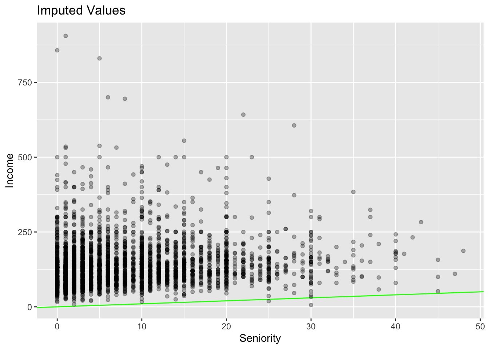
Again, this relationship is not a strong, linear one. Therefore, a linear imputation method of estimation may not be the best approach for this data. Nevertheless, it serves as an example of how to do it using the recipes package.
Day 10, check. Another 20 to go. Tomorrow I’ll continue my exploration of step_impute_*() functions by highlighting the use of the step_impute_lower() function.
Day 11 - Impute values using step_impute_lower()
step_impute_lower() is our focus for today. According to the docs, step_impute_lower() calculates a variable’s minimum, simulates a value between zero and the minimum, and imputes this value for any cases at the minimum value. This imputation method is useful when we have non-negative numeric data, where values cannot be measured below a known value.
For today’s examples, I’m going to use the modeldata package’s crickets data. This data comes from a study examining the relationship between chirp rates and temperature for two different cricket species (run ?crickets in your console to learn more).
data(crickets, package = "modeldata")
glimpse(crickets)Rows: 31
Columns: 3
$ species <fct> O. exclamationis, O. exclamationis, O. exclamationis, O. exclamationis, O. exclama…
$ temp <dbl> 20.8, 20.8, 24.0, 24.0, 24.0, 24.0, 26.2, 26.2, 26.2, 26.2, 28.4, 29.0, 30.4, 30.4…
$ rate <dbl> 67.9, 65.1, 77.3, 78.7, 79.4, 80.4, 85.8, 86.6, 87.5, 89.1, 98.6, 100.8, 99.3, 101…skim(crickets)| Name | crickets |
| Number of rows | 31 |
| Number of columns | 3 |
| _______________________ | |
| Column type frequency: | |
| factor | 1 |
| numeric | 2 |
| ________________________ | |
| Group variables | None |
Variable type: factor
| skim_variable | n_missing | complete_rate | ordered | n_unique | top_counts |
|---|---|---|---|---|---|
| species | 0 | 1 | FALSE | 2 | O. : 17, O. : 14 |
Variable type: numeric
| skim_variable | n_missing | complete_rate | mean | sd | p0 | p25 | p50 | p75 | p100 | hist |
|---|---|---|---|---|---|---|---|---|---|---|
| temp | 0 | 1 | 23.76 | 3.82 | 17.2 | 20.80 | 24.0 | 26.35 | 30.4 | ▆▆▆▇▅ |
| rate | 0 | 1 | 72.89 | 16.91 | 44.3 | 59.45 | 76.2 | 85.25 | 101.7 | ▅▅▇▆▃ |
We’re also going to modify the data a bit to better highlight what step_impute_lower() is doing. Here I’m just truncating all temp values less than or equal to 21 to 21.
# Create a floor at temp = 21
crickets <- crickets |>
mutate(temp = case_when(
temp <= 21 ~ 21,
TRUE ~ as.double(temp)
))
print(crickets, n = 50)# A tibble: 31 × 3
species temp rate
<fct> <dbl> <dbl>
1 O. exclamationis 21 67.9
2 O. exclamationis 21 65.1
3 O. exclamationis 24 77.3
4 O. exclamationis 24 78.7
5 O. exclamationis 24 79.4
6 O. exclamationis 24 80.4
7 O. exclamationis 26.2 85.8
8 O. exclamationis 26.2 86.6
9 O. exclamationis 26.2 87.5
10 O. exclamationis 26.2 89.1
11 O. exclamationis 28.4 98.6
12 O. exclamationis 29 101.
13 O. exclamationis 30.4 99.3
14 O. exclamationis 30.4 102.
15 O. niveus 21 44.3
16 O. niveus 21 47.2
17 O. niveus 21 47.6
18 O. niveus 21 49.6
19 O. niveus 21 50.3
20 O. niveus 21 51.8
21 O. niveus 21 60
22 O. niveus 21 58.5
23 O. niveus 21 58.9
24 O. niveus 22.1 60.7
25 O. niveus 23.5 69.8
26 O. niveus 24.2 70.9
27 O. niveus 25.9 76.2
28 O. niveus 26.5 76.1
29 O. niveus 26.5 77
30 O. niveus 26.5 77.7
31 O. niveus 28.6 84.7For simplicity, I’m not going to create a testing and training split and will use the full data for our example. Let’s start with our recipe.
crickets_rec <- recipe(~., data = crickets) |>
step_impute_lower(temp) |>
prep()
crickets_rec── Recipe ──────────────────────────────────────────────────────────────────────────────────────────── Inputs Number of variables by rolepredictor: 3── Training information Training data contained 31 data points and no incomplete rows.── Operations • Lower bound imputation for: temp | TrainedLet’s take a quick peek at what’s happening under the hood by tidying our recipe object.
tidy(crickets_rec)# A tibble: 1 × 6
number operation type trained skip id
<int> <chr> <chr> <lgl> <lgl> <chr>
1 1 step impute_lower TRUE FALSE impute_lower_h7llztidy(crickets_rec, number = 1)# A tibble: 1 × 3
terms value id
<chr> <dbl> <chr>
1 temp 21 impute_lower_h7llzYou’ll notice the value column in the tibble represents the minimum value within the column. Using this value, step_impute_lower() will replace these values with any value between 0 and 21. Let’s bake this recipe and verify this is the case.
baked_crickets <- bake(crickets_rec, new_data = NULL)
print(baked_crickets, n = 50)# A tibble: 31 × 3
species temp rate
<fct> <dbl> <dbl>
1 O. exclamationis 7.84 67.9
2 O. exclamationis 20.1 65.1
3 O. exclamationis 24 77.3
4 O. exclamationis 24 78.7
5 O. exclamationis 24 79.4
6 O. exclamationis 24 80.4
7 O. exclamationis 26.2 85.8
8 O. exclamationis 26.2 86.6
9 O. exclamationis 26.2 87.5
10 O. exclamationis 26.2 89.1
11 O. exclamationis 28.4 98.6
12 O. exclamationis 29 101.
13 O. exclamationis 30.4 99.3
14 O. exclamationis 30.4 102.
15 O. niveus 5.51 44.3
16 O. niveus 7.75 47.2
17 O. niveus 6.99 47.6
18 O. niveus 8.92 49.6
19 O. niveus 15.2 50.3
20 O. niveus 0.0919 51.8
21 O. niveus 13.6 60
22 O. niveus 12.0 58.5
23 O. niveus 10.0 58.9
24 O. niveus 22.1 60.7
25 O. niveus 23.5 69.8
26 O. niveus 24.2 70.9
27 O. niveus 25.9 76.2
28 O. niveus 26.5 76.1
29 O. niveus 26.5 77
30 O. niveus 26.5 77.7
31 O. niveus 28.6 84.7Great! All values of 21 have now been imputed with a value between 0 and the minimum value for the column, 21.
We can also create a plot to highlight what step_impute_lower() is doing. This approach is adapted from the example in the docs (?step_impute_lower()).
plot(baked_crickets$temp, crickets$temp,
ylab = "pre-imputation", xlab = "imputed"
)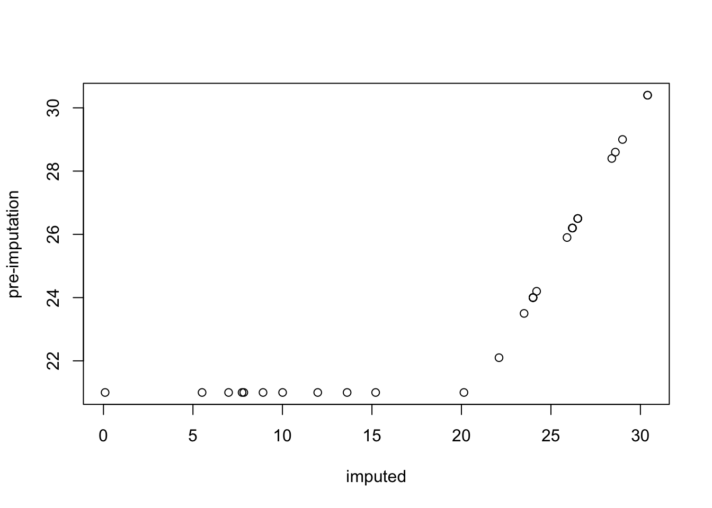
step_impute_lower() is pretty straightforward in my opinion. Give it a try. That’s it for today. A short one. Tomorrow is our final step_impute_*() function, step_impute_roll().
Day 12 - Impute values using a rolling window via step_impute_roll()
We’re going to round out our discussion of step_impute_*() functions by highlighting the use of step_impute_roll(). step_impute_roll() utilizes window functions to calculate missing values. At first, I had trouble understanding how window functions are utilized. However, seeing a simplified example helped me better understand what was occurring.
Let’s get some data for today’s examples. I’m going back to our obfuscated Google Analytics data from the Google Merchandise store for today’s examples.
data_ga <-
read_csv(
here("blog/posts/2024-01-01-30-days-challenge-tidymodels-recipes/data_google_merch.csv")
) |>
mutate(
event_date = ymd(event_date),
revenue = price_in_usd * quantity
) Rows: 9365 Columns: 14
── Column specification ────────────────────────────────────────────────────────────────────────────
Delimiter: ","
chr (8): item_name, item_category, shipping_tier, payment_type, category, country, region, city
dbl (6): event_date, purchase_revenue_in_usd, transaction_id, price_in_usd, quantity, item_reven...
ℹ Use `spec()` to retrieve the full column specification for this data.
ℹ Specify the column types or set `show_col_types = FALSE` to quiet this message.glimpse(data_ga)Rows: 9,365
Columns: 15
$ event_date <date> 2020-12-01, 2020-12-01, 2020-12-01, 2020-12-01, 2020-12-01, 2020-…
$ purchase_revenue_in_usd <dbl> 40, 40, 40, 40, 40, 40, 40, 62, 62, 44, 28, 28, 36, 36, 36, 36, 92…
$ transaction_id <dbl> 10648, 10648, 10648, 10648, 10648, 10648, 10648, 171491, 171491, 1…
$ item_name <chr> "Google Hemp Tote", "Android SM S/F18 Sticker Sheet", "Android Buo…
$ item_category <chr> "Clearance", "Accessories", "Drinkware", "Small Goods", "Office", …
$ price_in_usd <dbl> 12, 2, 4, 2, 3, 3, 14, 48, 14, 44, 14, 14, 1, 4, 16, 7, 92, 7, 14,…
$ quantity <dbl> 1, 1, 1, 1, 1, 1, 1, 1, 1, 1, 1, 1, 1, 1, 1, 2, 1, 53, 1, 1, 1, 1,…
$ item_revenue_in_usd <dbl> 12, 2, 4, 2, 3, 3, 14, 48, 14, 44, 14, 14, 1, 4, 16, 14, 92, 371, …
$ shipping_tier <chr> "FedEx Ground", "FedEx Ground", "FedEx Ground", "FedEx Ground", "F…
$ payment_type <chr> "Pay with credit card", "Pay with credit card", "Pay with credit c…
$ category <chr> "mobile", "mobile", "mobile", "mobile", "mobile", "mobile", "mobil…
$ country <chr> "United States", "United States", "United States", "United States"…
$ region <chr> "California", "California", "California", "California", "Californi…
$ city <chr> "San Jose", "San Jose", "San Jose", "San Jose", "San Jose", "San J…
$ revenue <dbl> 12, 2, 4, 2, 3, 3, 14, 48, 14, 44, 14, 14, 1, 4, 16, 14, 92, 371, …skim(data_ga)| Name | data_ga |
| Number of rows | 9365 |
| Number of columns | 15 |
| _______________________ | |
| Column type frequency: | |
| character | 8 |
| Date | 1 |
| numeric | 6 |
| ________________________ | |
| Group variables | None |
Variable type: character
| skim_variable | n_missing | complete_rate | min | max | empty | n_unique | whitespace |
|---|---|---|---|---|---|---|---|
| item_name | 0 | 1.00 | 8 | 41 | 0 | 385 | 0 |
| item_category | 164 | 0.98 | 3 | 23 | 0 | 20 | 0 |
| shipping_tier | 109 | 0.99 | 10 | 22 | 0 | 13 | 0 |
| payment_type | 0 | 1.00 | 20 | 20 | 0 | 1 | 0 |
| category | 0 | 1.00 | 6 | 7 | 0 | 3 | 0 |
| country | 0 | 1.00 | 4 | 20 | 0 | 96 | 0 |
| region | 0 | 1.00 | 4 | 52 | 0 | 289 | 0 |
| city | 0 | 1.00 | 4 | 24 | 0 | 434 | 0 |
Variable type: Date
| skim_variable | n_missing | complete_rate | min | max | median | n_unique |
|---|---|---|---|---|---|---|
| event_date | 0 | 1 | 2020-12-01 | 2021-01-30 | 2020-12-16 | 61 |
Variable type: numeric
| skim_variable | n_missing | complete_rate | mean | sd | p0 | p25 | p50 | p75 | p100 | hist |
|---|---|---|---|---|---|---|---|---|---|---|
| purchase_revenue_in_usd | 0 | 1 | 101.84 | 118.06 | 2 | 39 | 72 | 125 | 1530 | ▇▁▁▁▁ |
| transaction_id | 0 | 1 | 487977.44 | 282873.71 | 546 | 249662 | 479506 | 724658 | 999850 | ▇▇▇▇▇ |
| price_in_usd | 0 | 1 | 19.52 | 18.74 | 1 | 7 | 14 | 24 | 120 | ▇▂▁▁▁ |
| quantity | 0 | 1 | 1.45 | 2.77 | 1 | 1 | 1 | 1 | 160 | ▇▁▁▁▁ |
| item_revenue_in_usd | 0 | 1 | 23.26 | 28.61 | 1 | 8 | 15 | 30 | 704 | ▇▁▁▁▁ |
| revenue | 0 | 1 | 23.26 | 28.58 | 1 | 8 | 15 | 30 | 704 | ▇▁▁▁▁ |
To make it clear what step_impute_roll() is doing, I’m going to wrangle the data to only look at total revenue for Clearance item purchases for a specific date range (2 weeks). Since this data is complete, I will introduce some missing values into the data.
data_ga <- data_ga |>
select(event_date, transaction_id, item_category, revenue) |>
filter(item_category == "Clearance") |>
group_by(event_date) |>
summarise(total_rev = sum(revenue)) |>
filter(
event_date >= as_date('2020-12-14') &
event_date <= as_date('2020-12-27')
)
# Introduce some NAs for the example
data_ga$total_rev[c(1, 6, 7, 8, 14)] <- NALet’s get our recipe set up to the point of prepping it.
ga_rec <- recipe(~., data = data_ga) |>
update_role(event_date, new_role = "data_ref") |>
step_impute_roll(total_rev, window = 3) |>
prep()
ga_rec── Recipe ──────────────────────────────────────────────────────────────────────────────────────────── Inputs Number of variables by rolepredictor: 1
data_ref: 1── Training information Training data contained 14 data points and 5 incomplete rows.── Operations • Rolling imputation for: total_rev | Trainedtidy(ga_rec)# A tibble: 1 × 6
number operation type trained skip id
<int> <chr> <chr> <lgl> <lgl> <chr>
1 1 step impute_roll TRUE FALSE impute_roll_6HJg3tidy(ga_rec, number = 1)# A tibble: 1 × 3
terms window id
<chr> <int> <chr>
1 total_rev 3 impute_roll_6HJg3Not too much useful information here. Let’s move forward with bake and see the imputed values. Take note, we will still have a missing value (more on this later).
bake(ga_rec, new_data = NULL)# A tibble: 14 × 2
event_date total_rev
<date> <dbl>
1 2020-12-14 324.
2 2020-12-15 323
3 2020-12-16 324
4 2020-12-17 203
5 2020-12-18 215
6 2020-12-19 215
7 2020-12-20 NA
8 2020-12-21 55
9 2020-12-22 55
10 2020-12-23 256
11 2020-12-24 32
12 2020-12-25 73
13 2020-12-26 19
14 2020-12-27 46 We now have a complete data set. But, how were these imputed values calculated? If you peek at step_impute_roll()’s arguments, you’ll notice it contains a statistic argument set to median. It should be pretty intuitive that we are calculating the median here, but the median of what? It’s the median of our window we set in the function, which was window = 3.
args(step_impute_roll)function (recipe, ..., role = NA, trained = FALSE, columns = NULL,
statistic = median, window = 5, skip = FALSE, id = rand_id("impute_roll"))
NULLWe need to be aware of some important notes regarding our calcuation of the median here. Let’s put our baked data side-by-side with our old data, just so it’s easier to see what was imputed and how it was calculated.
baked_ga <- bake(ga_rec, new_data = NULL) |>
rename(new_rev = total_rev) |>
left_join(
data_ga |> rename(old_rev = total_rev)
)Joining with `by = join_by(event_date)`Let’s start with the tails, the missing values at row 1 and 14. Since these values lack a value above and below, they default to using the series 1:3 and 12:14 for imputation. When making the calculation for the window, only complete values are passed to the calculation. Take for example the missing value at row 1. The 324 imputed value comes from calculating the median between 323 and 324.
# We're rounding up here for the imputed value
median(c(323, 324))[1] 323.5The same calculation is being done for the 14th value, which looks like this:
median(c(73, 19))[1] 46This brings up the interesting case for the imputed NA value at row 7, or the lack there of. Since all the values within the window are NA, an NA is imputed (i.e., you can’t calculate a median with no known values). To fix this, we would need to expand our window to include more values. We do this by setting window = 5 within the function.
baked_ga <- recipe(~., data = data_ga) |>
update_role(event_date, new_role = "date_ref") |>
step_impute_roll(total_rev, window = 5) |>
prep() |>
bake(new_data = NULL)
# Now we have complete values, since we expanded the window
baked_ga# A tibble: 14 × 2
event_date total_rev
<date> <dbl>
1 2020-12-14 269
2 2020-12-15 323
3 2020-12-16 324
4 2020-12-17 203
5 2020-12-18 215
6 2020-12-19 209
7 2020-12-20 135
8 2020-12-21 156.
9 2020-12-22 55
10 2020-12-23 256
11 2020-12-24 32
12 2020-12-25 73
13 2020-12-26 19
14 2020-12-27 52.5What about other functions to calculate values? To do this, step_impute_roll() has the statistic argument. Say instead of the median we want to calculate our imputed value using the mean. We just do the following:
ga_mean_rec <- recipe(~., data_ga) |>
update_role(event_date, new_role = "ref_date") |>
step_impute_roll(total_rev, window = 5, statistic = mean) |>
prep() |>
bake(new_data = NULL)
ga_mean_rec# A tibble: 14 × 2
event_date total_rev
<date> <dbl>
1 2020-12-14 266.
2 2020-12-15 323
3 2020-12-16 324
4 2020-12-17 203
5 2020-12-18 215
6 2020-12-19 209
7 2020-12-20 135
8 2020-12-21 156.
9 2020-12-22 55
10 2020-12-23 256
11 2020-12-24 32
12 2020-12-25 73
13 2020-12-26 19
14 2020-12-27 95
Note
According to the docs, the statistic function you use should:
- contain a single argument for the data to compute the imputed value.
- return a double precision value.
They also note only complete values will be passed to the functions specified with the statistic argument.
That’s a wrap for step_imputation_*() functions. Next we’re going to focus on step functions to decorrelate predictors.
Day 14 - Perform dimension reduction with step_pca()
For today, I’m overviewing step_pca(). step_pca() performs dimension reduction using principal components analysis. Dimension reduction seeks to combine predictors into latent predictors, while also retaining as much information from the full data set as possible. Principal component analysis can seem like an advanced topic, but the @statquest YouTube channel has a good step-by-step video on how it’s performed, in general terms.
We’ll use the mlc_churn data from the ‘modeldata’ package for today’s examples. This data is an artificial data set representing customer churn (i.e., the loss of customers to a service). You can learn more about this data by running ?mlc_churn within your console. But here’s some basic data exploration code to get a sense of what’s included within the data.
data(mlc_churn, package = "modeldata")
glimpse(mlc_churn)Rows: 5,000
Columns: 20
$ state <fct> KS, OH, NJ, OH, OK, AL, MA, MO, LA, WV, IN, RI, IA, MT, IA, …
$ account_length <int> 128, 107, 137, 84, 75, 118, 121, 147, 117, 141, 65, 74, 168,…
$ area_code <fct> area_code_415, area_code_415, area_code_415, area_code_408, …
$ international_plan <fct> no, no, no, yes, yes, yes, no, yes, no, yes, no, no, no, no,…
$ voice_mail_plan <fct> yes, yes, no, no, no, no, yes, no, no, yes, no, no, no, no, …
$ number_vmail_messages <int> 25, 26, 0, 0, 0, 0, 24, 0, 0, 37, 0, 0, 0, 0, 0, 0, 27, 0, 3…
$ total_day_minutes <dbl> 265.1, 161.6, 243.4, 299.4, 166.7, 223.4, 218.2, 157.0, 184.…
$ total_day_calls <int> 110, 123, 114, 71, 113, 98, 88, 79, 97, 84, 137, 127, 96, 88…
$ total_day_charge <dbl> 45.07, 27.47, 41.38, 50.90, 28.34, 37.98, 37.09, 26.69, 31.3…
$ total_eve_minutes <dbl> 197.4, 195.5, 121.2, 61.9, 148.3, 220.6, 348.5, 103.1, 351.6…
$ total_eve_calls <int> 99, 103, 110, 88, 122, 101, 108, 94, 80, 111, 83, 148, 71, 7…
$ total_eve_charge <dbl> 16.78, 16.62, 10.30, 5.26, 12.61, 18.75, 29.62, 8.76, 29.89,…
$ total_night_minutes <dbl> 244.7, 254.4, 162.6, 196.9, 186.9, 203.9, 212.6, 211.8, 215.…
$ total_night_calls <int> 91, 103, 104, 89, 121, 118, 118, 96, 90, 97, 111, 94, 128, 1…
$ total_night_charge <dbl> 11.01, 11.45, 7.32, 8.86, 8.41, 9.18, 9.57, 9.53, 9.71, 14.6…
$ total_intl_minutes <dbl> 10.0, 13.7, 12.2, 6.6, 10.1, 6.3, 7.5, 7.1, 8.7, 11.2, 12.7,…
$ total_intl_calls <int> 3, 3, 5, 7, 3, 6, 7, 6, 4, 5, 6, 5, 2, 5, 6, 9, 4, 3, 5, 2, …
$ total_intl_charge <dbl> 2.70, 3.70, 3.29, 1.78, 2.73, 1.70, 2.03, 1.92, 2.35, 3.02, …
$ number_customer_service_calls <int> 1, 1, 0, 2, 3, 0, 3, 0, 1, 0, 4, 0, 1, 3, 4, 4, 1, 3, 1, 1, …
$ churn <fct> no, no, no, no, no, no, no, no, no, no, yes, no, no, no, no,…skim(mlc_churn)| Name | mlc_churn |
| Number of rows | 5000 |
| Number of columns | 20 |
| _______________________ | |
| Column type frequency: | |
| factor | 5 |
| numeric | 15 |
| ________________________ | |
| Group variables | None |
Variable type: factor
| skim_variable | n_missing | complete_rate | ordered | n_unique | top_counts |
|---|---|---|---|---|---|
| state | 0 | 1 | FALSE | 51 | WV: 158, MN: 125, AL: 124, ID: 119 |
| area_code | 0 | 1 | FALSE | 3 | are: 2495, are: 1259, are: 1246 |
| international_plan | 0 | 1 | FALSE | 2 | no: 4527, yes: 473 |
| voice_mail_plan | 0 | 1 | FALSE | 2 | no: 3677, yes: 1323 |
| churn | 0 | 1 | FALSE | 2 | no: 4293, yes: 707 |
Variable type: numeric
| skim_variable | n_missing | complete_rate | mean | sd | p0 | p25 | p50 | p75 | p100 | hist |
|---|---|---|---|---|---|---|---|---|---|---|
| account_length | 0 | 1 | 100.26 | 39.69 | 1 | 73.00 | 100.00 | 127.00 | 243.00 | ▂▇▇▂▁ |
| number_vmail_messages | 0 | 1 | 7.76 | 13.55 | 0 | 0.00 | 0.00 | 17.00 | 52.00 | ▇▁▂▁▁ |
| total_day_minutes | 0 | 1 | 180.29 | 53.89 | 0 | 143.70 | 180.10 | 216.20 | 351.50 | ▁▃▇▅▁ |
| total_day_calls | 0 | 1 | 100.03 | 19.83 | 0 | 87.00 | 100.00 | 113.00 | 165.00 | ▁▁▇▇▁ |
| total_day_charge | 0 | 1 | 30.65 | 9.16 | 0 | 24.43 | 30.62 | 36.75 | 59.76 | ▁▃▇▅▁ |
| total_eve_minutes | 0 | 1 | 200.64 | 50.55 | 0 | 166.38 | 201.00 | 234.10 | 363.70 | ▁▂▇▅▁ |
| total_eve_calls | 0 | 1 | 100.19 | 19.83 | 0 | 87.00 | 100.00 | 114.00 | 170.00 | ▁▁▇▇▁ |
| total_eve_charge | 0 | 1 | 17.05 | 4.30 | 0 | 14.14 | 17.09 | 19.90 | 30.91 | ▁▂▇▅▁ |
| total_night_minutes | 0 | 1 | 200.39 | 50.53 | 0 | 166.90 | 200.40 | 234.70 | 395.00 | ▁▃▇▃▁ |
| total_night_calls | 0 | 1 | 99.92 | 19.96 | 0 | 87.00 | 100.00 | 113.00 | 175.00 | ▁▁▇▆▁ |
| total_night_charge | 0 | 1 | 9.02 | 2.27 | 0 | 7.51 | 9.02 | 10.56 | 17.77 | ▁▃▇▃▁ |
| total_intl_minutes | 0 | 1 | 10.26 | 2.76 | 0 | 8.50 | 10.30 | 12.00 | 20.00 | ▁▃▇▃▁ |
| total_intl_calls | 0 | 1 | 4.44 | 2.46 | 0 | 3.00 | 4.00 | 6.00 | 20.00 | ▇▅▁▁▁ |
| total_intl_charge | 0 | 1 | 2.77 | 0.75 | 0 | 2.30 | 2.78 | 3.24 | 5.40 | ▁▃▇▃▁ |
| number_customer_service_calls | 0 | 1 | 1.57 | 1.31 | 0 | 1.00 | 1.00 | 2.00 | 9.00 | ▇▅▁▁▁ |
Let’s create our training and testing split.
set.seed(20240114)
churn_split <- initial_split(mlc_churn, prop = .8)
churn_tr <- training(churn_split)
churn_te <- testing(churn_split)Before we apply the step_pca() function, we need to first center and scale our data. To do this, we’ll first use step_normalize() on all numeric variables within the data set. Normalizing will place all numeric data on the same scale, which is required step to complete before performing principal components analysis.
Post center and scaling of our variables, we’ll use step_pca() on all_numeric() predictors. We use the num_comp = 3 argument to specify how many components will be outputted from our principal components analysis.
Let’s prep() and tidy() our recipe to peek under the hood to get a better sense of what’s happening with this recipe step.
churn_rec <- recipe(churn ~ ., data = churn_tr) |>
update_role(state, area_code, new_role = "ref_var") |>
update_role(ends_with("plan"), new_role = "plan_var") |>
step_normalize(all_numeric()) |>
step_pca(all_numeric_predictors(), num_comp = 3) |>
prep()
churn_rec── Recipe ──────────────────────────────────────────────────────────────────────────────────────────── Inputs Number of variables by roleoutcome: 1
predictor: 15
plan_var: 2
ref_var: 2── Training information Training data contained 4000 data points and no incomplete rows.── Operations • Centering and scaling for: account_length and number_vmail_messages, ... | Trained• PCA extraction with: account_length, number_vmail_messages, total_day_minutes, ... | TrainedIt’s also important to point out that the tidy() method for step_pca() has two type options:
type = "coef"type = "variance"
Each of these options modify what gets printed to the console. I’ve added some comments below on what gets outputted for each.
tidy(churn_rec)# A tibble: 2 × 6
number operation type trained skip id
<int> <chr> <chr> <lgl> <lgl> <chr>
1 1 step normalize TRUE FALSE normalize_7hokR
2 2 step pca TRUE FALSE pca_BXk23 # Output the variable loadings for each component
tidy(churn_rec, number = 2, type = "coef")# A tibble: 225 × 4
terms value component id
<chr> <dbl> <chr> <chr>
1 account_length 0.0192 PC1 pca_BXk23
2 number_vmail_messages -0.00296 PC1 pca_BXk23
3 total_day_minutes 0.312 PC1 pca_BXk23
4 total_day_calls -0.000110 PC1 pca_BXk23
5 total_day_charge 0.312 PC1 pca_BXk23
6 total_eve_minutes -0.462 PC1 pca_BXk23
7 total_eve_calls 0.0230 PC1 pca_BXk23
8 total_eve_charge -0.462 PC1 pca_BXk23
9 total_night_minutes 0.426 PC1 pca_BXk23
10 total_night_calls 0.00724 PC1 pca_BXk23
# ℹ 215 more rows# Output the variance each component accounts for
tidy(churn_rec, number = 2, type = "variance")# A tibble: 60 × 4
terms value component id
<chr> <dbl> <int> <chr>
1 variance 2.07 1 pca_BXk23
2 variance 2.02 2 pca_BXk23
3 variance 1.98 3 pca_BXk23
4 variance 1.94 4 pca_BXk23
5 variance 1.06 5 pca_BXk23
6 variance 1.04 6 pca_BXk23
7 variance 1.01 7 pca_BXk23
8 variance 0.988 8 pca_BXk23
9 variance 0.977 9 pca_BXk23
10 variance 0.965 10 pca_BXk23
# ℹ 50 more rowsGreat, let’s bake our recipe. You’ll notice step_pca() reduced all numeric data into our three components, PC1, PC2, and PC3.
bake(churn_rec, new_data = NULL)# A tibble: 4,000 × 8
state area_code international_plan voice_mail_plan churn PC1 PC2 PC3
<fct> <fct> <fct> <fct> <fct> <dbl> <dbl> <dbl>
1 IN area_code_408 no no no -0.358 1.03 -1.30
2 AZ area_code_415 no yes no 3.04 2.20 -1.28
3 IL area_code_415 no no no 1.17 -2.36 0.697
4 IN area_code_415 no no no -0.127 0.811 1.14
5 FL area_code_415 no no no 0.248 2.06 -0.311
6 NM area_code_510 yes no no -1.28 0.0720 1.02
7 DE area_code_415 no no no -1.95 0.250 -0.553
8 SD area_code_408 no no no 0.624 1.36 -0.344
9 DE area_code_510 no no no -1.13 -0.663 -0.804
10 CT area_code_415 no yes no -2.60 0.817 0.939
# ℹ 3,990 more rowsConstraining by component works, but step_pca() also provides a threshold argument. In other words, we can specify the total variance that should be covered by components, and step_pca() will create the required number of components based on this threshold. Let’s say we want our PCA to create a number of components to cover 70% of the variability in our variables. We can do this by using the following recipe code:
churn_rec_thresh <- recipe(churn ~ ., data = churn_tr) |>
update_role(state, area_code, new_role = "ref_var") |>
update_role(ends_with("plan"), new_role = "plan_var") |>
step_normalize(all_numeric()) |>
step_pca(all_numeric_predictors(), threshold = .7) |>
prep()
churn_rec_thresh── Recipe ──────────────────────────────────────────────────────────────────────────────────────────── Inputs Number of variables by roleoutcome: 1
predictor: 15
plan_var: 2
ref_var: 2── Training information Training data contained 4000 data points and no incomplete rows.── Operations • Centering and scaling for: account_length and number_vmail_messages, ... | Trained• PCA extraction with: account_length, number_vmail_messages, total_day_minutes, ... | TrainedLet’s tidy() our recipe to see what’s happening here.
tidy(churn_rec_thresh)# A tibble: 2 × 6
number operation type trained skip id
<int> <chr> <chr> <lgl> <lgl> <chr>
1 1 step normalize TRUE FALSE normalize_8WvPy
2 2 step pca TRUE FALSE pca_Aj4UJ # variable loadings
tidy(churn_rec_thresh, number = 2, type = "coef")# A tibble: 225 × 4
terms value component id
<chr> <dbl> <chr> <chr>
1 account_length 0.0192 PC1 pca_Aj4UJ
2 number_vmail_messages -0.00296 PC1 pca_Aj4UJ
3 total_day_minutes 0.312 PC1 pca_Aj4UJ
4 total_day_calls -0.000110 PC1 pca_Aj4UJ
5 total_day_charge 0.312 PC1 pca_Aj4UJ
6 total_eve_minutes -0.462 PC1 pca_Aj4UJ
7 total_eve_calls 0.0230 PC1 pca_Aj4UJ
8 total_eve_charge -0.462 PC1 pca_Aj4UJ
9 total_night_minutes 0.426 PC1 pca_Aj4UJ
10 total_night_calls 0.00724 PC1 pca_Aj4UJ
# ℹ 215 more rows# variance accounted for
tidy(churn_rec_thresh, number = 2, type = "variance")# A tibble: 60 × 4
terms value component id
<chr> <dbl> <int> <chr>
1 variance 2.07 1 pca_Aj4UJ
2 variance 2.02 2 pca_Aj4UJ
3 variance 1.98 3 pca_Aj4UJ
4 variance 1.94 4 pca_Aj4UJ
5 variance 1.06 5 pca_Aj4UJ
6 variance 1.04 6 pca_Aj4UJ
7 variance 1.01 7 pca_Aj4UJ
8 variance 0.988 8 pca_Aj4UJ
9 variance 0.977 9 pca_Aj4UJ
10 variance 0.965 10 pca_Aj4UJ
# ℹ 50 more rowsNow, we’ll bake our churn_rec_thresh recipe.
bake(churn_rec_thresh, new_data = NULL)# A tibble: 4,000 × 12
state area_code international_plan voice_mail_plan churn PC1 PC2 PC3 PC4 PC5
<fct> <fct> <fct> <fct> <fct> <dbl> <dbl> <dbl> <dbl> <dbl>
1 IN area_code_408 no no no -0.358 1.03 -1.30 0.613 0.402
2 AZ area_code_415 no yes no 3.04 2.20 -1.28 1.06 1.04
3 IL area_code_415 no no no 1.17 -2.36 0.697 1.05 0.218
4 IN area_code_415 no no no -0.127 0.811 1.14 1.14 0.177
5 FL area_code_415 no no no 0.248 2.06 -0.311 -2.28 -1.20
6 NM area_code_510 yes no no -1.28 0.0720 1.02 1.05 -1.12
7 DE area_code_415 no no no -1.95 0.250 -0.553 1.80 -0.712
8 SD area_code_408 no no no 0.624 1.36 -0.344 -0.717 -1.42
9 DE area_code_510 no no no -1.13 -0.663 -0.804 -0.993 -0.159
10 CT area_code_415 no yes no -2.60 0.817 0.939 -1.09 2.53
# ℹ 3,990 more rows
# ℹ 2 more variables: PC6 <dbl>, PC7 <dbl>To meet our threshold, the step_pca() recipes step calculated and returned seven principal components, PC1 - PC7.
step_pca() makes it pretty easy to do dimension reduction utilizing principal components analysis. Give it a try.
Another day down. See you tomorrow.
Day 15 - Use step_ica() for signal extraction
Here we are, the halfway point 🎉.
Today, I’m overviewing the use of step_ica(). This step is used to make transformations in signal processing. In general terms, independent component analysis (ICA) is a dimensionality reduction technique that attempts to isolate signal from noise.
Before reviewing this step, I had to do some research on what ICA is and how it is used. Here are a few sources I found useful to gain an intuitive sense of this step:
- Making sense of independent component analysis Cross Validated post.
- Introduction to ICA: Independent Component Analysis by Jonas Dieckmann
- Independent Component Analysis (ICA) and Automated Component Labeling — EEG Example by Bartek Kulas
Across many of these sources, two examples are commonly presented to more clearly explain the purpose of ICA. First, the cocktail party problem, where we can isolate individual conversations among many during a party. The second comes from audio recording. Take for example a situation where you have multiple microphones. These microphones are being used to capture the sound of several audio sources (e.g., various instruments), and you’re attempting to isolate the sound from a single source. Both are situations where you’re trying to isolate the signal from surrounding noise. Indeed, these are simplified examples. The linked sources above provide more sophisticated explanations.
Before we use step_ica(), we’ll need some data. I’m using a portion of the data from the Independent Component Analysis (ICA) and Automated Component Labeling — EEG Example. This data comes from the use of Electroencephalography (EEG). It was collected to examine EEG correlates of a genetic predisposition to alcoholism, and it was made available via Kaggle.
Warning
I am not an EEG professional, and I rarely work with this type of data. The approach I highlight here may not be best practice.
This data represents EEG sensor measurements of electrical activity during an experimental session for one participant. There are multiple sensors, which collect data intended to observe six known brain wave patterns (again, I’m not an expert here, so this is certainly a more complex topic then I’m making it out to be here). Let’s use step_ica() to see if we can transform this data into six different signals.
data_eeg <-
read_csv(
here("blog/posts/2024-01-01-30-days-challenge-tidymodels-recipes/data_eeg.csv")
) |>
clean_names() |>
rename(id = x1)New names:
Rows: 16384 Columns: 10
── Column specification
──────────────────────────────────────────────────────────────────────────── Delimiter: "," chr
(4): sensor position, subject identifier, matching condition, name dbl (6): ...1, trial number,
sample num, sensor value, channel, time
ℹ Use `spec()` to retrieve the full column specification for this data. ℹ Specify the column types
or set `show_col_types = FALSE` to quiet this message.
• `` -> `...1`glimpse(data_eeg)Rows: 16,384
Columns: 10
$ id <dbl> 5, 6, 7, 8, 9, 10, 11, 12, 13, 14, 15, 16, 17, 18, 19, 20, 21, 22, 23, …
$ trial_number <dbl> 0, 0, 0, 0, 0, 0, 0, 0, 0, 0, 0, 0, 0, 0, 0, 0, 0, 0, 0, 0, 0, 0, 0, 0,…
$ sensor_position <chr> "FP1", "FP1", "FP1", "FP1", "FP1", "FP1", "FP1", "FP1", "FP1", "FP1", "…
$ sample_num <dbl> 0, 1, 2, 3, 4, 5, 6, 7, 8, 9, 10, 11, 12, 13, 14, 15, 16, 17, 18, 19, 2…
$ sensor_value <dbl> -8.921, -8.433, -2.574, 5.239, 11.587, 14.028, 11.587, 6.704, 1.821, -1…
$ subject_identifier <chr> "a", "a", "a", "a", "a", "a", "a", "a", "a", "a", "a", "a", "a", "a", "…
$ matching_condition <chr> "S1 obj", "S1 obj", "S1 obj", "S1 obj", "S1 obj", "S1 obj", "S1 obj", "…
$ channel <dbl> 0, 0, 0, 0, 0, 0, 0, 0, 0, 0, 0, 0, 0, 0, 0, 0, 0, 0, 0, 0, 0, 0, 0, 0,…
$ name <chr> "co2a0000364", "co2a0000364", "co2a0000364", "co2a0000364", "co2a000036…
$ time <dbl> 0.00000000, 0.00390625, 0.00781250, 0.01171875, 0.01562500, 0.01953125,…skim(data_eeg)| Name | data_eeg |
| Number of rows | 16384 |
| Number of columns | 10 |
| _______________________ | |
| Column type frequency: | |
| character | 4 |
| numeric | 6 |
| ________________________ | |
| Group variables | None |
Variable type: character
| skim_variable | n_missing | complete_rate | min | max | empty | n_unique | whitespace |
|---|---|---|---|---|---|---|---|
| sensor_position | 0 | 1 | 1 | 3 | 0 | 64 | 0 |
| subject_identifier | 0 | 1 | 1 | 1 | 0 | 1 | 0 |
| matching_condition | 0 | 1 | 6 | 6 | 0 | 1 | 0 |
| name | 0 | 1 | 11 | 11 | 0 | 1 | 0 |
Variable type: numeric
| skim_variable | n_missing | complete_rate | mean | sd | p0 | p25 | p50 | p75 | p100 | hist |
|---|---|---|---|---|---|---|---|---|---|---|
| id | 0 | 1 | 8228.00 | 4748.27 | 5.00 | 4116.50 | 8228.00 | 12339.50 | 16451.0 | ▇▇▇▇▇ |
| trial_number | 0 | 1 | 0.00 | 0.00 | 0.00 | 0.00 | 0.00 | 0.00 | 0.0 | ▁▁▇▁▁ |
| sample_num | 0 | 1 | 127.50 | 73.90 | 0.00 | 63.75 | 127.50 | 191.25 | 255.0 | ▇▇▇▇▇ |
| sensor_value | 0 | 1 | 1.99 | 7.51 | -39.83 | -2.23 | 1.22 | 5.40 | 51.9 | ▁▂▇▁▁ |
| channel | 0 | 1 | 31.50 | 18.47 | 0.00 | 15.75 | 31.50 | 47.25 | 63.0 | ▇▇▇▇▇ |
| time | 0 | 1 | 0.50 | 0.29 | 0.00 | 0.25 | 0.50 | 0.75 | 1.0 | ▇▇▇▇▇ |
I’ll have to do some data wrangling here to work with the data first, though. Specifically, I need to go from long to wide data. This will give each EEG sensor measurement its own column.
data_eeg <- data_eeg |>
select(sensor_position, sensor_value, time) |>
pivot_wider(
names_from = sensor_position,
values_from = sensor_value
)
data_eeg# A tibble: 256 × 65
time FP1 FP2 F7 F8 AF1 AF2 FZ F4 F3 FC6 FC5 FC2 FC1
<dbl> <dbl> <dbl> <dbl> <dbl> <dbl> <dbl> <dbl> <dbl> <dbl> <dbl> <dbl> <dbl> <dbl>
1 0 -8.92 0.834 -19.8 8.15 -2.15 1.13 -0.071 3.41 -0.092 4.83 -2.43 0.488 0.824
2 0.00391 -8.43 3.28 -12.5 1.80 -2.15 0.641 -0.559 1.46 0.397 6.30 -4.38 -0.977 0.824
3 0.00781 -2.57 5.72 1.15 -2.59 -1.66 -0.336 -1.05 0.478 -1.07 5.81 -5.36 -1.46 0.336
4 0.0117 5.24 7.67 14.8 -4.55 -0.682 -0.824 -0.559 0.966 -3.51 3.37 -5.36 0 -0.641
5 0.0156 11.6 9.62 20.7 -5.04 2.25 0.641 0.905 1.94 -5.46 1.41 -0.966 1.95 -1.13
6 0.0195 14.0 9.62 17.3 -5.52 5.18 3.57 2.37 2.92 -4.49 0.437 6.85 3.42 -1.62
7 0.0234 11.6 8.65 8.96 -4.55 6.64 6.01 3.84 1.94 -1.07 0.926 13.7 3.42 -1.13
8 0.0273 6.70 5.23 0.173 -0.641 5.18 6.99 4.32 0.478 3.33 1.90 15.6 1.95 0.824
9 0.0312 1.82 1.32 -3.73 5.71 1.76 5.52 3.35 0.478 6.74 1.90 11.7 0.977 3.75
10 0.0352 -1.11 -2.10 -2.27 10.6 -1.66 2.59 1.88 1.94 7.23 1.90 3.92 0.977 5.22
# ℹ 246 more rows
# ℹ 51 more variables: T8 <dbl>, T7 <dbl>, CZ <dbl>, C3 <dbl>, C4 <dbl>, CP5 <dbl>, CP6 <dbl>,
# CP1 <dbl>, CP2 <dbl>, P3 <dbl>, P4 <dbl>, PZ <dbl>, P8 <dbl>, P7 <dbl>, PO2 <dbl>, PO1 <dbl>,
# O2 <dbl>, O1 <dbl>, X <dbl>, AF7 <dbl>, AF8 <dbl>, F5 <dbl>, F6 <dbl>, FT7 <dbl>, FT8 <dbl>,
# FPZ <dbl>, FC4 <dbl>, FC3 <dbl>, C6 <dbl>, C5 <dbl>, F2 <dbl>, F1 <dbl>, TP8 <dbl>, TP7 <dbl>,
# AFZ <dbl>, CP3 <dbl>, CP4 <dbl>, P5 <dbl>, P6 <dbl>, C1 <dbl>, C2 <dbl>, PO7 <dbl>, PO8 <dbl>,
# FCZ <dbl>, POZ <dbl>, OZ <dbl>, P2 <dbl>, P1 <dbl>, CPZ <dbl>, nd <dbl>, Y <dbl>In addition, step_ica() requires a few packages to be installed. This includes dimRed and fastICA. If these are not installed beforehand, an error will be returned.
Now we create our recipe. Just like principal components analysis, we need to center and scale our data. We achieve this by applying step_center() and step_scale() to all_numeric() variables. Since we’re attempting to create columns to represent the six brain waves, we’ll set num_comp to 6.
eeg_rec <- recipe(~., data = data_eeg) |>
update_role(time, new_role = "time_ref") |>
step_center(all_numeric()) |>
step_scale(all_numeric()) |>
step_ica(all_numeric(), num_comp = 6) |>
prep()Let’s tidy() our recipe to get a better sense of what’s happening here. You’ll notice it’s very similar to principal components analysis.
tidy(eeg_rec, number = 3)# A tibble: 390 × 4
terms component value id
<chr> <chr> <dbl> <chr>
1 AF1 IC1 -0.0446 ica_xymfX
2 AF1 IC2 0.0123 ica_xymfX
3 AF1 IC3 0.00928 ica_xymfX
4 AF1 IC4 0.000524 ica_xymfX
5 AF1 IC5 -0.0280 ica_xymfX
6 AF1 IC6 -0.0415 ica_xymfX
7 AF2 IC1 -0.0489 ica_xymfX
8 AF2 IC2 0.0667 ica_xymfX
9 AF2 IC3 -0.00168 ica_xymfX
10 AF2 IC4 -0.0385 ica_xymfX
# ℹ 380 more rowsNow let’s bake our data and see what the result of the step_ica() function.
baked_eeg <- bake(eeg_rec, new_data = NULL) |>
bind_cols(data_eeg |> select(time))For the heck of it, let’s plot our baked data. Do you see any of the common brain wave types in these plots? Remember, this is only one participant, so if additional data were included, the patterns might become more apparent.
walk(
baked_eeg |> select(-time),
~plot(baked_eeg$time, .x, type = "line")
)Warning in plot.xy(xy, type, ...): plot type 'line' will be truncated to first character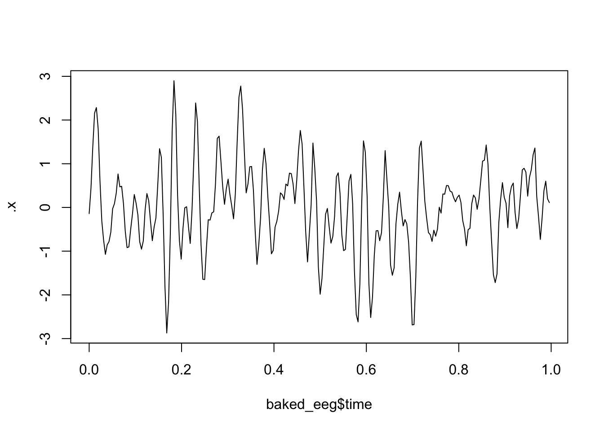
Warning in plot.xy(xy, type, ...): plot type 'line' will be truncated to first character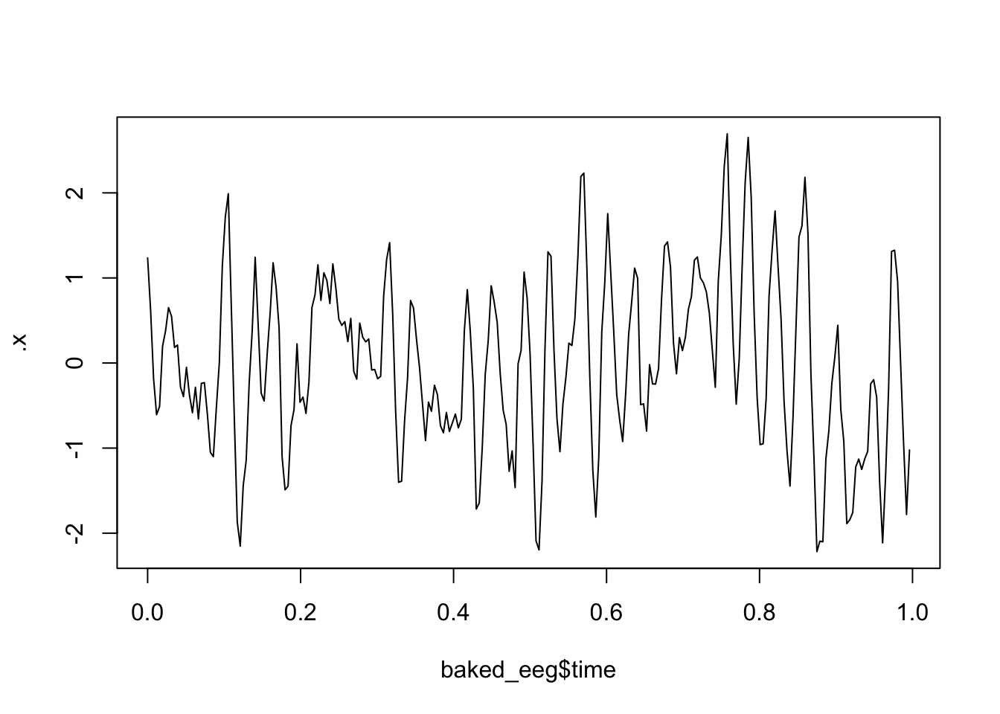
Warning in plot.xy(xy, type, ...): plot type 'line' will be truncated to first character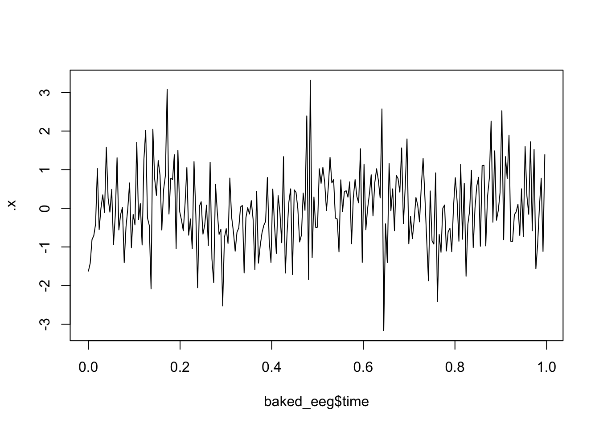
Warning in plot.xy(xy, type, ...): plot type 'line' will be truncated to first character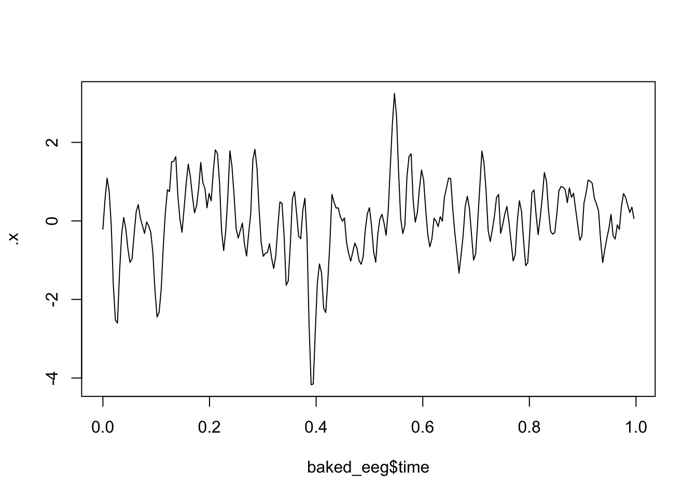
Warning in plot.xy(xy, type, ...): plot type 'line' will be truncated to first character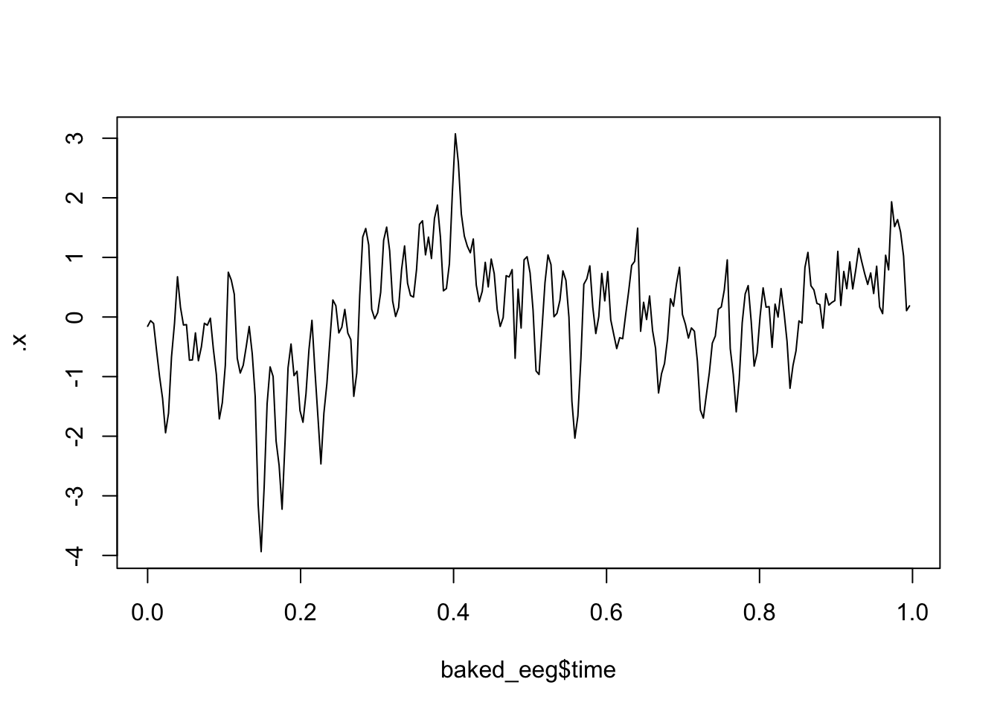
Warning in plot.xy(xy, type, ...): plot type 'line' will be truncated to first character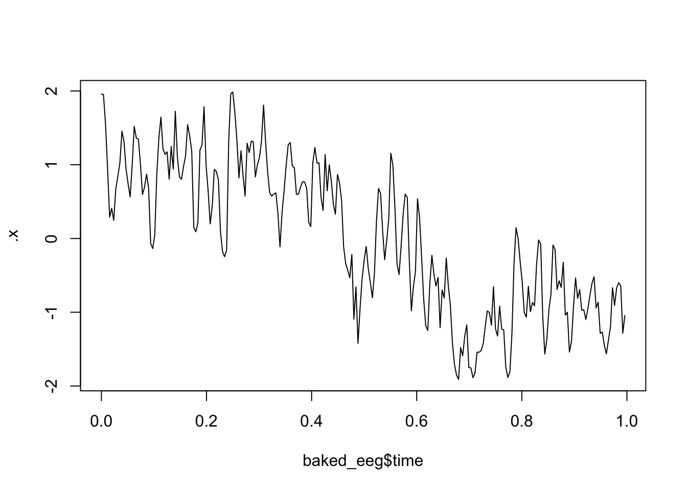
There you have it, another step_*() function to try out. See you tomorrow.
Day 16 - Use step_other() to collapse low occurring categorical levels into other
For today, I’m going to highlight the use of step_other(). step_other() is used to collapse infrequent categorical values into an other category. To do this, the function has a threshold argument to modify the cutoff for determining values within this category. Let’s highlight its use with an example.
For data, I’m going back to our Google Analytics data. I’ve used this data for several examples already, so I’m not going to detail it too much here. However, here is some quick data exploration code for you to review.
data_ga <- read_csv(
here("blog/posts/2024-01-01-30-days-challenge-tidymodels-recipes/data_google_merch.csv")
)Rows: 9365 Columns: 14
── Column specification ────────────────────────────────────────────────────────────────────────────
Delimiter: ","
chr (8): item_name, item_category, shipping_tier, payment_type, category, country, region, city
dbl (6): event_date, purchase_revenue_in_usd, transaction_id, price_in_usd, quantity, item_reven...
ℹ Use `spec()` to retrieve the full column specification for this data.
ℹ Specify the column types or set `show_col_types = FALSE` to quiet this message.glimpse(data_ga)Rows: 9,365
Columns: 14
$ event_date <dbl> 20201201, 20201201, 20201201, 20201201, 20201201, 20201201, 202012…
$ purchase_revenue_in_usd <dbl> 40, 40, 40, 40, 40, 40, 40, 62, 62, 44, 28, 28, 36, 36, 36, 36, 92…
$ transaction_id <dbl> 10648, 10648, 10648, 10648, 10648, 10648, 10648, 171491, 171491, 1…
$ item_name <chr> "Google Hemp Tote", "Android SM S/F18 Sticker Sheet", "Android Buo…
$ item_category <chr> "Clearance", "Accessories", "Drinkware", "Small Goods", "Office", …
$ price_in_usd <dbl> 12, 2, 4, 2, 3, 3, 14, 48, 14, 44, 14, 14, 1, 4, 16, 7, 92, 7, 14,…
$ quantity <dbl> 1, 1, 1, 1, 1, 1, 1, 1, 1, 1, 1, 1, 1, 1, 1, 2, 1, 53, 1, 1, 1, 1,…
$ item_revenue_in_usd <dbl> 12, 2, 4, 2, 3, 3, 14, 48, 14, 44, 14, 14, 1, 4, 16, 14, 92, 371, …
$ shipping_tier <chr> "FedEx Ground", "FedEx Ground", "FedEx Ground", "FedEx Ground", "F…
$ payment_type <chr> "Pay with credit card", "Pay with credit card", "Pay with credit c…
$ category <chr> "mobile", "mobile", "mobile", "mobile", "mobile", "mobile", "mobil…
$ country <chr> "United States", "United States", "United States", "United States"…
$ region <chr> "California", "California", "California", "California", "Californi…
$ city <chr> "San Jose", "San Jose", "San Jose", "San Jose", "San Jose", "San J…skim(data_ga)| Name | data_ga |
| Number of rows | 9365 |
| Number of columns | 14 |
| _______________________ | |
| Column type frequency: | |
| character | 8 |
| numeric | 6 |
| ________________________ | |
| Group variables | None |
Variable type: character
| skim_variable | n_missing | complete_rate | min | max | empty | n_unique | whitespace |
|---|---|---|---|---|---|---|---|
| item_name | 0 | 1.00 | 8 | 41 | 0 | 385 | 0 |
| item_category | 164 | 0.98 | 3 | 23 | 0 | 20 | 0 |
| shipping_tier | 109 | 0.99 | 10 | 22 | 0 | 13 | 0 |
| payment_type | 0 | 1.00 | 20 | 20 | 0 | 1 | 0 |
| category | 0 | 1.00 | 6 | 7 | 0 | 3 | 0 |
| country | 0 | 1.00 | 4 | 20 | 0 | 96 | 0 |
| region | 0 | 1.00 | 4 | 52 | 0 | 289 | 0 |
| city | 0 | 1.00 | 4 | 24 | 0 | 434 | 0 |
Variable type: numeric
| skim_variable | n_missing | complete_rate | mean | sd | p0 | p25 | p50 | p75 | p100 | hist |
|---|---|---|---|---|---|---|---|---|---|---|
| event_date | 0 | 1 | 20203675.03 | 3983.09 | 20201201 | 20201209 | 20201216 | 20210106 | 20210130 | ▇▁▁▁▃ |
| purchase_revenue_in_usd | 0 | 1 | 101.84 | 118.06 | 2 | 39 | 72 | 125 | 1530 | ▇▁▁▁▁ |
| transaction_id | 0 | 1 | 487977.44 | 282873.71 | 546 | 249662 | 479506 | 724658 | 999850 | ▇▇▇▇▇ |
| price_in_usd | 0 | 1 | 19.52 | 18.74 | 1 | 7 | 14 | 24 | 120 | ▇▂▁▁▁ |
| quantity | 0 | 1 | 1.45 | 2.77 | 1 | 1 | 1 | 1 | 160 | ▇▁▁▁▁ |
| item_revenue_in_usd | 0 | 1 | 23.26 | 28.61 | 1 | 8 | 15 | 30 | 704 | ▇▁▁▁▁ |
First, let’s create a split.
split_ga <- initial_split(data_ga, prop = .8)
data_ga_tr <- training(split_ga)
data_ga_te <- testing(split_ga)I’m interested in the item_category variable here. Let’s get a sense of the unique values and counts of each value within the data.
data_ga_tr |>
count(item_category, sort = TRUE) |>
mutate(prop = n / sum(n)) |>
print(n = 25) # A tibble: 21 × 3
item_category n prop
<chr> <int> <dbl>
1 Apparel 2199 0.294
2 Campus Collection 755 0.101
3 New 724 0.0966
4 Accessories 632 0.0844
5 Shop by Brand 463 0.0618
6 Office 408 0.0545
7 Bags 372 0.0497
8 Drinkware 343 0.0458
9 Clearance 336 0.0448
10 Lifestyle 263 0.0351
11 Uncategorized Items 242 0.0323
12 Google 148 0.0198
13 Stationery 146 0.0195
14 <NA> 140 0.0187
15 Writing Instruments 121 0.0162
16 Small Goods 106 0.0141
17 Gift Cards 48 0.00641
18 Electronics Accessories 20 0.00267
19 Notebooks & Journals 16 0.00214
20 Fun 9 0.00120
21 Black Lives Matter 1 0.000133Indeed, there are certainly some item categories that are purchased less than 5% of the time in our training data. Let’s create our recipe, where we focus on using step_other() to create an other category.
# threshold defaults to .05
ga_rec <- recipe(~., data = data_ga_tr) |>
step_other(item_category) |>
prep()
ga_rec── Recipe ──────────────────────────────────────────────────────────────────────────────────────────── Inputs Number of variables by rolepredictor: 14── Training information Training data contained 7492 data points and 230 incomplete rows.── Operations • Collapsing factor levels for: item_category | TrainedWe’ll now tidy() our recipe to drill down and get more information on what’s happening. When we look deeper into the first step, a tibble describing what columns will be affected by the step and what variables will not be converted into an other category is returned. In our case, Accessories, Apparel, Bags, Campus Collection, New, Office, and Shop by Brand will remain as factor levels. All others will be converted to the other category.
tidy(ga_rec)# A tibble: 1 × 6
number operation type trained skip id
<int> <chr> <chr> <lgl> <lgl> <chr>
1 1 step other TRUE FALSE other_MsyPytidy(ga_rec, number = 1)# A tibble: 7 × 3
terms retained id
<chr> <chr> <chr>
1 item_category Accessories other_MsyPy
2 item_category Apparel other_MsyPy
3 item_category Bags other_MsyPy
4 item_category Campus Collection other_MsyPy
5 item_category New other_MsyPy
6 item_category Office other_MsyPy
7 item_category Shop by Brand other_MsyPyWe can bake to see what happens as a result.
baked_ga <- bake(ga_rec, new_data = NULL)
baked_ga# A tibble: 7,492 × 14
event_date purchase_revenue_in_usd transaction_id item_name item_category price_in_usd quantity
<dbl> <dbl> <dbl> <fct> <fct> <dbl> <dbl>
1 20201210 49 166937 Android Ic… New 4 1
2 20201208 63 776080 Android SM… Accessories 2 2
3 20201209 163 517829 Womens Goo… Apparel 16 1
4 20201214 1530 396355 Noogler An… Accessories 13 15
5 20201210 275 104071 Gift Card … other 25 1
6 20210113 18 865692 Google Met… Office 6 1
7 20201203 311 652984 Android Bu… other 4 5
8 20210120 84 482111 Google See… other 10 1
9 20201202 45 541131 Google Chr… Accessories 30 1
10 20201222 54 125445 Google Tot… New 19 1
# ℹ 7,482 more rows
# ℹ 7 more variables: item_revenue_in_usd <dbl>, shipping_tier <fct>, payment_type <fct>,
# category <fct>, country <fct>, region <fct>, city <fct>baked_ga |>
count(item_category, sort = TRUE)# A tibble: 9 × 2
item_category n
<fct> <int>
1 Apparel 2199
2 other 1799
3 Campus Collection 755
4 New 724
5 Accessories 632
6 Shop by Brand 463
7 Office 408
8 Bags 372
9 <NA> 140Say we want to modify the threshold to be 10%. All we need to do is pass this value to the function via the threshold argument in step_other(). This looks like this:
ga_rec_thresh <- recipe(~., data = data_ga_tr) |>
step_other(item_category, threshold = .1) |>
prep() |>
bake(new_data = NULL)
ga_rec_thresh # A tibble: 7,492 × 14
event_date purchase_revenue_in_usd transaction_id item_name item_category price_in_usd quantity
<dbl> <dbl> <dbl> <fct> <fct> <dbl> <dbl>
1 20201210 49 166937 Android Ic… other 4 1
2 20201208 63 776080 Android SM… other 2 2
3 20201209 163 517829 Womens Goo… Apparel 16 1
4 20201214 1530 396355 Noogler An… other 13 15
5 20201210 275 104071 Gift Card … other 25 1
6 20210113 18 865692 Google Met… other 6 1
7 20201203 311 652984 Android Bu… other 4 5
8 20210120 84 482111 Google See… other 10 1
9 20201202 45 541131 Google Chr… other 30 1
10 20201222 54 125445 Google Tot… other 19 1
# ℹ 7,482 more rows
# ℹ 7 more variables: item_revenue_in_usd <dbl>, shipping_tier <fct>, payment_type <fct>,
# category <fct>, country <fct>, region <fct>, city <fct>ga_rec_thresh |>
count(item_category, sort = TRUE)# A tibble: 4 × 2
item_category n
<fct> <int>
1 other 4398
2 Apparel 2199
3 Campus Collection 755
4 <NA> 140This might be too restrictive. You can also pass an integer to threshold to use a frequency as a cutoff. This looks like:
ga_rec_thresh <- recipe(~., data = data_ga_tr) |>
step_other(item_category, threshold = 300) |>
prep() |>
bake(new_data = NULL)
ga_rec_thresh# A tibble: 7,492 × 14
event_date purchase_revenue_in_usd transaction_id item_name item_category price_in_usd quantity
<dbl> <dbl> <dbl> <fct> <fct> <dbl> <dbl>
1 20201210 49 166937 Android Ic… New 4 1
2 20201208 63 776080 Android SM… Accessories 2 2
3 20201209 163 517829 Womens Goo… Apparel 16 1
4 20201214 1530 396355 Noogler An… Accessories 13 15
5 20201210 275 104071 Gift Card … other 25 1
6 20210113 18 865692 Google Met… Office 6 1
7 20201203 311 652984 Android Bu… Drinkware 4 5
8 20210120 84 482111 Google See… other 10 1
9 20201202 45 541131 Google Chr… Accessories 30 1
10 20201222 54 125445 Google Tot… New 19 1
# ℹ 7,482 more rows
# ℹ 7 more variables: item_revenue_in_usd <dbl>, shipping_tier <fct>, payment_type <fct>,
# category <fct>, country <fct>, region <fct>, city <fct>ga_rec_thresh |>
count(item_category, sort = TRUE)# A tibble: 11 × 2
item_category n
<fct> <int>
1 Apparel 2199
2 other 1120
3 Campus Collection 755
4 New 724
5 Accessories 632
6 Shop by Brand 463
7 Office 408
8 Bags 372
9 Drinkware 343
10 Clearance 336
11 <NA> 140If you don’t like the other category label, you can modify it by passing a string to the otherargument.
ga_rec_thresh <- recipe(~., data = data_ga_tr) |>
step_other(item_category, threshold = 300, other = "Other items") |>
prep() |>
bake(new_data = NULL)
ga_rec_thresh# A tibble: 7,492 × 14
event_date purchase_revenue_in_usd transaction_id item_name item_category price_in_usd quantity
<dbl> <dbl> <dbl> <fct> <fct> <dbl> <dbl>
1 20201210 49 166937 Android Ic… New 4 1
2 20201208 63 776080 Android SM… Accessories 2 2
3 20201209 163 517829 Womens Goo… Apparel 16 1
4 20201214 1530 396355 Noogler An… Accessories 13 15
5 20201210 275 104071 Gift Card … Other items 25 1
6 20210113 18 865692 Google Met… Office 6 1
7 20201203 311 652984 Android Bu… Drinkware 4 5
8 20210120 84 482111 Google See… Other items 10 1
9 20201202 45 541131 Google Chr… Accessories 30 1
10 20201222 54 125445 Google Tot… New 19 1
# ℹ 7,482 more rows
# ℹ 7 more variables: item_revenue_in_usd <dbl>, shipping_tier <fct>, payment_type <fct>,
# category <fct>, country <fct>, region <fct>, city <fct>ga_rec_thresh |>
count(item_category, sort = TRUE)# A tibble: 11 × 2
item_category n
<fct> <int>
1 Apparel 2199
2 Other items 1120
3 Campus Collection 755
4 New 724
5 Accessories 632
6 Shop by Brand 463
7 Office 408
8 Bags 372
9 Drinkware 343
10 Clearance 336
11 <NA> 140Check mark next to another day. step_other() is pretty useful in cases where you have many factor levels in a categorical variable. Take it for a test drive. See you tomorrow.
Day 17 - Convert date data into factor or numeric variables with step_date()
Do you ever work with date variables? Do these tasks often require you to parse date variables into various components (e.g., month, year, day of the week, etc.)? recipes’ step_date() simplifies these operations.
Let’s continue using our Google Analytics ecommerce data from yesterday. I’ve overviewed this data a few times now, so I’m not going to discuss it in depth here. Rather, I’m going to jump right into today’s examples.
data_ga <- read_csv(
here("blog/posts/2024-01-01-30-days-challenge-tidymodels-recipes/data_google_merch.csv")
)Rows: 9365 Columns: 14
── Column specification ────────────────────────────────────────────────────────────────────────────
Delimiter: ","
chr (8): item_name, item_category, shipping_tier, payment_type, category, country, region, city
dbl (6): event_date, purchase_revenue_in_usd, transaction_id, price_in_usd, quantity, item_reven...
ℹ Use `spec()` to retrieve the full column specification for this data.
ℹ Specify the column types or set `show_col_types = FALSE` to quiet this message.set.seed(20240117)
ga_split <- initial_split(data_ga, prop = .8)
ga_tr <- training(ga_split)
ga_te <- testing(ga_split)Within this data is an event_date column. Let’s say I want to create two new columns from this data: month and year. First, we need to utilize step_mutate() to convert event_date to type date (i.e., 20201202 to 2020-12-02). lubridate’s ymd() function is used to do this. We do this by doing the following:
ga_rec <- recipe(~., data = ga_tr) |>
step_mutate(event_date = ymd(event_date)) |>
step_date(event_date, features = c("month", "year")) |>
prep()
ga_rec── Recipe ──────────────────────────────────────────────────────────────────────────────────────────── Inputs Number of variables by rolepredictor: 14── Training information Training data contained 7492 data points and 216 incomplete rows.── Operations • Variable mutation for: ~ymd(event_date) | Trained• Date features from: event_date | Trainedtidy(ga_rec, number = 1)# A tibble: 1 × 3
terms value id
<chr> <chr> <chr>
1 event_date ymd(event_date) mutate_1gITKLet’s bake our recipe and take a look at what’s happening. You should notice two new variables are created, each prefixed with the original variable name event_date_. The data now contains event_date_month and event_date_year.
bake(ga_rec, new_data = NULL) |>
relocate(starts_with("event_"), .after = 1)# A tibble: 7,492 × 16
event_date event_date_month event_date_year purchase_revenue_in_usd transaction_id item_name
<date> <fct> <int> <dbl> <dbl> <fct>
1 2020-12-02 Dec 2020 41 11395 Google Navy S…
2 2020-12-07 Dec 2020 22 190059 Google Super …
3 2020-12-08 Dec 2020 29 147010 Google SF Cam…
4 2021-01-20 Jan 2021 86 101328 Google Speckl…
5 2020-12-04 Dec 2020 142 469624 Google Men's …
6 2020-12-28 Dec 2020 79 797936 Google Kirkla…
7 2020-12-28 Dec 2020 79 797936 Google Kirkla…
8 2020-12-17 Dec 2020 139 439292 Google Speckl…
9 2021-01-24 Jan 2021 55 172750 Google Black …
10 2020-12-18 Dec 2020 128 878199 #IamRemarkabl…
# ℹ 7,482 more rows
# ℹ 10 more variables: item_category <fct>, price_in_usd <dbl>, quantity <dbl>,
# item_revenue_in_usd <dbl>, shipping_tier <fct>, payment_type <fct>, category <fct>,
# country <fct>, region <fct>, city <fct>Say we don’t like the use of the abbreviation for event_date_month, we can change this by setting the abbr argument to FALSE in our recipe.
ga_rec <- recipe(~., data = ga_tr) |>
step_mutate(event_date = ymd(event_date)) |>
step_date(event_date, features = c("month", "year"), abbr = FALSE) |>
prep()
ga_rec── Recipe ──────────────────────────────────────────────────────────────────────────────────────────── Inputs Number of variables by rolepredictor: 14── Training information Training data contained 7492 data points and 216 incomplete rows.── Operations • Variable mutation for: ~ymd(event_date) | Trained• Date features from: event_date | Trainedbake(ga_rec, new_data = NULL) |>
relocate(starts_with("event_"), .after = 1)# A tibble: 7,492 × 16
event_date event_date_month event_date_year purchase_revenue_in_usd transaction_id item_name
<date> <fct> <int> <dbl> <dbl> <fct>
1 2020-12-02 December 2020 41 11395 Google Navy S…
2 2020-12-07 December 2020 22 190059 Google Super …
3 2020-12-08 December 2020 29 147010 Google SF Cam…
4 2021-01-20 January 2021 86 101328 Google Speckl…
5 2020-12-04 December 2020 142 469624 Google Men's …
6 2020-12-28 December 2020 79 797936 Google Kirkla…
7 2020-12-28 December 2020 79 797936 Google Kirkla…
8 2020-12-17 December 2020 139 439292 Google Speckl…
9 2021-01-24 January 2021 55 172750 Google Black …
10 2020-12-18 December 2020 128 878199 #IamRemarkabl…
# ℹ 7,482 more rows
# ℹ 10 more variables: item_category <fct>, price_in_usd <dbl>, quantity <dbl>,
# item_revenue_in_usd <dbl>, shipping_tier <fct>, payment_type <fct>, category <fct>,
# country <fct>, region <fct>, city <fct>Also of note is step_date() converted the event_date_month column into an ordered factor for us.
bake(ga_rec, new_data = NULL) |>
pull(event_date_month) |>
levels() [1] "January" "February" "March" "April" "May" "June" "July" "August"
[9] "September" "October" "November" "December" step_date()’s feature argument has many different options. This includes:
monthdow(day of week)doy(day of year)weekmonthdecimal(decimal date)quartersemesteryear
Just for the heck of it, let’s create features using all of the available options.
ga_rec <- recipe(~., data = ga_tr) |>
step_mutate(event_date = ymd(event_date)) |>
step_date(
event_date,
features = c("month", "dow", "doy", "week", "decimal", "quarter", "semester", "year")
) |>
prep()
ga_rec── Recipe ──────────────────────────────────────────────────────────────────────────────────────────── Inputs Number of variables by rolepredictor: 14── Training information Training data contained 7492 data points and 216 incomplete rows.── Operations • Variable mutation for: ~ymd(event_date) | Trained• Date features from: event_date | Trainedbaked_ga <- bake(ga_rec, new_data = NULL) |>
relocate(starts_with("event_"), .after = 1)
baked_ga# A tibble: 7,492 × 22
event_date event_date_month event_date_dow event_date_doy event_date_week event_date_decimal
<date> <fct> <fct> <int> <int> <dbl>
1 2020-12-02 Dec Wed 337 49 2021.
2 2020-12-07 Dec Mon 342 49 2021.
3 2020-12-08 Dec Tue 343 49 2021.
4 2021-01-20 Jan Wed 20 3 2021.
5 2020-12-04 Dec Fri 339 49 2021.
6 2020-12-28 Dec Mon 363 52 2021.
7 2020-12-28 Dec Mon 363 52 2021.
8 2020-12-17 Dec Thu 352 51 2021.
9 2021-01-24 Jan Sun 24 4 2021.
10 2020-12-18 Dec Fri 353 51 2021.
# ℹ 7,482 more rows
# ℹ 16 more variables: event_date_quarter <int>, event_date_semester <int>, event_date_year <int>,
# purchase_revenue_in_usd <dbl>, transaction_id <dbl>, item_name <fct>, item_category <fct>,
# price_in_usd <dbl>, quantity <dbl>, item_revenue_in_usd <dbl>, shipping_tier <fct>,
# payment_type <fct>, category <fct>, country <fct>, region <fct>, city <fct>
Note
Unlike other step_*() functions, step_date does not remove the original column. If needed you can modify this with the keep_original_columns argument.
glimpse(baked_ga)Rows: 7,492
Columns: 22
$ event_date <date> 2020-12-02, 2020-12-07, 2020-12-08, 2021-01-20, 2020-12-04, 2020-…
$ event_date_month <fct> Dec, Dec, Dec, Jan, Dec, Dec, Dec, Dec, Jan, Dec, Dec, Dec, Jan, D…
$ event_date_dow <fct> Wed, Mon, Tue, Wed, Fri, Mon, Mon, Thu, Sun, Fri, Thu, Thu, Fri, T…
$ event_date_doy <int> 337, 342, 343, 20, 339, 363, 363, 352, 24, 353, 345, 352, 22, 352,…
$ event_date_week <int> 49, 49, 49, 3, 49, 52, 52, 51, 4, 51, 50, 51, 4, 51, 50, 49, 51, 5…
$ event_date_decimal <dbl> 2020.918, 2020.932, 2020.934, 2021.052, 2020.923, 2020.989, 2020.9…
$ event_date_quarter <int> 4, 4, 4, 1, 4, 4, 4, 4, 1, 4, 4, 4, 1, 4, 4, 4, 4, 4, 4, 4, 4, 1, …
$ event_date_semester <int> 2, 2, 2, 1, 2, 2, 2, 2, 1, 2, 2, 2, 1, 2, 2, 2, 2, 2, 2, 2, 2, 1, …
$ event_date_year <int> 2020, 2020, 2020, 2021, 2020, 2020, 2020, 2020, 2021, 2020, 2020, …
$ purchase_revenue_in_usd <dbl> 41, 22, 29, 86, 142, 79, 79, 139, 55, 128, 23, 41, 20, 15, 223, 18…
$ transaction_id <dbl> 11395, 190059, 147010, 101328, 469624, 797936, 797936, 439292, 172…
$ item_name <fct> Google Navy Speckled Tee, Google Super G Tumbler (Red Lid), Google…
$ item_category <fct> Apparel, Lifestyle, Campus Collection, New, Apparel, Clearance, Cl…
$ price_in_usd <dbl> 24, 22, 6, 16, 71, 14, 14, 16, 55, 10, 16, 11, 10, 14, 3, 71, 11, …
$ quantity <dbl> 1, 1, 1, 1, 1, 1, 1, 1, 1, 2, 1, 1, 1, 1, 2, 1, 1, 1, 1, 1, 1, 2, …
$ item_revenue_in_usd <dbl> 24, 22, 6, 16, 71, 14, 14, 16, 55, 19, 16, 11, 10, 14, 6, 71, 11, …
$ shipping_tier <fct> FedEx Ground, FedEx Ground, UPS Ground, FedEx Ground, FedEx Ground…
$ payment_type <fct> Pay with credit card, Pay with credit card, Pay with credit card, …
$ category <fct> desktop, desktop, mobile, desktop, desktop, desktop, desktop, mobi…
$ country <fct> France, United States, Thailand, United Kingdom, United States, Un…
$ region <fct> Nouvelle-Aquitaine, Missouri, Bangkok, England, Washington, Califo…
$ city <fct> (not set), (not set), Bangkok, (not set), (not set), (not set), (n…Pretty neat! step_date() provides some pretty good utility, especially if you tend to work with a lot of dates needing to be transformed into different representations. We’ll see you tomorrow everybody.
Day 18 - Create a lagged variable using step_lag()
Welcome back, fellow readers! Another day, another step_*() function.
Currently, I tend to work with timeseries data. As such, I need to create lagged variables from time-to-time. recipes’ step_lag() function is handy in these situations. Let’s highlight an example using this function. But first, we need some data.
Once again, I’m going to use the obfuscated Google Analytics ecommerce data. You can read more about this data in my previous posts. I’m not going to detail it much here, other than importing it, doing a little wrangling to calculate total revenue and total number of items purchased, and creating a training testing split. Here’s all the code to do this:
data_ga <-
read_csv(here("blog/posts/2024-01-01-30-days-challenge-tidymodels-recipes/data_google_merch.csv"))Rows: 9365 Columns: 14
── Column specification ────────────────────────────────────────────────────────────────────────────
Delimiter: ","
chr (8): item_name, item_category, shipping_tier, payment_type, category, country, region, city
dbl (6): event_date, purchase_revenue_in_usd, transaction_id, price_in_usd, quantity, item_reven...
ℹ Use `spec()` to retrieve the full column specification for this data.
ℹ Specify the column types or set `show_col_types = FALSE` to quiet this message.data_ga <- data_ga |>
group_by(event_date) |>
summarise(
items_purchased = sum(quantity),
revenue = sum(item_revenue_in_usd)
)set.seed(20240118)
ga_split <- initial_split(data_ga, prop = .8)
ga_tr <- training(ga_split)
ga_te <- testing(ga_split)Let’s create our recipe, prep, and bake it. The tidy() method doesn’t provide too much useful information about our step, other than what columns lagged columns will be created from, so no use in looking at it here. The important argument is lag. This argument is where we specify how much we want to lag our variable by.
ga_rec <- recipe(~., data = ga_tr) |>
update_role(event_date, new_role = "date_ref") |>
step_mutate(event_date = ymd(event_date)) |>
step_lag(items_purchased, revenue, lag = 1) |>
prep()
bake(ga_rec, new_data = NULL)# A tibble: 48 × 5
event_date items_purchased revenue lag_1_items_purchased lag_1_revenue
<date> <dbl> <dbl> <dbl> <dbl>
1 2020-12-28 187 2097 NA NA
2 2021-01-27 51 457 187 2097
3 2020-12-30 317 1606 51 457
4 2020-12-18 398 6617 317 1606
5 2021-01-09 68 1362 398 6617
6 2021-01-24 133 2406 68 1362
7 2020-12-06 140 2328 133 2406
8 2020-12-14 527 8498 140 2328
9 2021-01-04 63 835 527 8498
10 2020-12-01 356 6260 63 835
# ℹ 38 more rowsThe lag argument also makes it convenient to create multiple lagged variables in one step. We just need to pass along a vector of positive vectors (e.g., 1:3) to the lag argument. This looks like this:
ga_rec <- recipe(~., data = ga_tr) |>
update_role(event_date, new_role = "date_ref") |>
step_mutate(event_date = ymd(event_date)) |>
step_lag(items_purchased, revenue, lag = 1:3) |>
prep()
ga_rec── Recipe ──────────────────────────────────────────────────────────────────────────────────────────── Inputs Number of variables by rolepredictor: 2
date_ref: 1── Training information Training data contained 48 data points and no incomplete rows.── Operations • Variable mutation for: ~ymd(event_date) | Trained• Lagging: items_purchased and revenue | Trainedbaked_ga <- bake(ga_rec, new_data = NULL)
glimpse(baked_ga)Rows: 48
Columns: 9
$ event_date <date> 2020-12-28, 2021-01-27, 2020-12-30, 2020-12-18, 2021-01-09, 2021-01…
$ items_purchased <dbl> 187, 51, 317, 398, 68, 133, 140, 527, 63, 356, 96, 40, 26, 64, 156, …
$ revenue <dbl> 2097, 457, 1606, 6617, 1362, 2406, 2328, 8498, 835, 6260, 1224, 551,…
$ lag_1_items_purchased <dbl> NA, 187, 51, 317, 398, 68, 133, 140, 527, 63, 356, 96, 40, 26, 64, 1…
$ lag_2_items_purchased <dbl> NA, NA, 187, 51, 317, 398, 68, 133, 140, 527, 63, 356, 96, 40, 26, 6…
$ lag_3_items_purchased <dbl> NA, NA, NA, 187, 51, 317, 398, 68, 133, 140, 527, 63, 356, 96, 40, 2…
$ lag_1_revenue <dbl> NA, 2097, 457, 1606, 6617, 1362, 2406, 2328, 8498, 835, 6260, 1224, …
$ lag_2_revenue <dbl> NA, NA, 2097, 457, 1606, 6617, 1362, 2406, 2328, 8498, 835, 6260, 12…
$ lag_3_revenue <dbl> NA, NA, NA, 2097, 457, 1606, 6617, 1362, 2406, 2328, 8498, 835, 6260…Say we want a variable lagged by 1, 3, and 5 values. We can do this by doing the following:
ga_rec <- recipe(~., data = ga_tr) |>
update_role(event_date, new_role = "date_ref") |>
step_mutate(event_date = ymd(event_date)) |>
step_lag(items_purchased, revenue, lag = c(1, 3, 5)) |>
prep()
ga_rec── Recipe ──────────────────────────────────────────────────────────────────────────────────────────── Inputs Number of variables by rolepredictor: 2
date_ref: 1── Training information Training data contained 48 data points and no incomplete rows.── Operations • Variable mutation for: ~ymd(event_date) | Trained• Lagging: items_purchased and revenue | Trainedbaked_ga <- bake(ga_rec, new_data = NULL)
glimpse(baked_ga)Rows: 48
Columns: 9
$ event_date <date> 2020-12-28, 2021-01-27, 2020-12-30, 2020-12-18, 2021-01-09, 2021-01…
$ items_purchased <dbl> 187, 51, 317, 398, 68, 133, 140, 527, 63, 356, 96, 40, 26, 64, 156, …
$ revenue <dbl> 2097, 457, 1606, 6617, 1362, 2406, 2328, 8498, 835, 6260, 1224, 551,…
$ lag_1_items_purchased <dbl> NA, 187, 51, 317, 398, 68, 133, 140, 527, 63, 356, 96, 40, 26, 64, 1…
$ lag_3_items_purchased <dbl> NA, NA, NA, 187, 51, 317, 398, 68, 133, 140, 527, 63, 356, 96, 40, 2…
$ lag_5_items_purchased <dbl> NA, NA, NA, NA, NA, 187, 51, 317, 398, 68, 133, 140, 527, 63, 356, 9…
$ lag_1_revenue <dbl> NA, 2097, 457, 1606, 6617, 1362, 2406, 2328, 8498, 835, 6260, 1224, …
$ lag_3_revenue <dbl> NA, NA, NA, 2097, 457, 1606, 6617, 1362, 2406, 2328, 8498, 835, 6260…
$ lag_5_revenue <dbl> NA, NA, NA, NA, NA, 2097, 457, 1606, 6617, 1362, 2406, 2328, 8498, 8…Not happy with the default NA value. We can change that by passing a value to the default argument.
ga_rec <- recipe(~., data = ga_tr) |>
update_role(event_date, new_role = "date_ref") |>
step_mutate(event_date = ymd(event_date)) |>
step_lag(items_purchased, revenue, lag = 1:3, default = 0) |>
prep()
ga_rec── Recipe ──────────────────────────────────────────────────────────────────────────────────────────── Inputs Number of variables by rolepredictor: 2
date_ref: 1── Training information Training data contained 48 data points and no incomplete rows.── Operations • Variable mutation for: ~ymd(event_date) | Trained• Lagging: items_purchased and revenue | Trainedbaked_ga <- bake(ga_rec, new_data = NULL)
glimpse(baked_ga)Rows: 48
Columns: 9
$ event_date <date> 2020-12-28, 2021-01-27, 2020-12-30, 2020-12-18, 2021-01-09, 2021-01…
$ items_purchased <dbl> 187, 51, 317, 398, 68, 133, 140, 527, 63, 356, 96, 40, 26, 64, 156, …
$ revenue <dbl> 2097, 457, 1606, 6617, 1362, 2406, 2328, 8498, 835, 6260, 1224, 551,…
$ lag_1_items_purchased <dbl> 0, 187, 51, 317, 398, 68, 133, 140, 527, 63, 356, 96, 40, 26, 64, 15…
$ lag_2_items_purchased <dbl> 0, 0, 187, 51, 317, 398, 68, 133, 140, 527, 63, 356, 96, 40, 26, 64,…
$ lag_3_items_purchased <dbl> 0, 0, 0, 187, 51, 317, 398, 68, 133, 140, 527, 63, 356, 96, 40, 26, …
$ lag_1_revenue <dbl> 0, 2097, 457, 1606, 6617, 1362, 2406, 2328, 8498, 835, 6260, 1224, 5…
$ lag_2_revenue <dbl> 0, 0, 2097, 457, 1606, 6617, 1362, 2406, 2328, 8498, 835, 6260, 1224…
$ lag_3_revenue <dbl> 0, 0, 0, 2097, 457, 1606, 6617, 1362, 2406, 2328, 8498, 835, 6260, 1…The prefix argument also makes it easy to modify the prefix of the outputted column names.
ga_rec <- recipe(~., data = ga_tr) |>
update_role(event_date, new_role = "date_ref") |>
step_mutate(event_date = ymd(event_date)) |>
step_lag(items_purchased, revenue, lag = 1:3, prefix = "diff_") |>
prep()
ga_rec── Recipe ──────────────────────────────────────────────────────────────────────────────────────────── Inputs Number of variables by rolepredictor: 2
date_ref: 1── Training information Training data contained 48 data points and no incomplete rows.── Operations • Variable mutation for: ~ymd(event_date) | Trained• Lagging: items_purchased and revenue | Trainedbaked_ga <- bake(ga_rec, new_data = NULL)
glimpse(baked_ga)Rows: 48
Columns: 9
$ event_date <date> 2020-12-28, 2021-01-27, 2020-12-30, 2020-12-18, 2021-01-09, 2021-0…
$ items_purchased <dbl> 187, 51, 317, 398, 68, 133, 140, 527, 63, 356, 96, 40, 26, 64, 156,…
$ revenue <dbl> 2097, 457, 1606, 6617, 1362, 2406, 2328, 8498, 835, 6260, 1224, 551…
$ diff_1_items_purchased <dbl> NA, 187, 51, 317, 398, 68, 133, 140, 527, 63, 356, 96, 40, 26, 64, …
$ diff_2_items_purchased <dbl> NA, NA, 187, 51, 317, 398, 68, 133, 140, 527, 63, 356, 96, 40, 26, …
$ diff_3_items_purchased <dbl> NA, NA, NA, 187, 51, 317, 398, 68, 133, 140, 527, 63, 356, 96, 40, …
$ diff_1_revenue <dbl> NA, 2097, 457, 1606, 6617, 1362, 2406, 2328, 8498, 835, 6260, 1224,…
$ diff_2_revenue <dbl> NA, NA, 2097, 457, 1606, 6617, 1362, 2406, 2328, 8498, 835, 6260, 1…
$ diff_3_revenue <dbl> NA, NA, NA, 2097, 457, 1606, 6617, 1362, 2406, 2328, 8498, 835, 626…There you have it, another useful step_*() function. step_lag() is pretty straightforward, but the lag argument makes it easy to create many different lagged variables. See you tomorrow.
Day 19 - Use step_log() to log transform variables
Let’s pivot topics at this point in the post. Another type of preprocessing step recipes can perform is data transformations. For today’s example, I’ll spend some time learning about step_log(). step_log() creates a recipe step that will log transform data.
Before highlighting the use of this step function, I wanted to revisit this topic from my Stats 101 course. To refresh my memory, I went to find explanations on what a log transformation is, while also looking for views on why you might employ it as a data preprocessing step in machine learning contexts.
What is a log transformation? In simple terms, it’s using a mathematical function (i.e., a logarithim) to transform variables from one representation to another. The @statquest YouTube channel has a pretty good video explaining what a log transformation does when applied to a variable.
Why use a log transformation? In most of what I’ve read, a log transformation is used to address skewed distributions, where it seeks to make the distribution more normal. This normality is important because some models (e.g., linear regression) assume variables are normally distributed. In addition, when employed in various modeling contexts, its application may lead to more accurate model predictions. Several of the articles I read stated log transformations are useful when working in domains that tend to have variables with skewed distributions, like financial data (i.e., salaries, housing prices, etc.). This Stack Exchange post provides a pretty good explanation on the use of a log transformation.
To highlight the use of this step function, let’s continue using our obfuscated Google Analytics data. Here’s the code to get started with this data.
data_ga <- read_csv(
here("blog/posts/2024-01-01-30-days-challenge-tidymodels-recipes/data_google_merch.csv")
)Rows: 9365 Columns: 14
── Column specification ────────────────────────────────────────────────────────────────────────────
Delimiter: ","
chr (8): item_name, item_category, shipping_tier, payment_type, category, country, region, city
dbl (6): event_date, purchase_revenue_in_usd, transaction_id, price_in_usd, quantity, item_reven...
ℹ Use `spec()` to retrieve the full column specification for this data.
ℹ Specify the column types or set `show_col_types = FALSE` to quiet this message.set.seed(20240117)
ga_split <- initial_split(data_ga, prop = .8)
ga_tr <- training(ga_split)
ga_te <- testing(ga_split)
skim(ga_tr)| Name | ga_tr |
| Number of rows | 7492 |
| Number of columns | 14 |
| _______________________ | |
| Column type frequency: | |
| character | 8 |
| numeric | 6 |
| ________________________ | |
| Group variables | None |
Variable type: character
| skim_variable | n_missing | complete_rate | min | max | empty | n_unique | whitespace |
|---|---|---|---|---|---|---|---|
| item_name | 0 | 1.00 | 8 | 41 | 0 | 384 | 0 |
| item_category | 132 | 0.98 | 3 | 23 | 0 | 20 | 0 |
| shipping_tier | 85 | 0.99 | 10 | 22 | 0 | 13 | 0 |
| payment_type | 0 | 1.00 | 20 | 20 | 0 | 1 | 0 |
| category | 0 | 1.00 | 6 | 7 | 0 | 3 | 0 |
| country | 0 | 1.00 | 4 | 20 | 0 | 94 | 0 |
| region | 0 | 1.00 | 4 | 52 | 0 | 285 | 0 |
| city | 0 | 1.00 | 4 | 24 | 0 | 420 | 0 |
Variable type: numeric
| skim_variable | n_missing | complete_rate | mean | sd | p0 | p25 | p50 | p75 | p100 | hist |
|---|---|---|---|---|---|---|---|---|---|---|
| event_date | 0 | 1 | 20203701.15 | 3996.13 | 20201201 | 20201209 | 20201216 | 20210106.0 | 20210130 | ▇▁▁▁▃ |
| purchase_revenue_in_usd | 0 | 1 | 101.74 | 119.22 | 2 | 39 | 72 | 124.0 | 1530 | ▇▁▁▁▁ |
| transaction_id | 0 | 1 | 487314.88 | 283530.55 | 546 | 246420 | 479575 | 724942.5 | 999850 | ▇▇▇▇▇ |
| price_in_usd | 0 | 1 | 19.57 | 18.85 | 1 | 7 | 14 | 24.0 | 120 | ▇▂▁▁▁ |
| quantity | 0 | 1 | 1.41 | 2.13 | 1 | 1 | 1 | 1.0 | 53 | ▇▁▁▁▁ |
| item_revenue_in_usd | 0 | 1 | 23.26 | 28.89 | 1 | 8 | 15 | 30.0 | 704 | ▇▁▁▁▁ |
Let’s take a quick look at item_revenue_in_usd. Using skim(), this variable ranges from $1 to $704. Now let’s peek at the distribution of the item_revenue_in_usd using base R plotting.
hist(ga_tr$item_revenue_in_usd)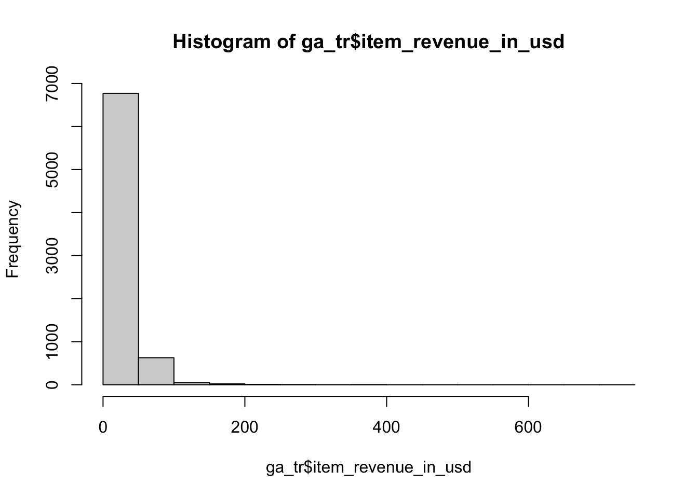
Indeed, this variable is skewed to the right. A log transformation would be appropriate here. Let’s do this by using step_log().
ga_rec <- recipe(~., data = ga_tr) |>
update_role(event_date, new_role = "date_ref") |>
step_log(item_revenue_in_usd) |>
prep()
ga_rec── Recipe ──────────────────────────────────────────────────────────────────────────────────────────── Inputs Number of variables by rolepredictor: 13
date_ref: 1── Training information Training data contained 7492 data points and 216 incomplete rows.── Operations • Log transformation on: item_revenue_in_usd | Trainedbake_ga <- bake(ga_rec, new_data = NULL)Now that we transformed the variable, let’s explore the histogram of our baked variable and see its effect on the distribution.
hist(bake_ga$item_revenue_in_usd)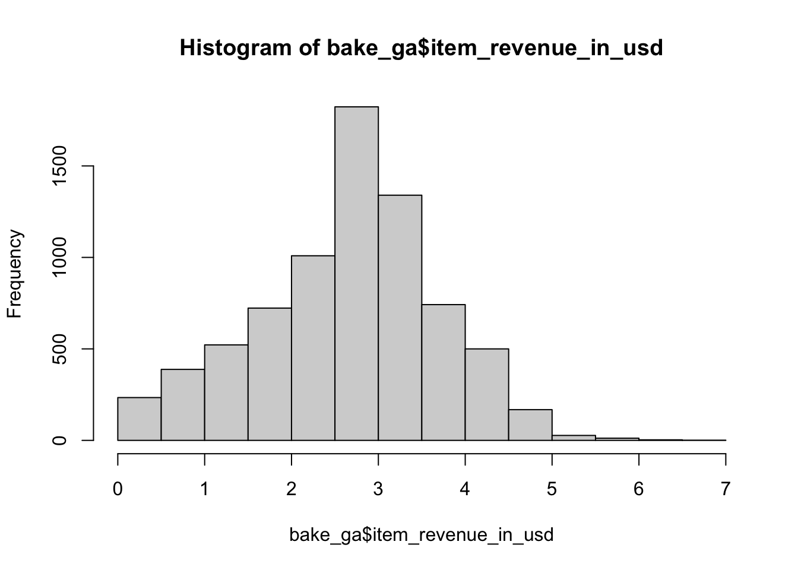
Not bad. The transformed item_revenue_in_usd now exhibits a more normal distribution.
step_log() also has a few useful arguments. The first useful argument is base. When taking the log, R defaults to using the natural log, or exp(1). Say we want to log using base 10? This is certainly useful when dealing with money, since money makes more since in multiples of 10 (e.g., $100, $1,000, $10,000, etc.). Lets change the base of our recipe and see what happens.
ga_rec <- recipe(~., data = ga_tr) |>
update_role(event_date, new_role = "date_ref") |>
step_log(item_revenue_in_usd, base = 10) |>
prep()
ga_rec── Recipe ──────────────────────────────────────────────────────────────────────────────────────────── Inputs Number of variables by rolepredictor: 13
date_ref: 1── Training information Training data contained 7492 data points and 216 incomplete rows.── Operations • Log transformation on: item_revenue_in_usd | Trainedbake_ga <- bake(ga_rec, new_data = NULL)hist(bake_ga$item_revenue_in_usd)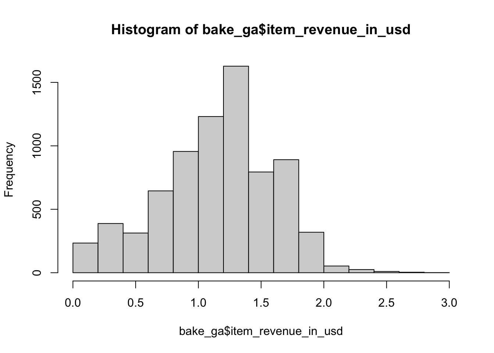
The second useful argument is the offset argument. This argument accepts a value to offset the data prior to logging, which helps us avoid log(0). Here’s some example code:
ga_rec <- recipe(~., data = ga_tr) |>
update_role(event_date, new_role = "date_ref") |>
step_log(item_revenue_in_usd, offset = 5) |>
prep()
ga_rec── Recipe ──────────────────────────────────────────────────────────────────────────────────────────── Inputs Number of variables by rolepredictor: 13
date_ref: 1── Training information Training data contained 7492 data points and 216 incomplete rows.── Operations • Log transformation on: item_revenue_in_usd | Trainedbake_ga <- bake(ga_rec, new_data = NULL)hist(bake_ga$item_revenue_in_usd)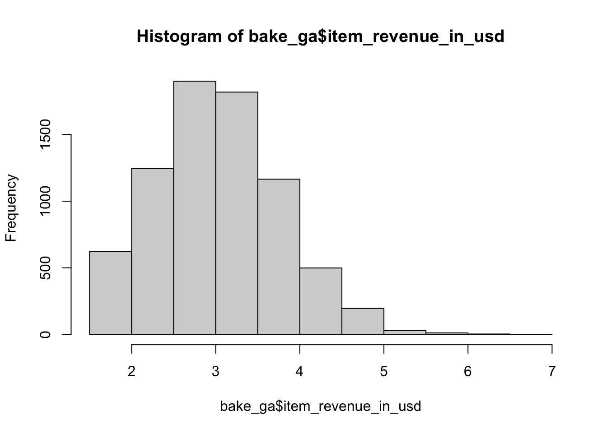
The final useful argument is signed, which accepts a boolean. Setting this argument to TRUE will make step_log() calculate the signed log. This is useful in cases where you have negative values, since a standard log transformation can’t be used to transform negative values. I found this article useful for getting an intuitive sense of what the signed log is and how it can useful for modeling. Here’s the code to serve as an example, even though we don’t have any negative values in our data:
ga_rec <- recipe(~., data = ga_tr) |>
update_role(event_date, new_role = "date_ref") |>
step_log(item_revenue_in_usd, signed = TRUE) |>
prep()
ga_rec── Recipe ──────────────────────────────────────────────────────────────────────────────────────────── Inputs Number of variables by rolepredictor: 13
date_ref: 1── Training information Training data contained 7492 data points and 216 incomplete rows.── Operations • Signed log transformation on: item_revenue_in_usd | Trainedbake_ga <- bake(ga_rec, new_data = NULL)hist(bake_ga$item_revenue_in_usd)
That’s it for today. step_log() is a great first step in learning all the transformations recipes can do. I’m looking forward to tomorrow.
Day 20 - Use step_sqrt() to apply a square root transformation
Welcome back fellow learners. I had to take a couple days off because my schedule didn’t allow me the time to focus on this post. Nevertheless, let’s get back to it.
Today I’m focusing on another transformation function, step_sqrt(). step_sqrt() applies a square root transformation to variables. This function is similair to step_log()–it’s just applying a different function to the variable.
The square root transformation is pretty straightforward, but I did some digging to more deeply understand what it is and why it’s useful. Here’s what I came up with:
What could be the reason for using square root transformation on data? - Cross Validated post
Why is the square root transformation recommended for count data? - Cross Validated post
Let’s get our data. I’m going to continue using the obfuscated Google Analytics ecommerce data we’ve been working with.
data_ga <- read_csv(
here("blog/posts/2024-01-01-30-days-challenge-tidymodels-recipes/data_google_merch.csv")
)Rows: 9365 Columns: 14
── Column specification ────────────────────────────────────────────────────────────────────────────
Delimiter: ","
chr (8): item_name, item_category, shipping_tier, payment_type, category, country, region, city
dbl (6): event_date, purchase_revenue_in_usd, transaction_id, price_in_usd, quantity, item_reven...
ℹ Use `spec()` to retrieve the full column specification for this data.
ℹ Specify the column types or set `show_col_types = FALSE` to quiet this message.set.seed(20240122)
ga_split <- initial_split(data_ga, prop = .8)
ga_tr <- training(ga_split)
ga_te <- testing(ga_split)
skim(ga_tr)| Name | ga_tr |
| Number of rows | 7492 |
| Number of columns | 14 |
| _______________________ | |
| Column type frequency: | |
| character | 8 |
| numeric | 6 |
| ________________________ | |
| Group variables | None |
Variable type: character
| skim_variable | n_missing | complete_rate | min | max | empty | n_unique | whitespace |
|---|---|---|---|---|---|---|---|
| item_name | 0 | 1.00 | 8 | 41 | 0 | 382 | 0 |
| item_category | 138 | 0.98 | 3 | 23 | 0 | 20 | 0 |
| shipping_tier | 84 | 0.99 | 10 | 22 | 0 | 13 | 0 |
| payment_type | 0 | 1.00 | 20 | 20 | 0 | 1 | 0 |
| category | 0 | 1.00 | 6 | 7 | 0 | 3 | 0 |
| country | 0 | 1.00 | 4 | 20 | 0 | 93 | 0 |
| region | 0 | 1.00 | 4 | 52 | 0 | 282 | 0 |
| city | 0 | 1.00 | 4 | 24 | 0 | 419 | 0 |
Variable type: numeric
| skim_variable | n_missing | complete_rate | mean | sd | p0 | p25 | p50 | p75 | p100 | hist |
|---|---|---|---|---|---|---|---|---|---|---|
| event_date | 0 | 1 | 20203682.14 | 3986.72 | 20201201 | 20201209 | 20201216 | 20210106.0 | 20210130 | ▇▁▁▁▃ |
| purchase_revenue_in_usd | 0 | 1 | 101.68 | 118.25 | 3 | 39 | 72 | 124.0 | 1530 | ▇▁▁▁▁ |
| transaction_id | 0 | 1 | 487567.11 | 282529.44 | 546 | 250363 | 477087 | 723799.8 | 999850 | ▇▇▇▇▇ |
| price_in_usd | 0 | 1 | 19.55 | 18.80 | 1 | 7 | 14 | 24.0 | 120 | ▇▂▁▁▁ |
| quantity | 0 | 1 | 1.45 | 2.89 | 1 | 1 | 1 | 1.0 | 160 | ▇▁▁▁▁ |
| item_revenue_in_usd | 0 | 1 | 23.40 | 29.67 | 1 | 8 | 15 | 30.0 | 704 | ▇▁▁▁▁ |
We do have some count data, quantity. This is the number of times a specific item was purchased. Let’s take a look at its distribution before we apply our transformation.
hist(ga_tr$quantity)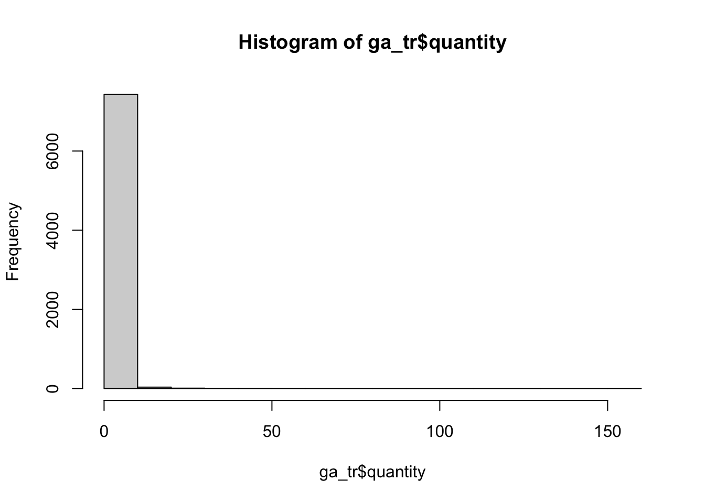
Indeed, this data seems to follow a Poisson Distribution. Let’s see if we can transform it to be more normal (Gaussian) with a square root transformation.
ga_rec <- recipe(~., data = ga_tr) |>
step_sqrt(quantity) |>
prep()
ga_rec── Recipe ──────────────────────────────────────────────────────────────────────────────────────────── Inputs Number of variables by rolepredictor: 14── Training information Training data contained 7492 data points and 221 incomplete rows.── Operations • Square root transformation on: quantity | Trainedbaked_ga <- bake(ga_rec, new_data = NULL)
baked_ga# A tibble: 7,492 × 14
event_date purchase_revenue_in_usd transaction_id item_name item_category price_in_usd quantity
<dbl> <dbl> <dbl> <fct> <fct> <dbl> <dbl>
1 20201211 60 411613 Supernatur… Bags 46 1
2 20210126 68 315802 Google Sea… Campus Colle… 7 1
3 20201217 75 940161 Google Inc… Bags 75 1
4 20210114 83 22807 Google Pen… Office 1 1.41
5 20201215 95 892183 Google Fel… Clearance 16 1.41
6 20210102 183 548270 Google Wom… Apparel 50 1
7 20201217 16 199350 Google Per… Lifestyle 16 1
8 20201228 44 302288 Google Lap… New 8 1
9 20210124 104 19596 Google Key… New 6 1.41
10 20201212 74 539684 Google Bou… Clearance 14 1
# ℹ 7,482 more rows
# ℹ 7 more variables: item_revenue_in_usd <dbl>, shipping_tier <fct>, payment_type <fct>,
# category <fct>, country <fct>, region <fct>, city <fct>Now we’ll check out the effect of the transformation by looking at a histogram of the baked data’s quantity variable.
hist(baked_ga$quantity)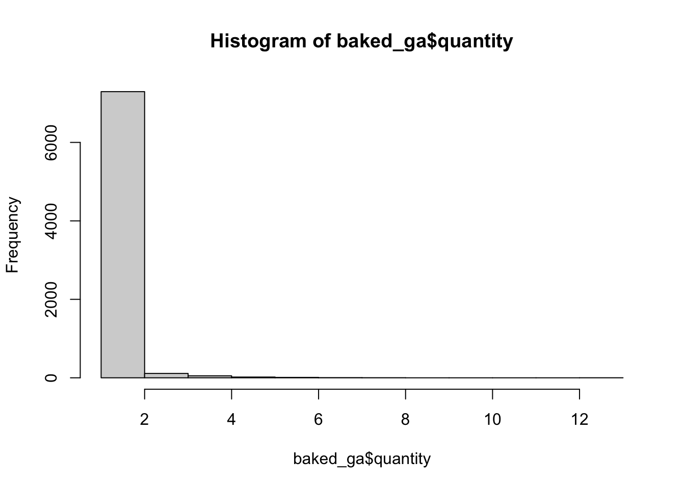
We can further explore the effect of this transformation by plotting the un-transformed variable on a scatter plot with the baked variable.
plot(ga_tr$quantity, baked_ga$quantity)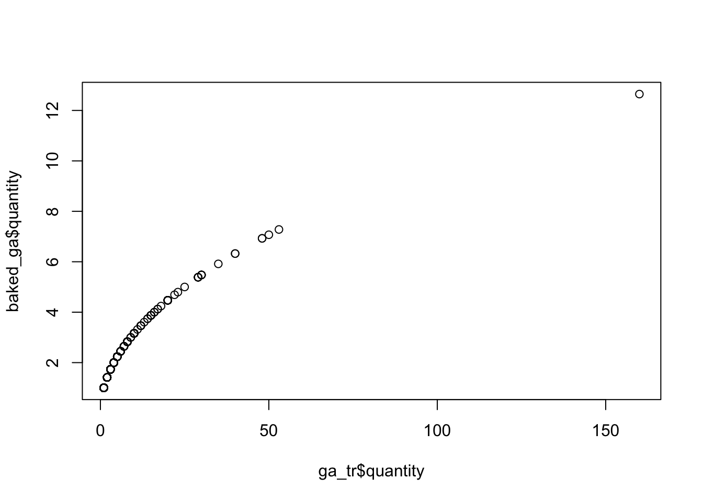
Eh, looking at the histogram it seems this transformation didn’t really help very much. My assumption is this is due to many items only being purchased once. Thus, no transformation would likely be helpful in this case. Nonetheless, step_sqrt() is a pretty simple transformation function. You might find it useful when working with your data.
Day 21 - Apply the Box-Cox transformation using step_BoxCox()
Here we are, another day of transformations. To get us started, I turned to ChatGPT for a joke about data transformations.
Hey ChatGPT, tell me a joke about data transformations (prompt).
Why do data transformations never get invited to parties?
Because they always skew the conversation and standard deviations can be quite awkward!
Not bad … Okay, let’s talk about step_BoxCox(). This function applies a Box Cox Transformation to our variables. I haven’t used this transformation in some time, so I scoured the internet to get back up to speed. I found these sources helpful in reminding me what this transformation is and how it can be useful:
- Transforming the response(Y) in regression: Box Cox transformation (7 mins) from the @PhilChanstats YouTube channel
- Box Cox transformation formula in regression analysis from the @PhilChanstats YouTube channel
- Box-Cox Transformation + R Demo from the @mathetal YouTube channel
Though the following is a simplified explanation, many of these sources mention the Box Cox transformation attempts to make our distribution more normal. It does this by focusing on the tails of the distribution. Box Cox can be applied in situations where variance is not equal (i.e., heteroscedasticity). This transformation also allows us to better meet the assumptions of our models, and its application can result in a better predictive model. Lastly, many of these sources suggest this transformation is applied to the outcome variable of our model.
Let’s go back to our Google Analytics obfuscated ecommerce data for today’s examples.
data_ga <- read_csv(
here("blog/posts/2024-01-01-30-days-challenge-tidymodels-recipes/data_google_merch.csv")
)Rows: 9365 Columns: 14
── Column specification ────────────────────────────────────────────────────────────────────────────
Delimiter: ","
chr (8): item_name, item_category, shipping_tier, payment_type, category, country, region, city
dbl (6): event_date, purchase_revenue_in_usd, transaction_id, price_in_usd, quantity, item_reven...
ℹ Use `spec()` to retrieve the full column specification for this data.
ℹ Specify the column types or set `show_col_types = FALSE` to quiet this message.data_ga <- data_ga |>
group_by(event_date) |>
summarise(
items_purchased = sum(quantity),
revenue = sum(item_revenue_in_usd)
)
set.seed(20240122)
ga_split <- initial_split(data_ga, prop = .8)
ga_tr <- training(ga_split)
ga_te <- testing(ga_split)Since we can use the Box Cox transformation to rescale a variable to be more normal, let’s see if the revenue variable will be a good candidate. You’ll notice the application of the Box Cox transformation is pretty straightforward (like most of recipes’ transformation functions) with step_BoxCox().
hist(ga_tr$revenue)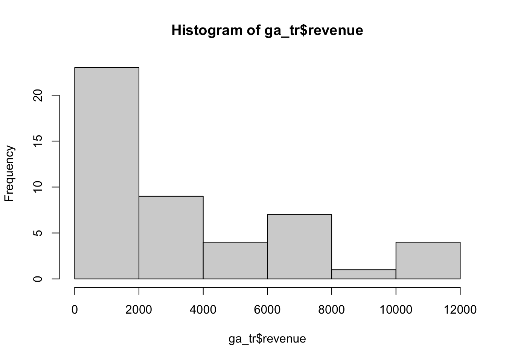
Indeed, this varible exhibits a slight right skew. Let’s use the step_BoxCox() function here to perform the transformation.
ga_rec <- recipe(revenue ~ ., data = ga_tr) |>
step_BoxCox(revenue) |>
prep()
ga_rec── Recipe ──────────────────────────────────────────────────────────────────────────────────────────── Inputs Number of variables by roleoutcome: 1
predictor: 2── Training information Training data contained 48 data points and no incomplete rows.── Operations • Box-Cox transformation on: revenue | Trainedbaked_ga <- bake(ga_rec, new_data = NULL)
baked_ga# A tibble: 48 × 3
event_date items_purchased revenue
<dbl> <dbl> <dbl>
1 20210101 97 14.2
2 20210126 61 15.2
3 20201225 40 12.2
4 20210125 199 19.4
5 20201211 617 25.3
6 20210115 119 17.2
7 20210120 400 22.8
8 20201201 356 22.5
9 20201205 333 22.6
10 20201224 69 15.0
# ℹ 38 more rowsNot too bad. The distribution has been rescaled to resemble a slightly more normal distribution. The following histogram shows the effect of this transformation on the distribution.
hist(baked_ga$revenue)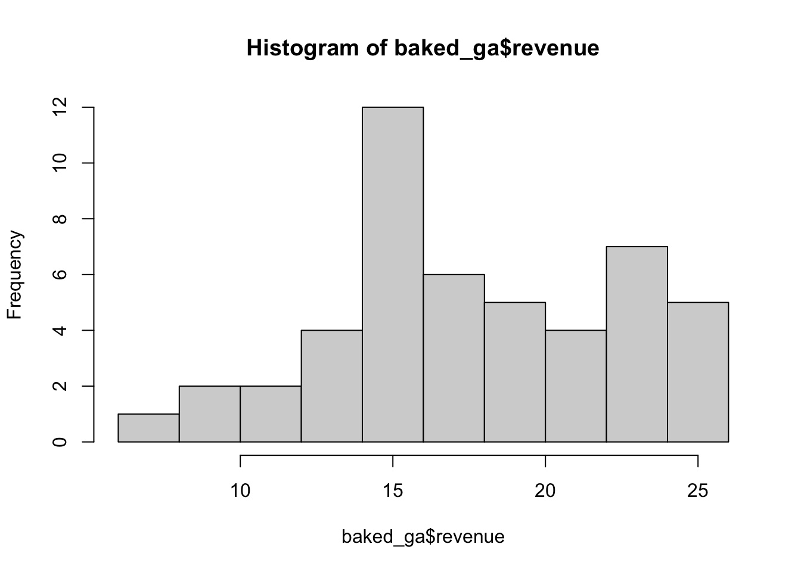
If for some reason you wanted to inspect the lambda value used by the transformation, you can inspect it by tidying the recipe. The outputted table shows lambda in the value column.
tidy(ga_rec, number = 1)# A tibble: 1 × 3
terms value id
<chr> <dbl> <chr>
1 revenue 0.190 BoxCox_GMKqIstep_BoxCox() is pretty simple, but useful. You might give it a try if you have some data of positive values exihibiting skewness. Until tomorrow, keep having fun with recipes.
Day 22 - Apply an inverse transformation using step_inverse()
I’m keeping things simple today; step_inverse() is my focus. This step function will inverse transform our data. Just like the other transformation functions, recipes makes it pretty easy to perform.
Let’s continue using our Google Analytics ecommerce data for today’s example.
data_ga <- read_csv(
here("blog/posts/2024-01-01-30-days-challenge-tidymodels-recipes/data_google_merch.csv")
)Rows: 9365 Columns: 14
── Column specification ────────────────────────────────────────────────────────────────────────────
Delimiter: ","
chr (8): item_name, item_category, shipping_tier, payment_type, category, country, region, city
dbl (6): event_date, purchase_revenue_in_usd, transaction_id, price_in_usd, quantity, item_reven...
ℹ Use `spec()` to retrieve the full column specification for this data.
ℹ Specify the column types or set `show_col_types = FALSE` to quiet this message.data_ga <- data_ga |>
group_by(event_date) |>
summarise(
items_purchased = sum(quantity),
revenue = sum(item_revenue_in_usd)
)
set.seed(20240122)
ga_split <- initial_split(data_ga, prop = .8)
ga_tr <- training(ga_split)
ga_te <- testing(ga_split)Just as a quick reminder, let’s take a look at the histogram of items_purchased.
hist(ga_tr$items_purchased)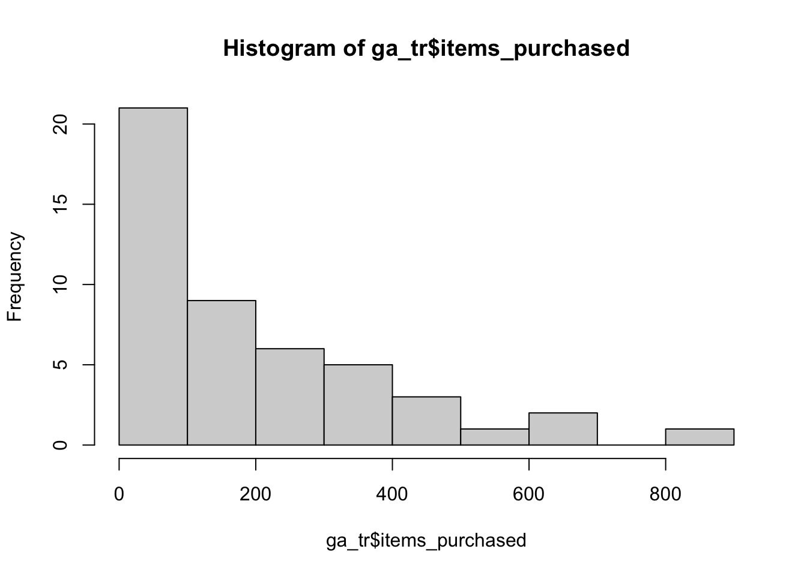
To apply an inverse transformation to our variable, we do the following in our recipe.
ga_rec <- recipe(~., data = ga_te) |>
step_inverse(items_purchased) |>
prep()
ga_rec── Recipe ──────────────────────────────────────────────────────────────────────────────────────────── Inputs Number of variables by rolepredictor: 3── Training information Training data contained 13 data points and no incomplete rows.── Operations • Inverse transformation on: items_purchased | TrainedNow bake.
ga_baked <- bake(ga_rec, new_data = NULL)
ga_baked# A tibble: 13 × 3
event_date items_purchased revenue
<dbl> <dbl> <dbl>
1 20201202 0.00366 5202
2 20201203 0.00319 4313
3 20201207 0.00215 8466
4 20201208 0.00161 8691
5 20201214 0.00190 8498
6 20201219 0.00714 2778
7 20201222 0.00474 3226
8 20201230 0.00315 1606
9 20201231 0.0106 2595
10 20210102 0.00990 1025
11 20210113 0.00990 1859
12 20210116 0.0139 1462
13 20210123 0.00524 2744Here’s the effect of the transformation on our variable in two plots.
hist(ga_baked$items_purchased)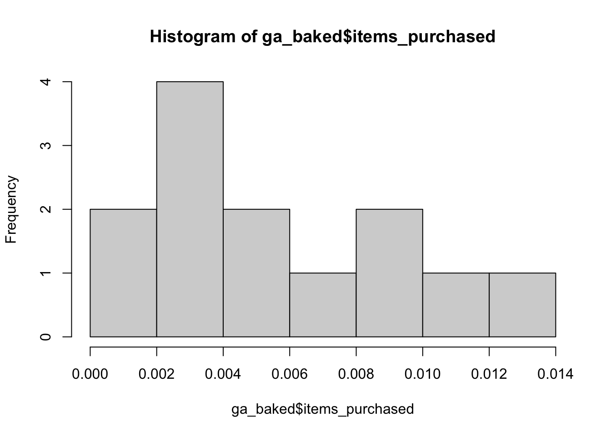
plot(ga_te$items_purchased, ga_baked$items_purchased)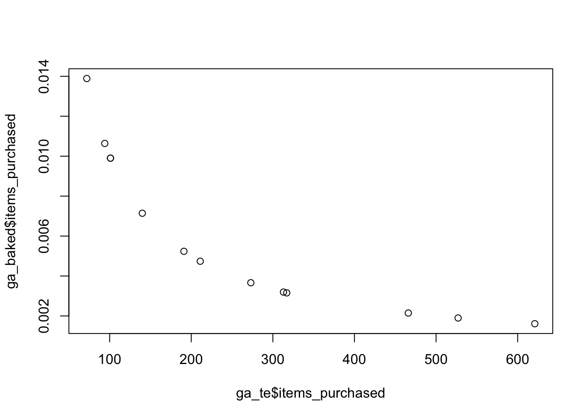
The inverse did a pretty good job of making this distribution more normal.
Like I said, keeping things simple today with a straight forward step_*() function. recipes makes it pretty easy to perform the inverse transformation with the step_inverse() function.
Day 23 - Use extension packages to get even more steps
Recently, I’ve felt these posts have become a little stale and templated. So today, I’m switching it up a bit. I’m highlighting recipes extension packages. I’m also using this post for a bit of inspiration; I’m exploring other step_* functions to highlight. As such, I most likely won’t describe specific examples from each package in today’s post (there’s too many to cover). However, I’m aiming to list them here and highlight some packages that would be useful for the work I do.
Several packages are available that provide additional step_*() functions, which are outside the core functionality of the recipes package. At the time of this writing, these include but are not limited to:
actxpsbestNormalizecustomstepsembedextrastepstfhubhealthcareaihealthyR.aihealthyR.tshydrorecipesMachineShopmeasurenestedmodelssparseRtextrecipesthemistimetk
The tidymodels site provides a table of a good majority of step_*() functions made available via these extension packages. Shout out to @jonthegeek from the R4DS Online Learning Community for pointing me to this table, and much praise to @Emil Hvitfeldt for pointing me in the direction of additional recipes extension packages I wasn’t aware. Keep in mind, not all of these extension packages are made available on CRAN.
Taking a moment to read the descriptions of each extension package, I found textrecipes, themis, and timetk to be the most applicable to my work. Here’s a brief description of what each does. I also included some functions that could be interesting to explore in future posts. Note, some of these packages are meant to be applied in a specific domain, so their purpose may not solely be to be an extension of recipes (e.g., timetk).
The
textrecipespackage provides extrastep_*()functions to preprocess text data. Looking through the package’sreferencesection, thestep_tokenize()family of functions look useful. I also find the token modification (e.g.,step_stem()andstep_stopwords()) and text cleaning functions (e.g.step_clean_levels()) to be intriguing and worth further exploration.The
themispackage provides additionalstep_*()functions to assist in the preprocessing of unbalanced data. Specifically, this package provides functions to apply over-sampling or under-sampling methods to unbalance the data used for modeling. There’s several functions in here that seem to be useful when dealing with unbalanced data. I highly suggest checking out its reference page to get an idea of what all is available.The
timetkpackage does more than extendrecipes. It’s main focus is to assist in the analysis of timeseries data. The package contains some similar functions we’ve highlighted before (e.g.,step_holiday_signature()andstep_box_cox()). However, there’s some additional functions of interest.step_ts_pad()seems useful in cases where you need to add rows to fill in gaps.step_ts_clean()helps to clean outliers and missing data for timeseries analysis.step_diff()also looks helpful if you need to create a differenced predictor. If you’re working with timeseries, you might want to explore this package some more.
Indeed, the tidymodels ecosystem is quite vast. This is especially true in the area of preprocessing steps achieved by extension packages for the recipes package.
I wanted to shake it up a little bit. Today’s post was a little different, but in a good, refreshing way. See you tomorrow.
Day 24 - Use step_tokenize() from textrecipes to convert a character predictor into a token variable
Building on yesterday’s post, I’ll begin exploring recipes extension packages’ functions. step_tokenize() from textrecipes is first up. This function is useful when we need to convert a character variable into a token variable. If you’re unfamiliar with the concept of tokenization, the Text Mining with R: A Tidy Approach provides an overview.
I’ll keep things simple here by using a pared down data set. This will make it easier to see what this step_function() is doing. How about some quotes about statistics?
quotes <- tibble(
text = c(
"All models are wrong, but some are useful.",
"Statisticians, like artists, have the bad habit of falling in love with their models.",
"If you torture the data enough, nature will always confess.",
"All generalizations are false, including this one."
)
)Let’s create our recipe to tokenize by word.
quotes_rec <- recipe(~ text, data = quotes) |>
step_tokenize(text) |>
prep()
quotes_rec── Recipe ──────────────────────────────────────────────────────────────────────────────────────────── Inputs Number of variables by rolepredictor: 1── Training information Training data contained 4 data points and no incomplete rows.── Operations • Tokenization for: text | Trainedbaked_quotes <- bake(quotes_rec, new_data = NULL)
baked_quotes# A tibble: 4 × 1
text
<tknlist>
1 [8 tokens]
2 [14 tokens]
3 [10 tokens]
4 [7 tokens]One thing I didn’t expect, but learned, was step_tokenize() creates a tknlist column. Indeed, I expected the column to still be a character where every token was placed on it’s own row, like what happens when you use tidytext functions. This certainly makes the object more compact and easier to work with, an excellent design decision in my opinion. To see the tokens, though, we need to use recipes show_tokens() function.
recipe(~ text, data = quotes) |>
step_tokenize(text) |>
show_tokens(text)[[1]]
[1] "all" "models" "are" "wrong" "but" "some" "are" "useful"
[[2]]
[1] "statisticians" "like" "artists" "have" "the" "bad"
[7] "habit" "of" "falling" "in" "love" "with"
[13] "their" "models"
[[3]]
[1] "if" "you" "torture" "the" "data" "enough" "nature" "will" "always"
[10] "confess"
[[4]]
[1] "all" "generalizations" "are" "false" "including"
[6] "this" "one" step_tokenize() defaults to tokenizing by word. However, there are several ways we can tokenize by. To do this, we modify the tokenizers argument. For example, say we want to tokenize by character instead of word. We do the following:
recipe(~ text, data = quotes) |>
step_tokenize(text, token = "characters") |>
show_tokens(text)[[1]]
[1] "a" "l" "l" "m" "o" "d" "e" "l" "s" "a" "r" "e" "w" "r" "o" "n" "g" "b" "u" "t" "s" "o" "m" "e"
[25] "a" "r" "e" "u" "s" "e" "f" "u" "l"
[[2]]
[1] "s" "t" "a" "t" "i" "s" "t" "i" "c" "i" "a" "n" "s" "l" "i" "k" "e" "a" "r" "t" "i" "s" "t" "s"
[25] "h" "a" "v" "e" "t" "h" "e" "b" "a" "d" "h" "a" "b" "i" "t" "o" "f" "f" "a" "l" "l" "i" "n" "g"
[49] "i" "n" "l" "o" "v" "e" "w" "i" "t" "h" "t" "h" "e" "i" "r" "m" "o" "d" "e" "l" "s"
[[3]]
[1] "i" "f" "y" "o" "u" "t" "o" "r" "t" "u" "r" "e" "t" "h" "e" "d" "a" "t" "a" "e" "n" "o" "u" "g"
[25] "h" "n" "a" "t" "u" "r" "e" "w" "i" "l" "l" "a" "l" "w" "a" "y" "s" "c" "o" "n" "f" "e" "s" "s"
[[4]]
[1] "a" "l" "l" "g" "e" "n" "e" "r" "a" "l" "i" "z" "a" "t" "i" "o" "n" "s" "a" "r" "e" "f" "a" "l"
[25] "s" "e" "i" "n" "c" "l" "u" "d" "i" "n" "g" "t" "h" "i" "s" "o" "n" "e"How about by word stems?
recipe(~ text, data = quotes) |>
step_tokenize(text, token = "word_stems") |>
show_tokens(text)[[1]]
[1] "all" "model" "are" "wrong" "but" "some" "are" "use"
[[2]]
[1] "statistician" "like" "artist" "have" "the" "bad"
[7] "habit" "of" "fall" "in" "love" "with"
[13] "their" "model"
[[3]]
[1] "if" "you" "tortur" "the" "data" "enough" "natur" "will" "alway"
[10] "confess"
[[4]]
[1] "all" "general" "are" "fals" "includ" "this" "one" ngrams?
recipe(~ text, data = quotes) |>
step_tokenize(text, token = "ngrams") |>
show_tokens(text)[[1]]
[1] "all models are" "models are wrong" "are wrong but" "wrong but some" "but some are"
[6] "some are useful"
[[2]]
[1] "statisticians like artists" "like artists have" "artists have the"
[4] "have the bad" "the bad habit" "bad habit of"
[7] "habit of falling" "of falling in" "falling in love"
[10] "in love with" "love with their" "with their models"
[[3]]
[1] "if you torture" "you torture the" "torture the data" "the data enough"
[5] "data enough nature" "enough nature will" "nature will always" "will always confess"
[[4]]
[1] "all generalizations are" "generalizations are false" "are false including"
[4] "false including this" "including this one" Say we only want 2 words in our ngram tokens. In this case, we need to pass argument values to the tokenizers::tokenize_ngrams() function using step_tokenize()’s options argument. Here we pass all the argument values in a list.
recipe(~ text, data = quotes) |>
step_tokenize(
text,
token = "ngrams",
options = list(n = 2)
) |>
show_tokens(text)[[1]]
[1] "all models" "models are" "are wrong" "wrong but" "but some" "some are" "are useful"
[[2]]
[1] "statisticians like" "like artists" "artists have" "have the"
[5] "the bad" "bad habit" "habit of" "of falling"
[9] "falling in" "in love" "love with" "with their"
[13] "their models"
[[3]]
[1] "if you" "you torture" "torture the" "the data" "data enough"
[6] "enough nature" "nature will" "will always" "always confess"
[[4]]
[1] "all generalizations" "generalizations are" "are false" "false including"
[5] "including this" "this one" Going further, say we want to also exclude stop words (e.g., the, is, and) from being included within our ngrams. We just pass this option along in our list of options.
recipe(~ text, data = quotes) |>
step_tokenize(
text,
token = "ngrams",
options = list(n = 2, stopwords = c("the", "is", "and"))
) |>
show_tokens(text)[[1]]
[1] "all models" "models are" "are wrong" "wrong but" "but some" "some are" "are useful"
[[2]]
[1] "statisticians like" "like artists" "artists have" "have bad"
[5] "bad habit" "habit of" "of falling" "falling in"
[9] "in love" "love with" "with their" "their models"
[[3]]
[1] "if you" "you torture" "torture data" "data enough" "enough nature"
[6] "nature will" "will always" "always confess"
[[4]]
[1] "all generalizations" "generalizations are" "are false" "false including"
[5] "including this" "this one" That’s all the time I have for today. There’s some other things step_tokenize() can do. I highly suggest checking out it’s documentation to see all of its functionality.
Day 25 - Use step_clean_level() to clean categorical levels
Keeping our focus on textrecipes, I’m going to highlight the use of step_clean_levels(). This function is useful for cleaning up the text used within character or factor variables. Specifically, this function will clean text values in our variable to only include:
- letters
- numbers
- underscores
Let’s apply this text cleaning recipe step to the item_name variable in our obfuscated Google Analytics data. In fact, to make it easier to see what’s happening, I’ll select() just the item_name within our example data set. I’ll also go ahead and just create our training and testing split here as well.
data_ga <- read_csv(
here("blog/posts/2024-01-01-30-days-challenge-tidymodels-recipes/data_google_merch.csv")
) |>
select(item_name)Rows: 9365 Columns: 14
── Column specification ────────────────────────────────────────────────────────────────────────────
Delimiter: ","
chr (8): item_name, item_category, shipping_tier, payment_type, category, country, region, city
dbl (6): event_date, purchase_revenue_in_usd, transaction_id, price_in_usd, quantity, item_reven...
ℹ Use `spec()` to retrieve the full column specification for this data.
ℹ Specify the column types or set `show_col_types = FALSE` to quiet this message.set.seed(20240127)
ga_split <- initial_split(data_ga, prop = .8)
ga_tr <- training(ga_split)
ga_te <- testing(ga_split)If you scan through the items, you’ll begin to notice some of the text could be cleaned. For example, the data contains item names like:
Google Medium Pet Collar (Red/Yellow)#IamRemarkable Unisex T-ShirtAndroid SM S/F18 Sticker Sheet
If you’ve ever worked with ecommerce or website data, these strings are actually not too bad. However, we can use step_clean_levels() to make them easier to compute on.
Here’s our recipe.
ga_rec <- recipe(~., data = ga_te) |>
step_clean_levels(item_name) |>
prep()
ga_rec── Recipe ──────────────────────────────────────────────────────────────────────────────────────────── Inputs Number of variables by rolepredictor: 1── Training information Training data contained 1873 data points and no incomplete rows.── Operations • Cleaning factor levels for: item_name | Trainedstep_clean_levels()’ tidy method is pretty informative. It provides one column with the original value and a second column with the cleaned value. Take a look at what it will do to our values once baked.
tidy(ga_rec, number = 1)# A tibble: 332 × 4
terms original value id
<chr> <chr> <chr> <chr>
1 item_name #IamRemarkable Journal number_iam_remarkable_journal clean_levels_JONrr
2 item_name #IamRemarkable Ladies T-Shirt number_iam_remarkable_ladies_t_shirt clean_levels_JONrr
3 item_name #IamRemarkable Lapel Pin number_iam_remarkable_lapel_pin clean_levels_JONrr
4 item_name #IamRemarkable Pen number_iam_remarkable_pen clean_levels_JONrr
5 item_name #IamRemarkable Unisex Hoodie number_iam_remarkable_unisex_hoodie clean_levels_JONrr
6 item_name #IamRemarkable Unisex T-Shirt number_iam_remarkable_unisex_t_shirt clean_levels_JONrr
7 item_name #IamRemarkable Water Bottle number_iam_remarkable_water_bottle clean_levels_JONrr
8 item_name Android Buoy Bottle android_buoy_bottle clean_levels_JONrr
9 item_name Android Garden Tee Orange android_garden_tee_orange clean_levels_JONrr
10 item_name Android Geek Pin android_geek_pin clean_levels_JONrr
# ℹ 322 more rows
Note
It’s interesting to see that the hashtag (i.e., #) was converted to the value number. I couldn’t find any options in step_clean_levels()to modify this, so you may need to first do some pre-cleaning before applying this function.
Now, we bake.
Note
step_clean_levels() will convert character vectors to factors for us.
bake(ga_rec, new_data = NULL)# A tibble: 1,873 × 1
item_name
<fct>
1 google_thermal_tumbler_navy
2 noogler_android_figure
3 google_leather_strap_hat_blue
4 you_tube_jotter_task_pad
5 google_nyc_campus_mug
6 google_nyc_campus_zip_hoodie
7 number_iam_remarkable_ladies_t_shirt
8 number_iam_remarkable_lapel_pin
9 google_leather_strap_hat_blue
10 google_f_c_longsleeve_ash
# ℹ 1,863 more rowsAll in all, a pretty useful step function from textrecipes. Take some time to apply the step_clean_levels() to your data. It might save you a great deal of time if you’re working with some messy text data.
Day 26 - Use over-sampling and under-sampling methods with the themis package
Today I’m going to highlight some basic uses of the themis package. themis makes over- and under-sampling methods available. These methods are useful to address imbalanced class data. You can read more about these methods here and here. In short, these methods allow us to extract more accurate information from imbalanced data.
To highlight this, let’s use our obfuscated Google Analytics ecommerce data. Specifically, let’s check out our shipping_tier variable for each transaction. Here’s the code we’ll need to wrangle the data for our example:
data_ga <- read_csv(
here("blog/posts/2024-01-01-30-days-challenge-tidymodels-recipes/data_google_merch.csv")
)Rows: 9365 Columns: 14
── Column specification ────────────────────────────────────────────────────────────────────────────
Delimiter: ","
chr (8): item_name, item_category, shipping_tier, payment_type, category, country, region, city
dbl (6): event_date, purchase_revenue_in_usd, transaction_id, price_in_usd, quantity, item_reven...
ℹ Use `spec()` to retrieve the full column specification for this data.
ℹ Specify the column types or set `show_col_types = FALSE` to quiet this message.data_ga <- data_ga |>
group_by(transaction_id) |>
summarise(
revenue = sum(item_revenue_in_usd),
shipping_tier = max(shipping_tier)
) |>
mutate(shipping_tier = factor(shipping_tier))set.seed(20240128)
ga_split <- initial_split(data_ga, prop = 0.8)
ga_tr <- training(ga_split)
ga_te <- testing(ga_split)Let’s take a moment to check for the presence of imbalanced data. We can do this with a simple count() and a quick bar chart using ggplot2.
ga_tr |>
count(shipping_tier, sort = TRUE)# A tibble: 14 × 2
shipping_tier n
<fct> <int>
1 FedEx Ground 2048
2 UPS Ground 270
3 FedEx 2Day 125
4 International Shipping 34
5 FedEx Overnight 25
6 <NA> 25
7 FedEx Ground-T 12
8 FedEx Ground-V 7
9 UPS 2nd Day Air 5
10 UPS 3 Day Select 5
11 FedEx Ground-GI 2
12 FedEx 2Day-V 1
13 UPS 2nd Day Air-F-V 1
14 UPS Next Day Air 1ggplot(
count(ga_tr, shipping_tier, sort = TRUE),
aes(reorder(shipping_tier, n), y = n)
) +
geom_col() +
coord_flip() +
labs(y = "Shipping Tier") +
theme_minimal()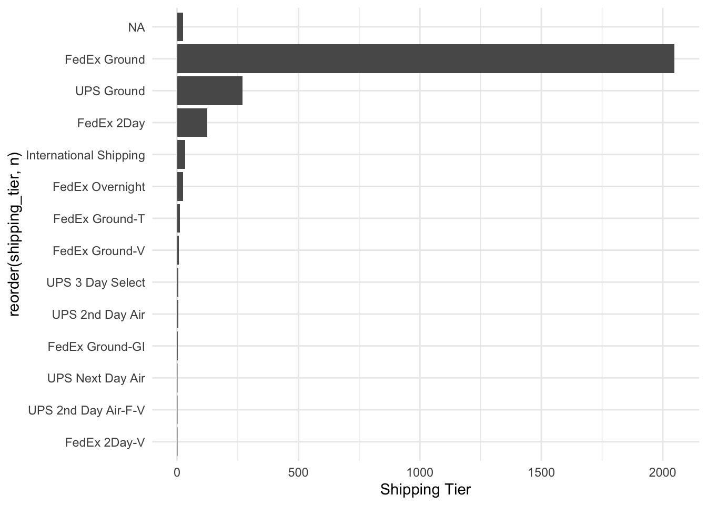
You’ll notice the presence of a severe imbalance in the shipping_tier variable, as most transactions selected FedEx ground as the shipping tier (most likely the cheapest and default shipping tier). We can use step_upsample() and step_downsample() to create synthetic samples to address this imbalance with our recipe.
When over- or under-sampling, we need to select an over_ratio or under_raio. These values specify the ratio of the majority-to-minority or minority-to-majority frequencies, which are used to determine how many of the minority samples are added or how many of the majority class are removed.
For instance, if we are upsampling, we can set the over_ratio to 1. This will synthetically add points to the minority class so the minority and majority classes are equal.
Note
I’m omitting NAs here with step_naomit(), just to make things easier.
ga_rec <- recipe(~., data = data_ga) |>
step_naomit(shipping_tier) |>
step_upsample(shipping_tier, over_ratio = 1) |>
prep()
ga_rec── Recipe ──────────────────────────────────────────────────────────────────────────────────────────── Inputs Number of variables by rolepredictor: 3── Training information Training data contained 3202 data points and 27 incomplete rows.── Operations • Removing rows with NA values in: shipping_tier | Trained• Up-sampling based on: shipping_tier | Trainedbaked_ga <- bake(ga_rec, new_data = NULL)
baked_ga# A tibble: 33,436 × 3
transaction_id revenue shipping_tier
<dbl> <dbl> <fct>
1 551345 137 FedEx 2Day
2 548006 71 FedEx 2Day
3 843790 40 FedEx 2Day
4 852510 50 FedEx 2Day
5 318033 48 FedEx 2Day
6 392135 57 FedEx 2Day
7 888228 90 FedEx 2Day
8 396838 671 FedEx 2Day
9 975263 24 FedEx 2Day
10 859104 14 FedEx 2Day
# ℹ 33,426 more rowsggplot(
count(baked_ga, shipping_tier, sort = TRUE),
aes(reorder(shipping_tier, n), y = n)
) +
geom_col() +
coord_flip() +
labs(y = "Shipping Tier") +
theme_minimal()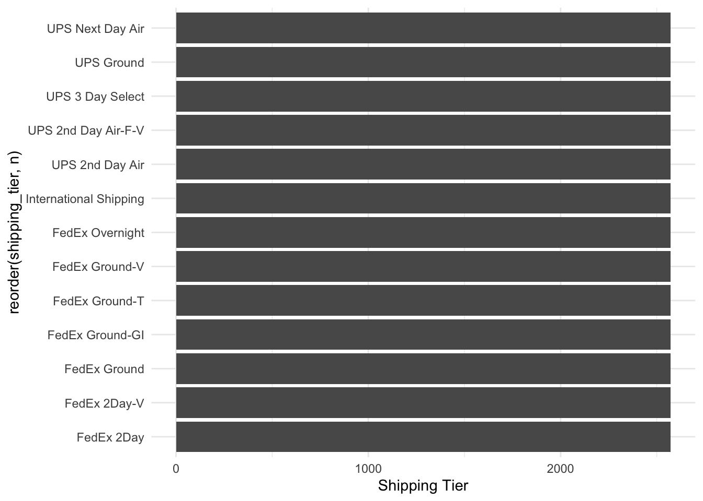
Say we only want the minority levels to have about half the amount of values of the majority class. We can do this by passing .5 to the over_ratio argument.
recipe(~., data = data_ga) |>
step_naomit(shipping_tier) |>
step_upsample(shipping_tier, over_ratio = .5) |>
prep() |>
bake(new_data = NULL) |>
count(shipping_tier, sort = TRUE) |>
ggplot(
aes(reorder(shipping_tier, n), y = n)
) +
geom_col() +
coord_flip() +
labs(y = "Shipping Tier") +
theme_minimal()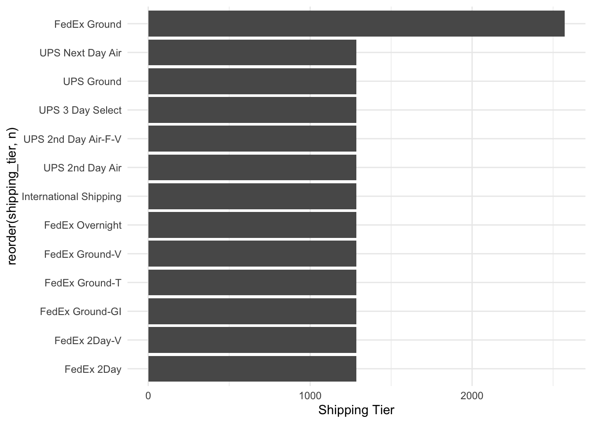
Under-sampling is pretty much the same, but we use step_downsample() and the under_ratio argument. Here’s some example code to get you started.
recipe(~., data = data_ga) |>
step_naomit(shipping_tier) |>
step_downsample(shipping_tier, under_ratio = 100) |>
prep() |>
bake(new_data = NULL) |>
count(shipping_tier, sort = TRUE) |>
ggplot(
aes(reorder(shipping_tier, n), y = n)
) +
geom_col() +
coord_flip() +
labs(y = "Shipping Tier") +
theme_minimal()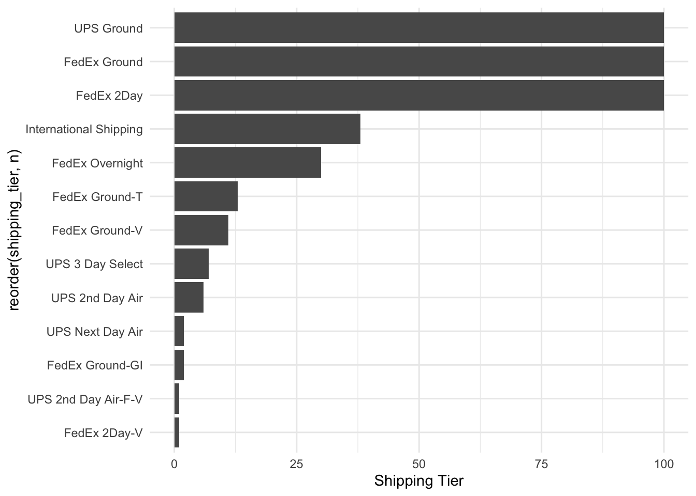
themis makes it pretty easy to utilize over- and under-sampling methods. Indeed, this was just a highlight of some of the package’s basics. themis also has implemented some more advanced methods to address imbalanced data (e.g., SMOTE). If you work with imbalanced data, I suggest checking out the themis package.
Day 27 - Use step_ts_pad() from timetk to pad timeseries data
It’s been a few of days. Work was getting busy, so I didn’t have time to focus on this post as much as I would have liked. So, let’s pick up where we left off, focusing on some step_*() functions from extension packages. Today, I’m focusing on the step_ts_pad() from the timetk package.
timetk is it’s own package. It serves as a toolkit for working with timeseries data, so it’s not just an extension package to recipes. However, it contains some useful step_*() functions when modeling timeseries data. step_ts_pad() is highlighted in today’s post.
step_ts_pad() fills in the gaps of timeseries data with a specified value. Let’s take a look at some example data. Specifically, we’re returning to our obfuscated Google Analytics ecommerce data. To make it more clear what this function is doing, I’ll remove some values.
data_ga <- read_csv(
here("blog/posts/2024-01-01-30-days-challenge-tidymodels-recipes/data_google_merch.csv")
)Rows: 9365 Columns: 14
── Column specification ────────────────────────────────────────────────────────────────────────────
Delimiter: ","
chr (8): item_name, item_category, shipping_tier, payment_type, category, country, region, city
dbl (6): event_date, purchase_revenue_in_usd, transaction_id, price_in_usd, quantity, item_reven...
ℹ Use `spec()` to retrieve the full column specification for this data.
ℹ Specify the column types or set `show_col_types = FALSE` to quiet this message.data_ga <- data_ga |>
mutate(event_date = ymd(event_date)) |>
group_by(event_date) |>
summarise(
revenue = sum(item_revenue_in_usd),
)
# Remove some values to better highlight the example
data_ga <- data_ga[1:61 %% 2 == 0, ]
data_ga# A tibble: 30 × 2
event_date revenue
<date> <dbl>
1 2020-12-02 5202
2 2020-12-04 6454
3 2020-12-06 2328
4 2020-12-08 8691
5 2020-12-10 10760
6 2020-12-12 6280
7 2020-12-14 8498
8 2020-12-16 11505
9 2020-12-18 6617
10 2020-12-20 1401
# ℹ 20 more rowsWe’re working with timeseries data, so the training and testing split is created using rsamples’ initital_time_split() function. This split function performs the same action as initial_split(), however, it takes the first prop samples for training, instead of a random selection (checkout ?initial_time_split for more info).
set.seed(20240202)
ga_split <- initial_time_split(data_ga)
ga_tr <- training(ga_split)
ga_te <- testing(ga_split)We don’t have a complete timeseries here, since this data is aggregated by day and we removed some days in the wrangling step. However, we can use step_ts_pad() to fill in values for missing days. This can be as simple as filling in missing values with NA. Here’s the code to do this:
ga_rec <- recipe(~., data = ga_tr) |>
step_ts_pad(event_date, by = "day", pad_value = NA) |>
prep()
tidy(ga_rec)# A tibble: 1 × 6
number operation type trained skip id
<int> <chr> <chr> <lgl> <lgl> <chr>
1 1 step ts_pad TRUE FALSE ts_padding_KR6BUtidy(ga_rec, number = 1)# A tibble: 1 × 4
terms by pad_value id
<chr> <chr> <lgl> <chr>
1 event_date day NA ts_padding_KR6BUbake(ga_rec, new_data = NULL)# A tibble: 43 × 2
event_date revenue
<date> <dbl>
1 2020-12-02 5202
2 2020-12-03 NA
3 2020-12-04 6454
4 2020-12-05 NA
5 2020-12-06 2328
6 2020-12-07 NA
7 2020-12-08 8691
8 2020-12-09 NA
9 2020-12-10 10760
10 2020-12-11 NA
# ℹ 33 more rowsNow we have a complete series. However, say we want to fill in this padded value with another value, say the mean of revenue from our training data.
ga_rec <- recipe(~., data = data_ga) |>
step_ts_pad(event_date, by = "day", pad_value = mean(ga_tr$revenue)) |>
prep()
tidy(ga_rec)# A tibble: 1 × 6
number operation type trained skip id
<int> <chr> <chr> <lgl> <lgl> <chr>
1 1 step ts_pad TRUE FALSE ts_padding_wvkNbtidy(ga_rec, number = 1)# A tibble: 1 × 4
terms by pad_value id
<chr> <chr> <dbl> <chr>
1 event_date day 3883. ts_padding_wvkNbbake(ga_rec, new_data = NULL)# A tibble: 59 × 2
event_date revenue
<date> <dbl>
1 2020-12-02 5202
2 2020-12-03 3883.
3 2020-12-04 6454
4 2020-12-05 3883.
5 2020-12-06 2328
6 2020-12-07 3883.
7 2020-12-08 8691
8 2020-12-09 3883.
9 2020-12-10 10760
10 2020-12-11 3883.
# ℹ 49 more rowsThe by argument can be used to modify the padding interval. This argument can take values like:
- “auto”
- “year”
- “month”
- “day”
- “hour”
- “7 days”
For example, let’s use the drinks timeseries data from the modeldata package. This data is a monthly timeseries of drink sales from 1992-01-01 to 2017-09-01. You can get more information about this data by running ?drinks in your console. I’m going to remove some rows again to make it more clear on what this function is doing to our data.
data(drinks, package = "modeldata")
# Remove some values to better highlight the example
data_drinks <- drinks[1:nrow(drinks) %% 2 == 0, ]
set.seed(20240202)
drinks_split <- initial_time_split(data_drinks)
drinks_tr <- training(drinks_split)
drinks_te <- testing(drinks_split)To pad by month, all we do is pass “month” to the by argument of the function.
drinks_rec <- recipe(~., data = drinks_tr) |>
step_ts_pad(date, by = "month") |>
prep()
bake(drinks_rec, new_data = NULL)# A tibble: 229 × 2
date S4248SM144NCEN
<date> <dbl>
1 1992-02-01 3458
2 1992-03-01 NA
3 1992-04-01 4564
4 1992-05-01 NA
5 1992-06-01 4529
6 1992-07-01 NA
7 1992-08-01 4137
8 1992-09-01 NA
9 1992-10-01 4259
10 1992-11-01 NA
# ℹ 219 more rowsWe can also pad with an alternative value, just like we did above. We just do the following:
drinks_rec <- recipe(~., data = drinks_tr) |>
step_ts_pad(date, by = "month", pad_value = mean(drinks_tr$S4248SM144NCEN)) |>
prep()
bake(drinks_rec, new_data = NULL)# A tibble: 229 × 2
date S4248SM144NCEN
<date> <dbl>
1 1992-02-01 3458
2 1992-03-01 6628.
3 1992-04-01 4564
4 1992-05-01 6628.
5 1992-06-01 4529
6 1992-07-01 6628.
7 1992-08-01 4137
8 1992-09-01 6628.
9 1992-10-01 4259
10 1992-11-01 6628.
# ℹ 219 more rowstimetk’s step_ts_pad() function is pretty useful. If you need to pad values in a set of timeseries data, then check it out.
Day 28 - Specify an interaction variable using step_interact()
Today, I’m taking a step back. I forgot to cover a very important step_*() function. Interaction terms are an essential component to modeling, and so I need to highlight the use of recipes’ step_interact() function.
recipes’ step_interact() function specifies new columns of interaction terms between two or more variables within our recipe. Let’s apply this step function to some example data. Going back to a previous data set, let’s use credit_data from the modeldata package for our examples. I’ve used this data several times in previous posts, so I just provide the code to wrangle and create the testing and training split without much exploration or explanation.
data("credit_data", package = "modeldata")
# Remove NAs to make it easier to work with data
credit_data <- credit_data |> na.omit()
set.seed(20240203)
credit_split <- initial_split(credit_data, prop = .8)
credit_tr <- training(credit_split)
credit_te <- testing(credit_split)How about we add a simple interaction between Expenses and Income to our recipe. We can do this by doing the following:
credit_rec <- recipe(~., data = credit_tr) |>
step_interact(terms = ~Expenses:Income) |>
prep()
credit_rec── Recipe ──────────────────────────────────────────────────────────────────────────────────────────── Inputs Number of variables by rolepredictor: 14── Training information Training data contained 3231 data points and no incomplete rows.── Operations • Interactions with: Expenses:Income | Trainedtidy(credit_rec)# A tibble: 1 × 6
number operation type trained skip id
<int> <chr> <chr> <lgl> <lgl> <chr>
1 1 step interact TRUE FALSE interact_xYaaztidy(credit_rec, number = 1)# A tibble: 1 × 2
terms id
<chr> <chr>
1 Expenses:Income interact_xYaaz# Select just the interaction term, just to make it easier to see
bake(credit_rec, new_data = NULL) |>
select(Expenses_x_Income)# A tibble: 3,231 × 1
Expenses_x_Income
<dbl>
1 7200
2 4125
3 2835
4 8100
5 2345
6 7500
7 4500
8 7200
9 4500
10 6525
# ℹ 3,221 more rows
Note
step_interact()’s docs mention this function is intended for numeric data, and categorical variables should be converted to dummy variables first. This can be done using step_dummy() (see my previous day 04 post).
You’ll notice step_interact() modifies the interaction variable’s name by using _x_ as the separator. If for some reason you want to change this, you just pass a character string to step_interact()’s sep argument.
This naming convention is useful, especially if you intend to specify higher order interaction variables within your model, like a 3-way interaction.
credit_rec <- recipe(~., data = credit_tr) |>
step_interact(terms = ~Expenses:Income:Assets) |>
prep()
bake(credit_rec, new_data = NULL) |>
select(Expenses_x_Income_x_Assets)# A tibble: 3,231 × 1
Expenses_x_Income_x_Assets
<dbl>
1 0
2 16500000
3 0
4 243000000
5 0
6 60000000
7 15750000
8 21600000
9 24750000
10 45675000
# ℹ 3,221 more rowsstep_interact() also allows the use of traditional R model formula when specifying interaction variables. This is really convenient. Say we want to include all the two-way interactions along with our three way interaction, we could do something like this:
credit_rec <- recipe(~., data = credit_tr) |>
step_interact(
terms = ~Expenses:Income + Expenses:Assets + Income:Assets + Expenses:Income:Assets) |>
prep()
bake(credit_rec, new_data = NULL) |>
select(starts_with("Expenses"), starts_with("Income"))# A tibble: 3,231 × 6
Expenses Expenses_x_Income Expenses_x_Assets Expenses_x_Income_x_Assets Income Income_x_Assets
<int> <dbl> <dbl> <dbl> <int> <dbl>
1 60 7200 0 0 120 0
2 75 4125 300000 16500000 55 220000
3 35 2835 0 0 81 0
4 90 8100 2700000 243000000 90 2700000
5 35 2345 0 0 67 0
6 75 7500 600000 60000000 100 800000
7 45 4500 157500 15750000 100 350000
8 60 7200 180000 21600000 120 360000
9 60 4500 330000 24750000 75 412500
10 45 6525 315000 45675000 145 1015000
# ℹ 3,221 more rows
Note
Add additional interactions using the +
However, a short-cut would be to do something like this:
credit_rec <- recipe(~., data = credit_tr) |>
step_interact(
terms = ~(Expenses + Income + Assets)^3) |>
prep()
credit_rec── Recipe ──────────────────────────────────────────────────────────────────────────────────────────── Inputs Number of variables by rolepredictor: 14── Training information Training data contained 3231 data points and no incomplete rows.── Operations • Interactions with: (Expenses + Income + Assets)^3 | Trainedbake(credit_rec, new_data = NULL) |>
select(starts_with("Expenses"), starts_with("Income"))# A tibble: 3,231 × 6
Expenses Expenses_x_Income Expenses_x_Assets Expenses_x_Income_x_Assets Income Income_x_Assets
<int> <dbl> <dbl> <dbl> <int> <dbl>
1 60 7200 0 0 120 0
2 75 4125 300000 16500000 55 220000
3 35 2835 0 0 81 0
4 90 8100 2700000 243000000 90 2700000
5 35 2345 0 0 67 0
6 75 7500 600000 60000000 100 800000
7 45 4500 157500 15750000 100 350000
8 60 7200 180000 21600000 120 360000
9 60 4500 330000 24750000 75 412500
10 45 6525 315000 45675000 145 1015000
# ℹ 3,221 more rows
Warning
Although traditional model formula syntax can be used, step_interact()’s docs warn that inline functions (e.g., log) should not be used.
It’s also important to mention, again, categorical variables should be converted into numeric variables before being used within an interaction. Let’s say we want to specify an interaction between Debt and Home variables within our credit_data recipe. We would use step_dummy() first on Home, then specify all the interactions between the dummy variables and Debt. step_interact() makes this very easy with the use of dplyr-like selection functions.
credit_rec <- recipe(~., data = credit_data) |>
step_dummy(Home) |>
step_interact(~starts_with("Home"):Debt) |>
prep()
credit_rec── Recipe ──────────────────────────────────────────────────────────────────────────────────────────── Inputs Number of variables by rolepredictor: 14── Training information Training data contained 4039 data points and no incomplete rows.── Operations • Dummy variables from: Home | Trained• Interactions with: (Home_other + Home_owner + Home_parents + Home_priv + Home_rent):Debt |
Trainedtidy(credit_rec, number = 1)# A tibble: 5 × 3
terms columns id
<chr> <chr> <chr>
1 Home other dummy_asve2
2 Home owner dummy_asve2
3 Home parents dummy_asve2
4 Home priv dummy_asve2
5 Home rent dummy_asve2tidy(credit_rec, number = 2)# A tibble: 5 × 2
terms id
<chr> <chr>
1 Home_other:Debt interact_hgBQM
2 Home_owner:Debt interact_hgBQM
3 Home_parents:Debt interact_hgBQM
4 Home_priv:Debt interact_hgBQM
5 Home_rent:Debt interact_hgBQMbake(credit_rec, new_data = NULL)# A tibble: 4,039 × 23
Status Seniority Time Age Marital Records Job Expenses Income Assets Debt Amount Price
<fct> <int> <int> <int> <fct> <fct> <fct> <int> <int> <int> <int> <int> <int>
1 good 9 60 30 married no freelance 73 129 0 0 800 846
2 good 17 60 58 widow no fixed 48 131 0 0 1000 1658
3 bad 10 36 46 married yes freelance 90 200 3000 0 2000 2985
4 good 0 60 24 single no fixed 63 182 2500 0 900 1325
5 good 0 36 26 single no fixed 46 107 0 0 310 910
6 good 1 60 36 married no fixed 75 214 3500 0 650 1645
7 good 29 60 44 married no fixed 75 125 10000 0 1600 1800
8 good 9 12 27 single no fixed 35 80 0 0 200 1093
9 good 0 60 32 married no freelance 90 107 15000 0 1200 1957
10 bad 0 48 41 married no partime 90 80 0 0 1200 1468
# ℹ 4,029 more rows
# ℹ 10 more variables: Home_other <dbl>, Home_owner <dbl>, Home_parents <dbl>, Home_priv <dbl>,
# Home_rent <dbl>, Home_other_x_Debt <dbl>, Home_owner_x_Debt <dbl>, Home_parents_x_Debt <dbl>,
# Home_priv_x_Debt <dbl>, Home_rent_x_Debt <dbl>The tidy methods are useful here, especially if you want to know what variables will be created as a result of the recipe.
To sum up today’s post, step_interact() has a nice, intuitive interface. It allows for traditional interaction variable specification, while also adding some convenient functionality. A really great step_*() function.
Day 29 - Use recipes’ check_*() functions to validate steps
recipes has several check_*() functions. These functions are useful for validating data returned from recipe steps. Specifically, recipes includes the following check_*() functions:
check_class()- checks variable classescheck_cols()- checks if all columns are presentcheck_missing()- checks for any missing valuescheck_new_values()- checks for the presence of any new valuescheck_range()- checks for whether a variable’s range changes
Today, I’m going to highlight a couple of these check_* functions: check_class(), check_cols(), and check_missing(). Let’s start with check_class().
We’ll continue to use our credit_data for some of today’s examples. Towards the end, I’ll use the penguins data for the final example.
data("credit_data", package = "modeldata")
credit_data <- credit_data |> na.omit()
set.seed(20240204)
credit_split <- initial_split(credit_data, prop = 0.8)
credit_tr <- training(credit_split)
credit_te <- testing(credit_split)check_class() is useful for verifying variables are expected classes. Two methods are used to check variable classes. First, this check function uses values provided to the class argument. If NULL, the check will then learn the classes from the prep. A variable can have multiple classes, which will be used within the check.
Here’s how to use the training set to learn variable classes for the check:
credit_rec <- recipe(~., data = credit_tr) |>
check_class(everything()) |>
prep() |>
bake(new_data = NULL)
credit_rec# A tibble: 3,231 × 14
Status Seniority Home Time Age Marital Records Job Expenses Income Assets Debt Amount
<fct> <int> <fct> <int> <int> <fct> <fct> <fct> <int> <int> <int> <int> <int>
1 good 1 other 30 26 single no fixed 35 110 0 0 700
2 good 1 parents 48 22 married no fixed 45 117 0 0 768
3 good 25 priv 48 55 married no fixed 60 169 4000 0 1000
4 good 34 owner 60 50 married yes fixed 60 150 9000 0 1300
5 good 0 parents 60 21 single no parti… 45 312 10000 0 1033
6 good 15 owner 60 35 single yes fixed 35 150 5000 2800 1300
7 good 3 other 12 30 single no freel… 35 150 0 0 920
8 good 23 other 54 38 separated no fixed 60 178 0 0 740
9 bad 2 owner 60 38 married yes fixed 75 74 3500 500 1700
10 good 0 parents 36 22 single no parti… 35 105 3000 0 750
# ℹ 3,221 more rows
# ℹ 1 more variable: Price <int>Indeed, nothing happens because our recipe resulted in variables to not change their class. If any unexpected changes did occur, then the bake would be broken with an error.
We can manually specify our variable class expectations using the class_nm argument:
credit_rec <- recipe(~., data = credit_tr) |>
check_class(
Status, Home, Marital, Records, Job, class_nm = "factor"
) |>
check_class(
Seniority, Time, Age, Expenses, Income,
Assets, Debt, Amount, Price, class_nm = "integer"
) |>
prep(strings_as_factors = FALSE) |>
bake(new_data = NULL)
credit_rec# A tibble: 3,231 × 14
Status Seniority Home Time Age Marital Records Job Expenses Income Assets Debt Amount
<fct> <int> <fct> <int> <int> <fct> <fct> <fct> <int> <int> <int> <int> <int>
1 good 1 other 30 26 single no fixed 35 110 0 0 700
2 good 1 parents 48 22 married no fixed 45 117 0 0 768
3 good 25 priv 48 55 married no fixed 60 169 4000 0 1000
4 good 34 owner 60 50 married yes fixed 60 150 9000 0 1300
5 good 0 parents 60 21 single no parti… 45 312 10000 0 1033
6 good 15 owner 60 35 single yes fixed 35 150 5000 2800 1300
7 good 3 other 12 30 single no freel… 35 150 0 0 920
8 good 23 other 54 38 separated no fixed 60 178 0 0 740
9 bad 2 owner 60 38 married yes fixed 75 74 3500 500 1700
10 good 0 parents 36 22 single no parti… 35 105 3000 0 750
# ℹ 3,221 more rows
# ℹ 1 more variable: Price <int>
Note
If you intend to have a variable with multiple classes, you can specify this with allow_additional = TRUE in the check_class() function. Check out the function’s examples section for more details (run ?check_class in your console).
Just to highlight what happens when the check fails, let’s set the second check to expect a numeric rather than an integer class for the variable.
credit_rec <- recipe(~., data = credit_tr) |>
check_class(
Status, Home, Marital, Records, Job, class_nm = "factor"
) |>
check_class(
Seniority, Time, Age, Expenses, Income,
Assets, Debt, Amount, Price, class_nm = "numeric"
) |>
prep(strings_as_factors = FALSE) |>
bake(new_data = NULL)Error in `check_class()`:
Caused by error:
! Seniority should have the class(es) numeric but has the class(es) integer.credit_rec# A tibble: 3,231 × 14
Status Seniority Home Time Age Marital Records Job Expenses Income Assets Debt Amount
<fct> <int> <fct> <int> <int> <fct> <fct> <fct> <int> <int> <int> <int> <int>
1 good 1 other 30 26 single no fixed 35 110 0 0 700
2 good 1 parents 48 22 married no fixed 45 117 0 0 768
3 good 25 priv 48 55 married no fixed 60 169 4000 0 1000
4 good 34 owner 60 50 married yes fixed 60 150 9000 0 1300
5 good 0 parents 60 21 single no parti… 45 312 10000 0 1033
6 good 15 owner 60 35 single yes fixed 35 150 5000 2800 1300
7 good 3 other 12 30 single no freel… 35 150 0 0 920
8 good 23 other 54 38 separated no fixed 60 178 0 0 740
9 bad 2 owner 60 38 married yes fixed 75 74 3500 500 1700
10 good 0 parents 36 22 single no parti… 35 105 3000 0 750
# ℹ 3,221 more rows
# ℹ 1 more variable: Price <int>Another useful check is check_cols(). This function checks if all the columns from the training frame are also present within the new data. Here’s what this looks like:
credit_rec <- recipe(~., data = credit_tr) |>
check_cols(everything()) |>
step_dummy(Job) |>
prep()
# Omit Job variable in the new data to show the error
bake(credit_rec, new_data = credit_te[, -8])Error in `bake()`:
! The following required columns are missing from `new_data`: "Job".
ℹ These columns have one of the following roles, which are required at `bake()` time: "predictor".You’ll notice an error stops our bake. This is because the variable used to make our dummy variables, Job, was omitted from the new data. Indeed, this is a very useful check, especially to verify if variables needed in our new data are available when the recipe is baked.
Okay, I’ll highlight one more useful check_* function for today, check_missing(). This function’s purpose is simple–check if variables contain any missing values. check_missing() can fail either on prep or bake. Both help catch if missing values are present in the training or new data.
The check_missing() documentation (run ?check_missing in your console), uses the credit_data data for its examples. So, let’s switch it up a bit here. Instead, I’ll use the penguins data for this final example. Here’s the code to get us up to the specification of the recipe.
data("penguins", package = "modeldata")
set.seed(20240204)
penguins_split <- initial_split(penguins, prop = .8)
penguins_tr <- training(penguins_split)
penguins_te <- testing(penguins_split)recipe(~., data = penguins_tr) |>
check_missing(everything()) |>
prep() |>
bake(new_data = NULL)Error in `check_missing()`:
Caused by error in `bake()`:
! The following columns contain missing values: `bill_length_mm`, `bill_depth_mm`, `flipper_length_mm`, `body_mass_g`, `sex`.You’ll notice the above code errors because all the columns listed in the error contain a missing value(s).
is.na(penguins_tr) |> colSums() species island bill_length_mm bill_depth_mm flipper_length_mm
0 0 1 1 1
body_mass_g sex
1 9 If for some reason your training data doesn’t contain missing values, but your new data does, then the check will push an error during the bake.
Here I’ll use step_naomit() to remove missing values from the training set to show how check_missing() throws an error during the bake.
# No error
penguin_rec <- recipe(~., data = penguins_tr) |>
step_naomit(everything()) |>
check_missing(everything()) |>
prep()# Error
bake(penguin_rec, new_data = penguins_te)Error in `bake()`:
! The following columns contain missing values: `bill_length_mm`, `bill_depth_mm`, `flipper_length_mm`, `body_mass_g`, `sex`.A pretty useful check_*() function, especially if you’re concerned data might contain missing values.
Indeed, recipes provides some other check_*() functions. I highly suggest looking over recipes’ reference page to see the other functions that are provided.
That’s all for day 29. Tomorrow is day 30 of this challenge. I’m excited to wrap this post up.
Reuse
Citation
BibTeX citation:
@misc{berke2024,
author = {Berke, Collin K},
title = {30 Day Tidymodels `Recipes` Challenge},
date = {2024-01-01},
langid = {en}
}
For attribution, please cite this work as:
Berke, Collin K. 2024. “30 Day Tidymodels `Recipes`
Challenge.” January 1, 2024.